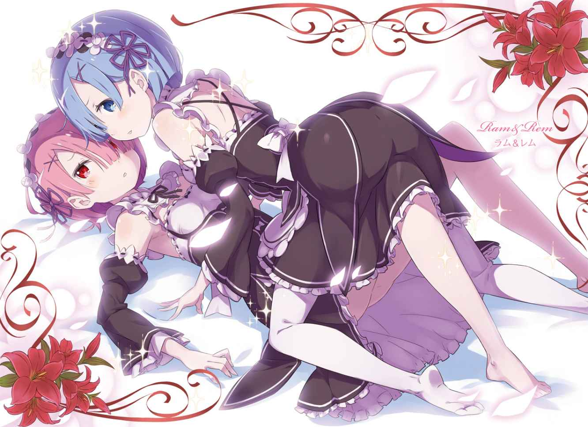
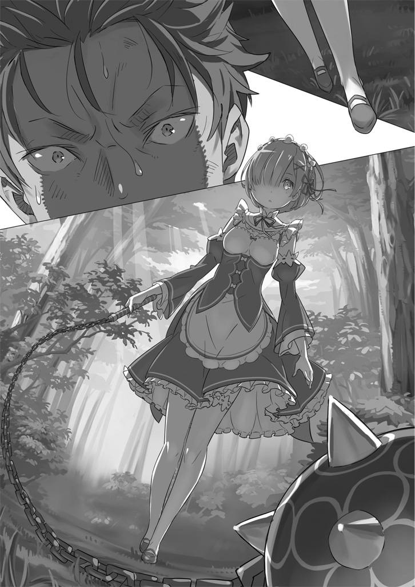

| Ｒｅ：ゼロから始める異世界生活 2<Ｒｅ：ゼロから始める異世界生活> (MF文庫J) | |
| II ofＲｅ：ゼロから始める異世界生活 | |
| 長月 達平 | |
| (2015) | |
B00JB3DY3M EBOK

ＭＦ文庫Ｊ
Ｒｅ：ゼロから始める異世界生活２
長月達平
口絵・本文イラスト●大塚真一郎
編集●池本昌仁
プロローグ『贖いの始まり』
──そのときに得た感情のことは、今でも深く覚えている。
見慣れた景色が炎であぶられ、見知った人々が物言わぬ骸へと変わっていく。
終わっていく世界。閉じていた世界。報われない世界。
ただただ厳しくて、ただただ理不尽で、ただただ傷付けられるだけの、そんな世界。
手を伸ばし、指を動かし、唇を震わせて、それでも懇願する。
そんな救いのない世界であったとしても、自分にはそれしかなかったのだから。
ずっとずっと、目の前を塞いでくれる背中の後ろから、覗くだけだった世界。
その壁がふいに取り払われて、広がった世界の眩しさに目を細めて、肌を焼く炎の熱さと色を、焦げつく肉の臭いと色を、宙を舞う『角』の美しさとその色を、全てをその眼に、開き切っていなかった視界に刻みつけて──。
もう、終わってしまうかもしれない世界の中で、自分が何を思っていたのか。
そのときに得てしまった感情──そのことを今も覚えているから。
それからの彼女の日々は全て、その感情への罪滅ぼしだけでできていた。
第一章 『自覚する感情』
１
瞼を開けて最初に飛び込んできたのは、人工的な印象の白い輝きだった。光の向こうには広い天井があり、備え付けの結晶がぼんやり淡く輝いて室内を照らしている。
寝起きの頭でそれを確認し、スバルの意識はすぐに覚醒する。寝起きの良さは体質だ。
「......枕の感触が違ぇな。匂いと品質が、いつものと桁一つは値段が違う」
スバルは布団の感触を堪能して、ほのかにいい香りがする寝台から上体を起こす。
一目で上流階級とわかる一室だ。スバルの寝る寝台も、スバルが五人寝ても余裕があるキングサイズ──二十畳近い広さの部屋に、ででんとベッドだけある妙な間取り。
「壁の絵とか調度品が申し訳程度にあるから逆に寂しさが増すな。客室、でいいのか」
完全に覚醒したスバルは、寝台から下りると軽く手足を回して体調を確認する。肩や足回りの状態をその場で確かめ、最後に服をぺろっとめくってお腹に触る。
「お腹の傷......なーし。打撲はもちろん、切腹痕もなしか。縫い目も残らないとは、この世界の外科は優秀だぜ。俺の大活躍が妄想でなければ、だけど」
自らの腹を深々と切り裂かれた記憶と一連の出来事を回想する。
地球の日本国で普通の高校生をやっていたはずのスバルは、突如として異世界に召喚されて死ぬほど──文字通り、何度も死ぬほどの目に遭った。
こうして今、命を繋いでいられるのはいくつもの奇跡が重なった偶然の産物だ。
「それにしても、あれからどんだけ経ってんだか......時間のわかるもん、ねぇな」
きょろきょろと部屋の中を見回すが、カレンダーや時計の類は見当たらない。扉上の黄色に光る結晶が目立つのと、窓の外の暗さから今が夜だとわかったのが新しい情報だ。
スバルは肩をすくめると、大きく深呼吸をする。そして、
「とにかくなんにせよ......今回は『死に戻り』は回避できたってことだな」
出しかねていた結論を口にして、ようやく現実と向き合う覚悟を決めたのだった。
２
「一回無様に死んで、二回目も果敢に死んで、三回目で犬死して、四回目は死闘の果てに流れ弾で死亡──的な展開は避けたか。もし死んでたらモブ一直線だったぜ、俺」
寝台に体重を預けながら、スバルは指折り自分の死因を数えてげんなりする。
振り返ると、未遂も含めて刃傷沙汰で死んでばかりだ。しばらく刃物は見たくもない。
ともあれ、『死に戻り』を何とか回避して、ようやく時間が経過している。致命傷を負ったはずのスバルがこうして無事でいられるのは、
「状況から考えて、あの子......エミリアの回復魔法、かな？」
脳裏に浮かぶのは、銀髪に紫紺の瞳の美しい少女──エミリアだ。
腹の傷の治療は、彼女のものと思って間違いないだろう。実際にエミリアに傷を癒してもらった経験のあるスバルにとって、そう考えるのが自然なことだった。
そして必然的に、スバルが休まされている客室──この屋敷の持ち主も、エミリアであるとスバルは考える。もっとも、
「屋敷に関しては、ラインハルトの家の可能性もあるけどな。......それにしても」
ちらと部屋の扉に目を向けて、スバルは音沙汰のない状況に不満のため息をつく。
「普通、目覚めたら『起きた？』なんて枕元で看病してくれてた美少女が声かけてくれるもんだろ。召喚のときも美少女不在だし、召喚ものとしてちょっと不備が目立つぞ......」
無双もできないし出会いも少ないし、召喚ものとしては落第点だ。
「それに、ここまで動きがないとなると......自力で現状確認と洒落込むしかねぇか」
スバルは跳ねるように立ち上がると部屋の扉に手をかける。ひんやりとした空気が開けた戸の向こうから流れ込み、素足が床の冷たさをダイレクトに伝えてきた。
部屋の外に出ると、広がっていたのは壁や床を暖色系で統一した広い廊下だ。左右、どちらにも長々と通路が続いていて、恐ろしいことに廊下の突き当たりが見えない。
「豪邸すぎて、うわぁとしか言えねぇよ。超広いってか広大......人の気配がしねぇぞ」
素足で廊下をぺたぺたと歩きながら、スバルはその静けさに眉を寄せる。生活音というべきものがまるで聞こえないのだ。
「夜だってこと差っ引いても静かすぎんな......これじゃ、でかい声出すのも躊躇うわ」
本来なら大声を上げながら「誰かいませんかー！」ぐらいやるのがスバルの性格なのだが、現在の状況でそれをするのも危ぶまれる。
なにせスバルは現時点で、自分が安全な場所にいるかどうかも把握できていない。
当たり前のようにスバルに好意的な人物の屋敷と判断したが、最悪、スバルが意識をなくした後に、腸大好きな殺人鬼が戻ってきて、スバルを拉致した可能性もなくはない。
かといって、そんな可能性まで考慮していては何も行動など起こせないわけで。
「人生なるようにしかならんと、賢一も言ってたじゃねぇか。俺もそう思おう」
ちなみに賢一、というのはスバルの父の名前だ。実にスバルの父らしい人物である。
歩き出すスバルの足取りに迷いはない。だが、しばらく歩き、スバルは首をひねる。
「こんだけ歩いて、端に着くどころか突き当たりも見えねぇとか、そんなことあるか？」
さすがに違和感を誤魔化し切れない。きた道を戻ることも検討に入れてスバルは振り返る。そして、「あれ？」と眉をひそめた。
「この絵......最初、部屋出たときに目の前にあったと思ったんだが......」
廊下に飾られた油絵を前にして、スバルは腕を組んでうなる。
絵は夜の森を描いたもので、部屋を出て最初に目にしたものと同じ気がする。
スバルが牛歩過ぎた、などという展開でなければ、パッと思い浮かぶ可能性は、
「床が機械仕掛けで動いてるか、まさかの場合は廊下がループしてる......かな」
おそらく、廊下をある程度移動したところで、マップの反対側に転移させられているのだ。ＲＰＧなどではおなじみのフィールドトラップだが。
「もし廊下がループしてるってんなら、『死に戻り』といいずいぶん縁があるもんだな」
誰にともなく同意を求めながら、スバルは手近な部屋の扉を開ける。すると、中に何も置かれていない殺風景な部屋に出迎えられた。当然ながら誰もいない。
「ループする廊下といくつかの部屋......正解を見つけなきゃ出られない的な展開か？」
まだ異世界召喚のことすらちゃんと受け止めきれたわけではないのに、目覚めてすぐに新たなファンタジー要素に出くわすとは頭を抱えたくなる状況だ。
「お約束の展開からすると、俺はこれから正解の部屋を探して何時間もさまようことになるだろうな。腹は減り、精神は擦り切れ、体力もやがて底を尽きる。それなら......」
息を呑み、額の汗を拭って、スバルは覚悟を決めて最初の一歩を踏み出す。
油絵の飾られた正面の扉、つまりはスバルが出てきたと思しき扉のドアノブをひねり、
「誰かくるまで部屋で寝てよ。もしくは、ありがちな最初の部屋がゴールの可能性」
そんな投げ出し屋な性格と思いつきに等しい発想で、スバルは部屋の中に入り──、
「......なんて、心の底から腹立たしい奴なのかしら」
そして、見覚えのない書庫の中、スバルを見つめる巻き毛の少女の恨み節を受けた。
３
──そこはまさしく、『書庫』と呼ぶにふさわしい部屋だった。
部屋の広さは先の客室の倍ほどもあり、天井まで届く本棚がそのスペースを埋め尽くしている。本棚にも本がぎっしり並べられていて、その蔵書数は想像するのも難しい。
「で、こんだけ本があっても俺が読めそうな本はなし......がっかりだな」
パッと本棚を見渡しても、日本語表記の背表紙は見当たらない。アルファベットの類もなく、王都で見かけた象形文字の数々──この世界の公用文字がずらりと並んでいる。
何度見ても読み取れない文字を見やり、スバルは思わずため息をこぼした。
「他人の書架をずけずけ眺めて、おまけにため息。......ひょっとしてケンカを売ってるのかしら？ だったら買ってやるのよ？」
「そんなツンツンしてると可愛い顔が台無しだぜ？ ほら、スマイルスマイル」
「ベティーが可愛いなんて当たり前かしら。お前に見せる笑顔なんて嘲笑で十分なのよ」
頬に指を当てて笑顔を作るスバルに、少女は愛らしい顔に酷薄な笑みを貼りつけた。
この表現も異世界で何度目になるか──美しく、可憐な少女だった。
年齢は貧民街で会ったフェルトよりさらに幼く、おそらく十一、二歳といったところだ。フリルが多用された豪奢なドレスがやたらと似合う、愛らしい顔立ちをしている。
淡いクリーム色の髪を長く伸ばし、縦ロールに巻いているのが特徴的だ。微笑めば誰もが頬を緩めずにはいられない可愛らしさ。
大きめの本を抱えて、木製の脚立に腰掛けながら、少女はスバルを見上げている。
「嘲笑とか難しい言葉知ってんなぁ。あと、不機嫌なのは俺が一発で正解引いたせいだろ？ ごめんな！ 俺、こういうのって昔っからこうなんだよ」
ヒントなしで複数の選択肢を用意されても、一発で正解を引き当てる才能を持つのがナツキ・スバル。過去にスバルがそのスキルで無意識に潰してきたイベントは多い。さっきの廊下もその一つに加わるだろう。
「人がけっこうな労力で領域を構築したのに、それをあんな適当に......最悪なのよ」
「ＧＭからしたら全部のイベント踏んでほしい気持ちはわかるけどな。すまねすまね」
軽く手を上げてスバルが謝ると、少女は恨めしげに半眼で睨みつけてくる。少女の恨みの視線に照れ笑いで応じつつ、スバルは内心で現状を慎ましく整理する。
今の少女の発言からして、廊下のループの原因はこの少女だったらしい。だが少女の目論見はスバルの軽率な行いでおしゃかになったわけだ。
「まぁ、お互い様ってことで水に流そうぜ。とりあえず、ここってどこよ。教えてくれ」
「ふん。ベティーの書庫兼、寝室兼、私室かしら」
「俺は額面通りの答えにガッカリすべき？ ここで寝泊まりとか自分の部屋がないの可哀想って哀れむべき？ それとも、書庫を私室扱いしちゃう部分を微笑ましく思うべき？」
「少しからかってやろうとしたらなんたる言い草なのかしら！」
皮肉を素で返されてご立腹の少女──自称ベティーは頬を膨らませると、脚立から腰を上げてスバルの方へ歩み寄ってくる。
「そろそろベティーも限界なのよ。ちょっと、思い知らせてやるかしら」
「おい、何しでかす気だ、やめよーぜ！ 俺ってば見ての通り戦闘力なしの一般人だぜ？」
瞳を潤ませて小さくなりながら、小刻みに体を震わせる決死のアピール。が、少女の歩みは緩むどころか速度を増した。
「──動くんじゃないのよ」
ゾッと、背筋を寒気が走るような感覚がスバルを襲った。
目の前、すでに少女はスバルに手が届く位置にまで近づいている。
自分の胸ほどまでしか背丈のない少女に、薄青の瞳で見つめられて硬直するスバル。肌が粟立ち、静寂が甲高い耳鳴りを頭蓋の中で打ち鳴らしていた。
「何か言いたいことでも？」
少女の問いかけに、わずかな時間だけ硬直を解かれる。許された一瞬で、スバルは何を口にするべきか最善の一言を探す。視線をさまよわせ、スバルは唇を震わせた。
「い、痛くしないでね？」
「軽口もここまで徹底してると感心するかしら」
本気で感心したような口調で言って、少女の手がスバルの胸に伸びる。掌が胸に当てられて、表面を優しく指先がなぞった。くすぐったい感触。そして──
「ぶわぅ......ッ」
──次の瞬間、スバルは全身を炎であぶられたような錯覚を得ていた。
すさまじい何かが体内を荒れ狂い、指先から髪の毛一本まで全てを焼き尽くされるような感覚。体の内外を、余さず火炎の指でなぞられたような痛みを伴う不快感。
視界が明滅し、気付けばスバルは大量の涙を流して膝から崩れ落ちていた。
「気絶しなかったみたいなのよ。聞いてた通り、頑丈な奴かしら」
「な、何しやがった、ドリルロリ......」
「ちょっと体の中のマナに干渉しただけなのよ。おかしな循環の仕方をしてる奴かしら」
少女は悪びれずに呟いて膝を折ると、震えているスバルの体を指で突いた。
「まぁ、敵意がないみたいなのは確かめられたのよ。それに、これまでベティーに働いた散々の無礼も、今のマナ徴収で許してやるかしら」
限界に達したスバルは、突かれるだけで上体を支えられず、頭を床に落とす。それでも時間をかけてゆっくりと首を動かし、自分を見下ろす少女の嗜虐的な笑みを睨みつける。
「お前、アレだろ......人間じゃねぇな。この場合、性格的な意味じゃなく」
「にーちゃに会ってるわりには気付くのが遅かったのよ」
這いつくばるスバルを楽しげに見下ろす少女。少女の語り口は見た目以上に幼く、それがかえって羽虫の羽をもいで遊ぶ残酷な幼児性を感じさせた。
「一個、訂正......性格的にも、お前、人間じゃねぇや......」
「気高く貴き存在を、お前の尺度で測るんじゃないのよ、ニンゲン」
それは少女が口にするには、あまりにも冷たすぎる温度の発言だ。
胸の内にくすぶるものをスバルは感じる。だが、感じた熱を言葉にするだけの余力が残されていない。意識はスバルの意思と無関係に、闇へと沈もうとしている。
──目が覚めたばっかりだってのに、また意識不明かよ。
「ここで死なれても死骸をまたぐのが面倒かしら。他の連中には話しておいてやるのよ」
──虫みたいに聞こえるから、死骸とか言うなこの野郎。違った、このガキ。
そんな減らず口を叩くこともできず、スバルは再び眠りへ落ちていった。
４
「あら、目覚めましたね、姉様」
「そうね、目覚めたわね、レム」
再びの目覚めは、声質の同じ二人の少女の声から始まった。
柔らかな寝心地はどうやらさっきと同じベッド。寝起きのスバルの瞼を焼いたのは、カーテンからわずかに差し込む眩い日差し──感覚的に、朝だろうかと思う。
「夜型人間というか、半ば夜の眷族だった俺が朝に起きるとか、胸が熱くなるな......」
不登校中の昼夜逆転生活を思い出しながら、覚醒したスバルは上体を起こす。そのまま首を回し、肩を回し、腰を回して窓の方へ目を向ける。
「今は陽日七時になるところですよ、お客様」
「今は陽日七時になったところだわ、お客様」
声が親切に時間を教えてくれた。陽日七時──意味は伝わってこないが、想像できる字面から朝の七時、という認識でいいのだろうか。
「そうすると、さっきの目覚めがノーカンならほぼ丸一日寝っ放したか。まぁ、最高で二日半も寝続けた俺には大したことでもねぇけどな」
「まあ、穀潰しの発言ですよ。聞きました、姉様」
「ええ、ろくでなしの発言ね。聞いたわよ、レム」
「んで、さっきからステレオチックに俺を責める君らは誰よ、姉様方！」
布団を跳ね除けて勢いよく起き上がると、ベッドの左右からスバルを挟んでいた少女たちが驚き、小走りに部屋の中央で合流。互いに手を取って、顔を寄せ合いスバルを見る。
並ぶ二人の少女──それは瓜二つの顔立ちをした、双子の少女たちだった。
身長は百五十センチ真ん中ぐらい。大きな瞳に桃色の唇、彫りの浅い顔立ちは幼さと愛らしさを同居させていて可憐の一言だ。髪型もショートボブで揃いにしており、髪の分け目を違えて、右目と左目を片方ずつそれぞれ隠している。
その髪の分け目と、髪の色が桃色と青色で違っているのが見分ける特徴だった。
双子の少女をざっと観察したスバル。その喉が、心を掻き乱されて思わず震える。
「馬鹿な......この世界にも、メイド服が存在するっていうのか！」
黒を基調としたエプロンドレスに、頭の上にはホワイトプリム。細い肩が露出する特殊な改造メイド服は、短いスカートと相まって体のラインがはっきり出て扇情的ですらある。メイド服に関して造詣の深くないスバルだが、この格好にデザイナーの露骨な趣味が反映されていることは間違いない──が、双子の美少女が着ている現実には違いない。
「メイドは俺にとって奥ゆかしさの体現のイメージだったが......これも悪くない！」
「大変ですよ。今、お客様の頭の中で卑猥な辱めを受けています。姉様が」
「大変だわ。今、お客様の頭の中で恥辱の限りを受けているのよ。レムが」
「俺のキャパシティを舐めるなよ。二人まとめて妄想の餌食だぜ。姉様方」
両腕を交差して宙で掌をわきわき。無意味な動作にメイド二人の顔に戦慄が浮かび、少女たちは絡めていた指を解くとお互いを指差し合った。
「許してください、お客様。レムだけは見逃して、姉様を汚してください」
「やめてちょうだい、お客様。ラムは見逃して、レムを凌辱するといいわ」
「超麗しくねぇな、この姉妹愛！ お互い売るとか、そして俺は超悪役！」
メイド二人が被害者役を押し付け合う中、スバルはどちらから先に毒牙に掛けてやろうかと三白眼の目つきを細める。と、そこでふと気付いた。
「......もっと大人しく起きたりできなかったの？」
とんとん、と開いた扉を内側からノックして、三人を眺める少女が立っていた。
腰に届く長い銀髪は、今日は結びを解かれて自然と背中へ流されている。服装は王都で見たローブ姿ではなく、白色のイメージが強い細身に似合ったデザインの格好。スカート丈の意外な短さと、すらりと長い足が絶妙で思わずスバルはガッツポーズ。
「わかってる！ 選んだ奴はわかってるぜ！」
「......なんのことだかわからないのに、くだらないことってわかるのがすごーく残念」
喝采するスバルを銀髪の少女──エミリアが呆れたような目で見ていた。
突然のエミリアの来訪に、困惑だらけだったスバルの心境は一挙に舞い上がる。
立て続けに知らない相手──特に最初の幼女にはひどい目に遭わされただけに、異世界召喚直後のやり取りで得た知己であるエミリアには格別な思いがある。
「血が足りてないところにベアトリスが悪さしたって聞いたから、ちょっと心配してきたのに......すごーく損した気分」
「俺は寝起きで君の顔見れて超いい気分だけどね。それで、ちょい聞くの恐いんだけど」
訝しがるエミリアに対し、スバルは両手を合わせながらおずおずと上目遣いをした。
「その、あの......俺のことって、ちゃんと覚えてくれてる？」
「その仕草、なんか嫌。それに変な質問するのね。スバルぐらい印象が強い子って、そうそう忘れられないと思うんだけど」
微笑するエミリアに名前を呼ばれて、スバルは安堵に肩を落とした。それからすぐ、女の子に下の名前で呼び捨てにされていることに気付き、珍しいぐらい素で照れる。
「聞いてください、エミリア様。あの方に酷い辱めを受けました。姉様が」
「聞いてちょうだい、エミリア様。あの男に監禁凌辱されたのよ。レムが」
耳まで赤いスバルはさて置き、エミリアに駆け寄る双子が事実無根の告げ口をする。二人の密告にエミリアは苦笑すると、スバルの方を横目にした。
「あなたたち二人にそんな悪ふざけ......スバルはしないなんて言い切れるほど知らないけど、きっとやらないって信じてるもの。あんまりからかいすぎないの」
「はーい、エミリア様。姉様も反省しています」
「はーい、エミリア様。レムも反省しているわ」
ラム、レム、とそれぞれ自分を呼ぶ二人は反省の欠片も見えない反省を宣言する。二人のそんな態度に慣れているのか、エミリアはさして気にした風もない。
「それでスバル、体の調子は大丈夫？ どこか変だったりしない？」
「ん、お、そういや寝る前は全身火傷したみたいで死ぬかと思ったのに、そんな感じも全然ねぇな。逆に寝過ぎてちょっとだるいくらい」
「そのくらいで済んでるなら十分。軽く、お散歩でもする？」
「散歩？」
小さく笑うエミリアに、スバルは首を傾げる。
「そ、お散歩。私も日課でお庭に出るつもりだったし、ちょうどいいでしょ？」
「日課......って、何すんの？ 花壇に水やり？」
「ちょっと違うかな。精霊とお話しするの。毎朝、契約してる子たちとそうして触れ合うのが、私とあの子たちの契約条件の一つだから」
精霊、という単語にスバルはエミリアと常に一緒にいた猫型精霊を思い出す。
散歩と精霊とのお話。好奇心と下心が同時にくすぐられるナイスな提案だ。
「んじゃ、リハビリついでにご一緒しよっかな。エミリアたんが庭で精霊トークしてる間、歩き回ったり筋トレしたりちょこまかしてるよ」
「ん、大声で騒いだりしなければそれで......え？ 今、なんて言ったの？」
「おし、言質は取った。庭に出ようぜ」
「ねえ、なんて言ったの？ たんってなに？ どこからきたの？」
愛称めいた呼び名にエミリアが困惑する。素直に名前を呼べない照れ隠しを誤魔化しながら、スバルは傍らに立つメイド二人に顔を向けた。
「へい、メイド姉妹。俺の元の服ってどこいった？ いつの間にか入院服みたいになってるし、たぶんこの屋敷で預かってくれてると思うんだけど」
「わかりますか、姉様。ひょっとして、あの薄汚い灰色の布切れでしょうか？」
「わかったわよ、レム。たぶん、あの血で薄汚れた鼠色のボロキレでしょうね」
「かなり不敵だな。その薄汚いドブネズミ色のボロだよ。無事なら持ってきてちょうだい」
スバルの求めに双子がエミリアを見る。許可を欲する視線だ。エミリアが顎を引いて応じると、双子はお辞儀を丁寧にして部屋を出ていった。
「私から言い出したことだけど、無理はしちゃダメだからね。ひどい傷だったんだから」
「でも実際、もうパーフェクトに塞がってるしな。と、そういやそうだった」
思い出したように姿勢を正し、スバルはエミリアにゆっくりと頭を下げた。
「ケガ、治してくれたのってエミリアたんだよな。ありがとう、助かった。やっぱ死ぬのは恐いわ。実際、一回でいいよ」
「普通は一回しかないと思うけど......ううん、そうじゃなかった」
思わず突っ込みを入れてから、エミリアは紫紺の瞳を潤ませてスバルを見る。
「お礼を言うのは私の方。あの場所で、ほとんど知らない私のことを命懸けで助けてくれたじゃない。ケガの治療なんて、当たり前なんだから」
真摯な眼差しで感謝を伝えられて、スバルは思わず息を詰まらせた。
さらっと誠実な返事の一つも出てこない自分が恨めしい。
──助けてくれた、というエミリアの言葉に「そうじゃない」と言いたかった。先に助けてくれたのはエミリアなのだ。
だがその記憶はもう、スバルの中にしか残っていない。
もう、決して伝えることのできない感謝の気持ちを呑み込んで、スバルは笑う。
「──んじゃ、お互いに助け合ってプラマイゼロってことでどうよ」
「ぷらまい......？」
「互いに貸し借りなしの対等だ！ そんなわけで仲良くしようぜ、兄弟！」
貧民街の住人相手なら、ここで肩の一つでも気軽に組んだところだ。だが、今のスバルにできたのは勢いで羞恥と照れを誤魔化すだけ。そんなスバルにエミリアは小さく笑う。
「私、こんな変な弟はいらないかな」
「わりと辛辣なコメントですね!?」
しかもさりげなく目下扱いされているこのガッカリ感。
そうして互いに笑い合ううち、ドアを開けて双子のメイドが戻ってくる。二人がそれぞれ、ジャージの上下を分担して持っているのを見て、スバルはぐっと背筋を伸ばした。
「改めまして、一日の始まりといきますか」
『死に戻り』を乗り越えての最初の一日が、本当の意味でスタートする。
５
わざわざ着替えさせてくれようとするメイド二人を振り切り、独力で着替えを断行したスバルはエミリアと屋敷の庭に出た。
広い庭を見渡し、スバルは感嘆の息をこぼす。
「やっぱでっけぇなぁ。屋敷もそうだけど、庭も庭ってより原っぱだ」
お金持ちの屋敷の庭園──漫画やアニメでたびたび登場する、立食パーティなどが行われるような風景が広がっている。だだっ広い庭の真ん中で、スバルはさっそくリハビリがてらに屈伸運動を始めた。
スバルの動きを見て、エミリアが不思議そうな顔をする。
「珍しい動きだけど、何してるの？」
「あれ、準備運動の概念ってないの？ 本格的に体動かす前にあちこちほぐさねぇと」
「ふーん、あんまり見たことないかも。でも、急に体を動かすと危ないのはわかるかな」
「この世界の人間は準備運動しねぇのか。んじゃ、仕方ない。教えてあげようじゃあーりませんか。俺の故郷に伝わる、由緒正しい準備運動をな！」
自信満々なスバルの気迫に呑まれたのか、エミリアはたじろぎながらも「そ、そう。じゃあ、ちょっとだけ」とスバルにならう。スバルはエミリアに隣に並ぶよう指示すると、
「ラジオ体操第二～！ 手を前に伸ばして、のびのび背伸びの運動～！」
「え、うそ、なに!?」
「俺の真似してやってみよう。ラジオ体操の真髄を叩き込んじゃるぜ」
戸惑うエミリアを叱咤しつつ、スバルは全国的に有名なラジオ体操をアカペラ。
最初は困惑していたエミリアだったが、やり切る頃には完全に没頭していた。
二人、最後の深呼吸まで終わらせ、締めに両手を天に伸ばす。
「で、最後に両手を掲げて、ヴィクトリー！」
「び、びくとりー」
「よし、初めてにしちゃ上出来だ。エミリアたんに『ラジオニスト初級』を授ける！」
全力のラジオ体操をやり終えて、称号を授けるスバルにエミリアは感銘を受けた表情でいる。が、息を整えるとようよう最初の目的を思い出した顔になった。
「そだ。すごーく話がずれちゃったけど、忘れたら怒られちゃうから」
そう言って薄く微笑むエミリアは、懐から緑色の結晶を抜き出してスバルに見せる。
「あ、それって」
「精霊が身を宿す結晶石よ。パックのことは、知ってたわよね」
「肝心な場面で居眠りこいた小猫だろ？ その後の俺の活躍知らないんじゃないの？」
「あいにく、ちゃんと騒ぎが片付いた後でリアから話を聞いてるよ、スバル」
スバルの悪態に反応するように結晶石が輝く。響いた声は中性的なもので、やがて結晶石から溢れ出した光が結集し、小さな輪郭をエミリアの掌の上に作り出した。
掌サイズの小さな体、体長と同じくらいに長い尻尾。二足歩行の小猫精霊、パックだ。
「や。おはよう、スバル。いい朝だね」
「俺にとってはわりと深夜から朝にかけて波乱万丈だったけどな。ループする廊下とタチの悪い幼女の猛威。それを乗り越えた朝、エミリアたんと一緒に情熱の汗を流し......」
「人聞き悪い言い方しないの」
咎めるように唇を尖らせるエミリア。それからエミリアは掌の上のパックを見つめる。
「おはよ、パック。昨日は色々、無理させてごめんね」
「おはよう、リア。でも、昨日のことはボクの方が悪いと思うよ。危うく君を失うところだ。スバルには感謝してもし足りないくらいだね」
パックは黒くて丸い瞳でスバルを見上げると、手で自分のピンクの鼻を撫でつけた。
「お礼をしなきゃね。何かしてほしいことはあるかな。大抵のことはできるけど」
「んじゃ、好きなときにその毛並み触らせてくれ」
大きく出たパックに対し、スバルもまた即答で返した。
パックとエミリアが目を丸くする。返事の早さもだが、その内容も驚きだったらしい。
「ちょ、もうちょっと考えて決めてもいいんじゃない？ 小さくて頼りにならなそうに見えるかもしれないけど、パックの力はホントにすごいんだから」
「少し引っかかるけど、そうだよ。こう見えて、ボクはけっこう偉い精霊なんだ」
「おいおい、俺みたいな一流の毛並み職人的には、触りたい愛玩対象をいつでも愛でられるってのは、巨万の富と引き換えにしても惜しくない対価だぜ。いやマジで」
言いながら、スバルは権利を履行してパックに指を伸ばす。お腹に顎、トドメに耳だ。
「耳ヤバいな！ もう俺はお前のふわふわっぷりにメロメロだよ！」
「うすぼんやり心が読めるからわかるけど、本気で言ってるところがすごいね」
手指で自由に弄ばれながら、パックは愉快げに喉を鳴らした。
スバルとパックが戯れる様子に、エミリアは諦めたようにため息をこぼす。
「それじゃ、私は微精霊の子たちとお話してるから......スバルとパックは遊んでていいけど、邪魔しちゃダメだからね」
「見放されたな」
「見放されちゃった」
おどけて肩をすくめる二人を、エミリアは無言で無視してそそくさと庭の端っこへ。地面を軽く払って腰を落とすエミリア。目をつむる彼女の周囲を、ぼんやり淡い光が取り巻き始めた。──見覚えのある光景だ。
「微精霊、か？」
「そうだよ。よく区別がついたね。準精霊と微精霊、区別つかない人が多いんだけど」
「当てずっぽう......ってわけじゃねぇけど、区別の方法とかは俺も知らねぇよ？」
スバルがエミリアの周囲を浮遊する光を微精霊と知っていたのは、王都で起きたループの最中で一度、エミリアの口から微精霊という単語を聞いていたからだ。
座るエミリアは小声で微精霊と言葉を交わしており、時折、微笑むエミリアに同調するように微精霊たちも淡い明滅を繰り返していた。
「微精霊との契約、とか言ってたけど、あれって何してるとこなんだ？」
「精霊との契約の儀式。──誓約の履行だよ」
聞き覚えのない単語にしかめ面になるスバル。
「えーとね。まず、精霊使いは精霊と契約しないと精霊術が使えないんだね。で、契約内容は精霊によって異なるんだよ。ここまではいいかな？」
「金貸しによって利息とか担保が違うってわけだな。オーケー」
「ボクがオーケーじゃないけど進めるね。それで、精霊が求めることは個々で違うんだけど......ああいう微精霊たちは術者との触れ合いみたいな、簡単な条件で契約ができるんだ」
「お手軽っていうか初心者向けって感じだな。つっても、今の言い方だとちゃんとした精霊は別なんだろ？」
「賢い子は話が早くて助かるよ。だから余計な脱線して話が進まないって気もするけど」
いやあ、と照れ笑いするスバルにパックは生温かい視線を向けて自分のヒゲを弄る。
「その通り、ボクみたいな意思ある精霊はもうちょっと要求が厳しいよ。その分、契約者に貢献するつもりだけど......ボクもリアにつけてる条件は厳しいよ」
「さっきから気になってたけど、そのリアって呼び方可愛いな」
「君のエミリアたんには負けるよー。ボクも今度からそう呼ぼうかな」
「──お願いだから、絶対にやめて」
二人の悪ノリに、エミリアが膨れっ面で割り込む。
戻ってきたエミリアの周囲からは精霊の輝きが消えており、どうやら精霊トークショーは終了したらしい。スバルは立ち上がりながら尻についた草を払う。
「親睦会終わりかな？ 案外、ちょろい感じで済むんだね」
「二人が気になるから手短にお願いしたの。明日、もうちょっとちゃんとお話しなきゃ」
言いながら差し出されるエミリアの掌に、スバルの下から移動するパックが着地。パックは丸い瞳をエミリアに向けて、含むように小さく笑った。
「大丈夫。探ってみた感じだと、スバルには悪意とか敵意とか害意ってものは見当たらないかな。ちょっと性根がねじくれてるけど、いい子だよ」
「ちょ......」
パックの散々な評価にエミリアが思わず絶句。それから口をパクパクとさせて、
「なんで本人の前で......そんなこと、本当のことでも言われたら傷付くじゃない」
「あー、いいっていいって。俺みたいな素性の知れない奴、探り入れんのは当然だろ。疑るのが当たり前だ。今のエミリアたんのフォローには傷付いたけどね！」
慌てて口を手で塞ぐエミリアにスバルは苦笑い。
パックが理由もなく触れてきたわけではないのは、スバルにも予想がついた話だ。
ここまでまともな情報一つ出さないスバルを、無警戒で受け入れるほどエミリアたちは不用心ではない。ラムやレムの態度も、そういった思惑の一部だろう。
「とはいえ、うまく説明する手段はねぇし」
記憶はあるけど戸籍はない、というのがこの世界のスバルの現状だ。
召喚されたという事実は説明が難しい上に、頭のおかしい人物扱いされる可能性が高い。
それならばいっそ、パックの人格判断に身を任せてしまえばいい。
心の表層が読める上に、エミリアに信頼されるパックの言葉なら、スバルの口から説明するよりずっと説得力がある。
「平気だよ、リア。っていうか、スバルはそのあたりもわかってる。まんまとボクの読心を利用するなんて、悪い子だよ」
「光栄な評価だね。そのままうまくとりなしてくれよ、マイフレンド」
スバルの呼びかけにきょとんとした顔をして、それからパックは笑みを弾けさせた。
「そんな風に接してもらうのは本当に久しぶりだよ。うん、好ましいなぁ」
「どうせならエミリアたんの方にしてほしい評価だな。いや、将を射んと欲すればまずは馬から。いや、猫だけど効果あるかな。......どったの？」
顎に指を当てて真剣に悩む顔のスバルを、エミリアが驚いた顔で見ていた。
スバルが疑問に眉を上げると、エミリアは「ううん」と小さく息を呑む。
「──ホントに、スバルって不思議」
「ほぇ？」
「精霊とこんなに普通に触れ合って、おまけに私みたいな......ハーフエルフにも色目が使えるなんて。冗談でもビックリしちゃう」
『冗談でもなければ、そんな驚かれることしてますか？』というのがスバルの内心の発言だったが、それすら忘れてエミリアの微笑に見惚れてしまう。
エミリアの微笑みが、王都で名前を交換したときと同じぐらい透き通った笑みだったから。儚さとも切なさとも違い、見ていて思わず心が躍るような。
美しく流れる銀髪は月の雫のように幻想的で、新雪のように透き通る白い肌。紫紺の瞳は魅了の呪いでも放っているようにスバルの意識を惹きつけ放さない。
気高く、美しく、折れ曲がらない芯を心に抱いていることを知っている。
自然と、感謝以外の感情を横顔に抱いてしまいそうで、スバルは自制する。
「あれ、二人ともどうかしたの？」
と、何かに気付いたエミリアの声に、スバルも屋敷の方を見やる。
屋敷から庭園に降り立ったのは双子のメイドだ。
二人はスバルたちの前までやってくると厳かに一礼する。
「──当主、ロズワール様がお戻りになられました。どうかお屋敷へ」
一瞬のズレもない完璧なステレオ音声。
乱れない連携にも驚かされたが、双子の態度の豹変ぶりにもスバルは驚いた。
先ほどまでの軽々しさが消えて、二人から豪邸の使用人としての貫禄が感じられる。
「そう。ロズワールが。......じゃ、迎えにいかないとね」
「はい。それからお客様も。目が覚めているならご一緒されるようにと」
パックがエミリアの銀髪の中に潜り込み、髪を撫でて受け入れたエミリアは少し固い表情だ。エミリアの横顔を見つめながら、ご指名されたスバルは首の骨を鳴らす。
「で、ロズワールってのは誰のこと？」
「この屋敷の持ち主......そっか、説明してなかったのよね」
自分の落ち度に気付いたように、エミリアは掌を口に当てる。
「えっと、そうね。ロズワールは......会えばわかるわ」
「説明諦めるの早いな！ そんな特徴ないの!?」
「──ううん、逆」
エミリア、パック、ラム、レムの四人の声が同時に返ってきた。
驚きの四重奏にスバルはポカンと口を開けてしまう。そんなスバルの口をそっと下から手で閉じさせて、青髪の少女が厳かに一礼。
その隣に立つ桃髪のメイドが、屋敷を手で指し示す。
「どんな言葉を並べても、ロズワール様の人となりを表しきることはできません。ご本人に会ってご理解を、お客様。ええ、お優しい方ですから大丈夫」
何度も念押すのが逆に不信感を煽るのだが、双子は顔を見合わせて頷き合うのみ。
困惑するスバルに、渋々双子に同意といった顔つきのエミリアがそっと手を伸ばした。
「──きっと、スバルとは気が合うと思うの。疲れちゃいそうだけど」
スバルの肩をぽんぽんと叩いて、気の重そうな声でエミリアは呟いたのだった。
第二章 『約束した朝は遠く』
１
「上から見てた感じ、アレなのよ。......お前、相当に頭が残念みたいかしら」
朝食の場、と双子に案内された食堂で、巻き毛の少女が挨拶代わりにそう言った。
着替えるために部屋に戻ったエミリアと途中で別れたため、今、食堂の中にいるのはスバルと巻き毛の少女だけ。少女の皮肉にスバルは盛大に嫌な顔をしてみせる。
「爽やかな早朝に顔合わせていきなり何を言いやがんだ、このロリ」
「何かしらその単語。聞いたことないのに、不快な感覚だけはするのよ」
「攻略対象外に幼いって意味だ。俺、年下属性あんまりないし」
「......ベティーにここまで無礼な口を叩けるのも、かえって哀れに思えるかしら」
皮肉めいた少女の言葉を意識的に無視して、スバルは広い食堂をざっと見渡す。
食堂は中央に白いクロスのかかった卓が置かれており、すでに皿の並べられた席が点在している。スバルの用意もあるなら、下座のどれかがスバルの席だろう。
「テーブルマナーその他のわからない俺に、レクチャーすることを許してやるぜ？」
「不遜極まるかしら。わからないならわからないなりに素直に頭を下げるがいいのよ」
「お前に頭下げるぐらいなら堂々と一番の上座に座って思いっきり怒られるわ」
顔を赤くして怒りを露わにする少女に、スバルは掌をひらひらと振って上座に座る。たぶん、ここに座るのはエミリアか当主あたりだろう。可能性は五分五分だ。
本当に上座に尻を落ち着かせたスバルに、巻き毛の少女は呆れた顔で頭を振る。
「まぁ、いいのよ。それよりお前、ベティーに感謝の言葉はないのかしら？」
「感謝って、今まさにお前、俺の救いを求める手を振り払ったばっかじゃねぇか。その上で感謝を要求ってどんな育ち方すると出る結論だよ。親の顔が見てみたいわ！」
「なんでお前が怒るのかしら！ 怒りたいのはベティーの方なのよ！ せっかく......っ」
売り言葉に買い言葉。スバルの返事に声を荒げた少女は、しかし最後で尻すぼみになった。少女の不自然な言葉の切り方にスバルは続きを促そうとする。が、
「失礼いたします、お客様。食事の配膳をさせていただきます」
「失礼するわ、お客様。食器とお茶の配膳をさせてもらうから」
食堂の扉を開き、台車を押す双子のメイドがやってきた。
青髪がサラダやパンといった、オーソドックスな朝食メニューを食卓に並べ、桃髪が手早くカップにお茶を注いで配膳していく。温かな香りに、思わずスバルの腹が鳴った。
「おほー、いいねいいね。いかにも貴族的な食卓だ。......これで異世界チックなゲテモノばっか並んだらどうしようかと思ってたぜ」
場所が異世界であるだけに、何が出てくるか心配していたスバルは一安心。
パッと見、肉体的にも精神的にも重大な危機を及ぼしそうなメニューは見当たらない。
テンションが上がり、背もたれに体重を預けて軋ませるスバル。椅子の軋む音が食堂に響き、澄まし顔の少女の横顔に苛立ちが浮かぶ。
巻き毛の少女になぜかちょっかいをかけずにいられないスバル。少女の澄まし顔をもっと感情的に崩してやろうと悪戯心が芽生えて、スバルは気合を入れて尻を滑らせ──
「あはーぁ。元気なもんじゃーぁないの。いーぃことだよ、いーぃこと」
そうする前に、新たに食堂へ入ってきた人物の嬉しそうな声が全てを中断させていた。
長身の人物だった。
スバルより頭半分は背が高く、濃紺の髪を背に届くぐらいまで伸ばしている。
しかし、その体つきは細身というより華奢に近く、肌の色も病的に青白い。
整った面貌と合わせて、どこか陰のある美青年といった風貌だ。
左右で色違いの、青と黄色の瞳の色鮮やかさもその印象を強めている。
──その配色が奇抜すぎる服装と、ピエロのような顔のメイクがなければ。
「......飯の前の余興にいちいちピエロ雇ってんのか。金持ちの考えはわかんねぇな」
「何を考えてるのかおおよそ想像がつくけど、ベティーは不干渉させてもらうのよ」
「つれねぇな、ベティー。俺とお前の仲だろ？ もっといちゃいちゃトークしようぜ」
「お前とベティーの間にどんな関係が築けたのかしら。あと気安く呼ぶんじゃないのよ」
つれない態度で少女は肩をすくめて会話から離脱。少女の態度にスバルがしかめ面をしていると、食堂の中に踏み出すピエロがスバルと同じく少女を見て目を見開く。
「おーぉやーぁ？ ベアトリスがいるなんて珍しい。久々にわーぁたしと食事を一緒にしてくれる気になったとは、嬉しいじゃーぁないの」
「頭幸せなのはそこの奴だけで十分かしら。ベティーはにーちゃを待ってるだけなのよ」
馴れ馴れしい発言をすげなく切り捨て、少女──ベアトリスの視線はピエロの背後へ。食堂の入口からピエロに遅れて入ってくるのは、着替えてきた銀髪の少女だ。
「にーちゃ！」
弾むように席を立ち、長いスカートを揺らしてベアトリスが走る。花の咲いたような笑みを浮かべる姿は、これまでの少女の生意気な評価を忘れさせる愛嬌に満ちていた。
ベアトリスの視線の先に立つのはエミリアだ。が、応じるのはエミリアではない。
「や。ベティー、四日ぶり。ちゃんと元気でお淑やかにしてたかな？」
気楽な様子で銀髪から姿を見せる灰色の小猫、パックの言葉にベアトリスは頷いた。
「にーちゃの帰りを心待ちにしてたのよ。今日は一緒にいてくれるのかしら」
「うん、だいじょうぶだよー。今日は久しぶりに二人でゆっくりしてようか」
「わーい、なのよ！」
エミリアの肩から飛び立ち、差し出されるベアトリスの掌の上にパックが着地。ベアトリスは受け止めたパックを愛おしげに抱くと、その場でくるくると回り出す。
「ふふ、おったまげたでしょ。ベアトリスがパックにべったりだから」
「おったまげたってきょうび聞かねぇな......」
和気藹々とした風景に驚くスバルに、悪戯っぽく笑うエミリアが歩み寄る。死語を使いこなすエミリアにお決まりの返答をすると、エミリアは「んん？」とスバルを指差した。
「あれ、スバル。その席って......」
「あ、そうだった！ いや違うんだよ。これはね、ほら、椅子の尻が冷たいと心まで荒むかもじゃん。だから先に温めておいただけで、間接シットダウン狙いじゃないんだよ」
「ごめん、ちょっと何言ってるのかわかんない。それにそこ、ロズワールの席よ？」
目を丸くするエミリアの前で、盛大に目論見を外したスバルが椅子から滑り落ちる。
「まあまーぁ、気にすることはなーぁいとも。なるほどエミリア様に君の温もりは届かなかったかもしれないけど、そこは私がきちーぃんと大切に受け取るからねーぇ」
慰めるように手を伸ばし、軽くスバルの肩を叩いて笑いかけてくるピエロ。スバルは肩に触れる手と、道化の優しい笑顔を交互に見比べ、嫌そうに顔をしかめた。
「何このピエロ超馴れ馴れしい。踊り子さんに触るのはマナー違反ですよ？」
「いつ踊り子に......じゃなくて、スバル、その人は......」
「いやいやいーぃやーぁ、構いませんよ、エミリア様。あの瀕死のところからここまで元気になったと思えば、むしろ歓迎すべきことじゃーぁありませんか」
口調に他人を苛立たせる特徴があるものの、至極まともな発言をするピエロ。ピエロはそのままスバルたちの視線を受けたまま、椅子を引いてゆっくり座席に腰を下ろした。
大テーブルのもっとも上座であるその席は、先ほどまでスバルが座っていた位置だ。
「おいおい。俺が言うのもなんだけど、そこ勝手に座ってっと偉い人に怒られっかもよ」
「その心配は大丈夫......っていうか、スバルにやっぱり名乗ってないんだ」
忠告するスバルに、ほとほと呆れた声と顔つきでエミリアが呟く。ただし、エミリアの呆れはスバルだけでなく道化の方にも向けられていた。
「どゆこと？」
「それはつーぅまり、こういうことだーぁとも」
スバルの疑問に椅子に座ったままの道化が、大きく両手を広げて応じた。
「私がこの屋敷の当主、ロズワール・Ｌ・メイザースというわーぁけだよ。無事に当家でくつろげているようで、なーぁによりだとも。──ナツキ・スバルくん」
と、道化姿の変態貴族は清々しいぐらいに図々しく名乗ったのだった。
２
上座のロズワールを筆頭に、それぞれが用意された座席に腰掛けて朝食が始まった。
「む......普通以上にうめぇな」
目の前に並ぶ食事から、サラダ的なものとスープ風なものを口にしたスバルの感想だ。
「ふふーぅん、でしょでしょう。こう見えて、レムの料理はちょっとしたものだよ？」
自慢げなロズワールに頷き返し、スバルは調理担当と思しきレムを見る。レムはスバルの視線に手で狐のサインを作ってみせた。意味がわからないが、ひょっとするとこの世界のＶサイン的なものだろうか。スバルは返礼に両手で蛙を作って応じる。
「この料理は青髪の......えーと、レムちゃんでいいのか。が、作ったの？」
「はい、お客様。当家の食卓はレムが預かっています。姉様はあまり得意ではないので」
「ははーん、双子で得意スキルが違うパターンだ。じゃ、姉様は掃除が得意な感じ？」
「はい、そうです。姉様は掃除、洗濯を家事の中では得意としています」
「じゃ、レムりんは料理系得意だけど、掃除と洗濯は苦手か」
「いえ、レムは基本的に家事全般が得意です。掃除、洗濯も得意ですよ。姉様より」
「姉様の存在意義が消えたな!?」
万能な妹と得意科目でも妹に及ばない姉。双子としては逆に新しい。
妹の発言をラムは気にした風もない。訂正しないということは事実なのだろうが、それならそれで揺るがないラムの態度は何事なのか。
「もしくは分野違いか。ラムちーの方は戦闘職。お庭番的な方向で一つどうよ」
「いーぃね、君。ラムとレムの二人は個性が強いから、初対面には受けが悪いんだけどね」
「キャラの濃さに関しちゃ主が特殊すぎて今さら何ともねぇよ、ロズっち」
ロズっち、と愛称で呼ばれるロズワールだが、スバルの発言を権力者の余裕で見逃す。
煽って相手の感情を引っ張り出す癖があるスバルからすると、思惑を外した形だ。とはいえ、さして気にするでもなく皿の上のメニューを次々に消化して、
「これで飯がマズイなら考えもんだけど、このうまさだし問題なし。ね、エミリアたん」
スバルの気楽な呼びかけに、口を布巾で拭いていたエミリアが渋い顔。何事かとスバルが首を傾けると、エミリアは小さく吐息した。
「あのね、スバル。お食事中の私語はダメ。二人しかいないのに準備してくれたレムとラムに悪いし、礼儀がなってないと大事な場面で失敗しておじゃんにしちゃうんだから」
「おじゃんってきょうび聞かねぇな......それはそれとして、テーブルマナーね。この状況からしたら、今さらじゃね？」
お決まりのやり取りをしつつ、スバルは食卓を手で示す。広い食卓のスペースの中、隣り合うスバルとエミリア。
本来、二人の座席の距離は食卓を大いに活用するため離れていたのだ。
「けど、エミリアたんの近くで食べたい俺が移動してきた。ロズっちがそれ黙認した時点で今さらじゃん？ なんなら、嫌いな野菜とか俺の皿に投げてくれていいよ」
「じゃあ、ピーマルを......って、そうじゃないでしょ。もう、私が馬鹿みたい」
言い負かされて唇を尖らせるエミリアが可愛くてスバルは笑う。
それからスバルは、つい今のエミリアの言葉から疑問点を拾い上げた。
「ところで、ロズっち。今、エミリアたんが屋敷の使用人が二人しかいない的なこと言ってたように聞こえたんだけど」
「あはぁ、現状はそうだねぇ。ラムとレムしかいなくなっちゃったよ」
「このどでかい屋敷の管理が二人だけとか、質にこだわる以前に過労死すんぜ。それとも......新しい使用人が雇えないとかって感じの状況ってこと？」
スバルの問いかけにロズワールは沈黙し、テーブルの上で手を組んだ。ロズワールの表情は笑みを浮かべているが、スバルを見る瞳の雰囲気が明らかに変わる。
「本当に不思議だーぁね、君。ルグニカ王国のメイザース辺境伯の邸宅まできて、事情を知らないってーぇいうんだから。よく、王国の入国審査を通ってこれたもんだね」
「まぁ、ある意味じゃ密入国みたいなもんだからな......」
気の抜けたスバルの答えにエミリアが驚き、まるで幼子を叱るような目つきになる。
「呆れた。そんなのあっさり喋って。恐い人たちにぎったんぎったんにされちゃうわよ」
「ぎったんぎったんてきょうび聞かねぇな」
「茶化さないの。ねえ、スバル。ホントに大丈夫？ スバルの周りってみんなそうなの？ それともスバルだけ特別物知らずなの？」
本気で心配してくれるエミリアに悪い気がして、スバルは自分の態度を反省する。
「あー、俺はちょっと特別物覚えが悪いかな。だから差し支えないなら、ぜひぜひご講釈頂けると幸いに存じまして候」
「そういう言葉づかいができるのを聞くと、ちゃんとした家の子に見えるんだけど......」
「こんなんで社交場出たら俺の社交界デビュー詰むって。なんか、エミリアたんも意外とこの手の知識弱い？ 今のとか尊敬語と謙譲語が入り乱れてぐちゃぐちゃだよ？」
「う......否定できない」
スバルの指摘に小さくなるエミリア。エミリアのそんな一面に驚くが、萎縮するエミリアをフォローするのは上座で黙っていたロズワールだ。
「君の指摘もわからないでもないけど、エミリア様は今、勉強中の身だーぁからね」
「勉強中、ね。そのへん、さっきの話にもひょっとして絡んでくる？」
「君、やっぱり考えてるね。考えられるからこそ、考えてないみたいな発言がこぼれる」
感心した様子のロズワールに、スバルは肩をすくめてから自分の胸を叩いた。
「なんか考えて生きるのなんて当たり前だろ。八方ふさがりで死ぬか生きるの瀬戸際で、腹の中身がぽろっとはみ出してようと、考え抜くのが人間の義務なんだから」
「なんかぽろっとはみ出してたことがあったみたいな実感がこもってるわね......。ええと、話を戻すけどスバルは今この国──ルグニカ王国がどんな状況にあるか知ってる？」
「全然まったくこれっぽっちもわかってない」
「そんな清々しく言い切られると、スバルの生き方にホントに驚かされちゃう」
褒め言葉ではないだろうな、とエミリアの慈愛の眼差しを見て思う。保護欲をくすぐる作戦ではないが、心の距離感が母親と幼子ぐらいになっているのは確かだった。
「それで、国の状況って......なんかマズイことになってんの？」
「穏当な状態ではないね。なーぁにせ、今のルグニカは『王が不在』なものだから」
ロズワールの言葉を吟味し、意味を理解してスバルは息を詰めた。
警戒の眼差しを道化メイクの男に向けて、とっさにスバルは椅子の上で身構える。
「そーぉんな警戒しなくても心配ご無用。すーぅでに市井にまで知れ渡った厳然たる事実だーぁからね」
「さよけ。いや、危うく秘密を知られたからには生かして帰さん展開になるかと」
「こっちからばらしてそれじゃスバルが可哀想......ともかく、それで国中不安定なの」
なるほど、とスバルは納得。王位が空っぽという状態は、王国の運営形態的に致命的だ。病没かそれ以外か、いずれにせよ突然の王の『死』に国が揺れている。
「でも、そういうのって普通、王様の子どもが跡を継いで万事解決じゃないの？」
「普通はそーぉなるんだけどね。だーぁけど、事の起こりは半年前までさかのぼっちゃう。王が御隠れになったのと同時期に、城内で流行り病が蔓延してね」
特定の血族に発症する伝染病、と発表されたとロズワールは語る。
それにより、王城で暮らしていた王とその子孫は根絶やしにされたのだと。
「病気ばっかりは本人を責めるわけにいかねぇしな。けど、そうなると国ってどうなるんだ？ 王様の血筋いないし、民意優先で総理大臣選出するのか？」
「後半が何言ってるのか全然わーぁからないけど、現状、国の運営は賢人会によって行われている。いずれも、王国史に名を残す名家の方々だ。国の運営に問題はない。しかし」
そこで一度間を置き、ロズワールは表情を引き締める。
「──王不在の王国など、あってはならない」
「そらそうだ」
お飾りであったとしても、頭の存在しない組織など成立しない。国ならなおさらだ。
「なるほど、段々わかってきたぜ。つまり、王国は王不在な上に王選出のドタバタで混乱中。他国との関係も縮小して鎖国状態。そこへ現れる謎の異国人俺──俺超怪しいな！」
「さーぁらに付け加えちゃうと、エミリア様に接触してメイザース家とも関係を持ったわけだーぁしね。状況証拠ばっかりだけど、気が早ければそれだけで......」
ロズワールが目をつむり、首に手刀を当ててギロチンアピール。ロズワールの悪ふざけを目にしながら、ふいにスバルは嫌な予感に冷や汗が止まらない。
そう、さっきから、たびたび気になってはいたのだ。
「なんで......屋敷の主が、エミリアたんを様付けで呼ぶ？」
屋敷の中で一番の地位にある人物が、最大限の敬意を払う間柄だ。
胸の中で不安が芽吹き、黒い花を咲かせ始めるのを感じるスバルにロズワールは笑う。
「当然のこーぉとだよ？ 自分より地位の高い方を敬称で呼ぶのはねーぇ」
口をぽっかり開けて硬直するスバル。ギギギ、と音がしそうなほど機械的な動きでエミリアを見ると、渋い顔をした少女は観念したように吐息をこぼした。
「騙そうとか、そういうこと考えてたわけじゃないからね」
「──えっと、エミリアたんてばつまり」
懲りずに愛称呼びを続けるスバルにトドメを刺すように、
「今の私の肩書きは、ルグニカ王国四十二代目の『王候補』の一人。そこのロズワール辺境伯の後ろ盾で、ね」
告げられた言葉に、スバルは自分の不敬ぶりが天元突破したのを感じ取っていた。
３
──異世界で巡り合った美少女は、女王様でした。
その一文だけ切り取ると、まさしく正統派な異世界ファンタジーといった風情だ。
正しくは女王様候補であり、その女王様候補へのこれまでの接し方を思い出すと、
「命三つ差し出したくらいじゃ、釣り合わねぇよなぁ......」
「その、驚かせちゃってごめんね。こんなに、黙ってるつもりなんてなかったんだけど」
「んにゃ、怒ったりしてないって。エミリアたんてば、ホント天使みたいに優しいよね」
「えっ!?」
ストレートすぎるスバルの言葉に絶句し、それからエミリアの頬に朱が上る。
「いや実際、こうしてられる原動力って全部エミリアたんから始まってっからね。そういう意味でも、これは本気でＥ・Ｍ・Ｔ（エミリアたん・マジ・天使）だよ！」
「......はぁ。なんとなく、スバルとの付き合い方わかってきたかも。その誰にでも言ってそうな軽口は忘れて、本題に入っちゃえばいいのね」
わずかに赤みの残る顔のまま、手を叩くエミリアが場をリセット。椅子をずらして先ほどの距離感に戻るエミリアに、スバルも仕方なく従う。
「さーぁて、んじゃまーぁだいーぃぶいい感じに脇道それちゃったけど、本題に入るとしましょうかーぁね。スバルくん、準備はいーぃかな？」
「今の流れで首飛ばされてないってとこで、悪い話じゃないことを祈らせてもらうよ」
スバルの言葉にロズワールが口笛を吹く。エミリアも意外そうな目をしたのは、今のスバルの言動に二人の真意を探る意図があったと買い被ったからだろう。
もちろんそれは二人の深読み過ぎなわけだが、スバルはそれには気付かせない。
「ってわけで、本題ついでに俺の予想だ。わざわざエミリアたんが女王様候補って話を振ったんだし、それ込みで状況説明してくれんだろ？」
「......ホントに、スバルって頭いいの？ それとも頭おかしいの？」
「その二択ってだいぶ極限だよね！」
スバルの苦情にエミリアは小さく舌を出して謝罪。可愛い、許した。
ちょろいスバルの内心はともあれ、ロズワールがエミリアの謝罪の後を引き継ぐ。
「君の予想で大当たり。君の処遇、さっきの話に大いに関係ありだ。──エミリア様」
「うん、わかってるわ」
呼びかけに頷いたエミリアが、懐から何かを取り出してテーブルの上に差し出す。
スッと伸ばされた白い指先、押し出されてきたそれを見たスバルの眉が上がった。
「──あの徽章じゃねぇか」
白いクロスの上で輝くのは、中央に宝珠をはめ込まれた竜を象る徽章だ。
手癖の悪いフェルトという少女に盗まれ、スバルがそれこそ三度も死んだ末にようやく持ち主のエミリアの下へ取り戻したキーアイテム。
煌めく宝珠の深く澄み切った色は、改めて目にしたスバルに畏敬の念すら抱かせる。
「竜はルグニカの象徴でね。『親竜王国ルグニカ』なーぁんて大仰に名乗ってるぐらいだ。城壁や武具のあちこちにもそのシンボルがある。中でもその徽章はとびきり大事だ」
思わせぶりに区切るロズワールに、スバルは先を促す視線を送る。と、ロズワールは目線でエミリアに続きを催促した。エミリアは目をつむって唇を震わせる。
「王選参加者の資格。──ルグニカ王国の玉座に座るのにふさわしい人物かどうか、それを確かめる試金石なの」
張り詰めた声音で告げられたスバルは目を剥く。テーブルの上の徽章は両翼を広げた竜をモチーフにしており、宝珠の煌めきが今の話を真実だと裏付ける。
「ま、まさか......王選参加資格の徽章をなくしてたのか!?」
「なくしたなんて人聞き悪いっ。手癖の悪い子に盗られちゃったの！」
「一緒だ──っ！」
大声で叫び、食卓を叩いてスバルは立ち上がる。衝撃で危うく食器がテーブルから落ちかけるが、そこは控えていたレムが見事にフォロー。スバルはそれには目もくれず、
「っていうかマジでそれなくすとどうなっちゃうの!? それを捨てるなんてとんでもないって言われるタイプのアイテムだろ！ 役所で再発行とかできんの!?」
「まーぁ、なくしましたーじゃ済まないのは間違いないだろうねーぇ」
慌てふためくスバルに、ロズワールが不必要に大きい服の襟を正して答える。
「王とは即ち王国を背負うもの。そんな大任を負おうって人が、小さな徽章一つ守り切れないとなったら言語道断。どうして国を任せようだなんて思えるもんだろーぉね」
「そりゃそーだ。そんなんが知れたら一大事も一大事......そういうことか！」
盗られた徽章をめぐる王都での騒動。そしてこの歓待。導き出される答えは一つ。
「徽章をなくしたなんて公に知られたらマズイ。だからエミリアたんは徽章探しを誰にも頼れずに一人でやるっきゃなかった」
「......ええ、そう」
「実行犯はフェルトだけど、依頼者はエルザだ。あいつも誰かに頼まれたって言ってたし......それって、エミリアたんが王様になるのを邪魔しようとする奴がいるってことか？」
「そーぅだろね。王選から脱落させるのに、徽章を奪うなんて簡単に思いつくしねーぇ」
スバルの中で、昨日の出来事の様々な辻褄が合い始める。
頑なに助力を拒むエミリア。フェルトとエルザの依頼主。そしてスバルが三度、殺害される原因になった徽章の価値。スバルがこうして、屋敷でもてなされている理由。
「改めて考えると俺、超ＧＪ！ これはもう、ご褒美に期待が高まっちゃうな！」
思いがけず、自分の行いの功績が大きかったと知ってスバルは有頂天。鼻息も荒くエミリアを見下ろし、指をわきわきさせて好色を気取る。突っ込み待ちの姿勢だ。だが、
「うん、そうなの。スバルは私にとって、もうすごい恩人。命を救ってもらっただけじゃ済まないくらい。だから、なんでも言って」
「へ？」
「私にできることなら、なんでもする。ううん、なんでもさせて。スバルが私に繋いでくれたのは、それぐらい意味のあることなんだもの」
胸に手を当てて、真剣な顔つきで見つめ返されてスバルは言葉を失う。
頬の筋肉が強張り、シリアスな周囲の空気にテンションの目盛りが合っていない。
──やべぇ、マジ空気読めてねぇ、俺。
スバルは自分の空気が読めないテンションと、エミリアの真剣な眼差しの熱が噛み合わずに困り果てる。結局、困り果てた挙句。
「......なんなの？」
「いや、なんとなく手が伸びて」
ジッとこちらを見るエミリアの髪に、スバルの指先がそっと滑り込んでいる。
頭を撫でる、というよりは髪に指を通して感触を楽しむ形だ。
「ご褒美ってんならほら、こんなんでも嬉しいかなぁという安い俺」
「......パックの毛並みも触ってたけど、スバルって体毛に興奮する趣味とかあるの？」
「髪の毛を体毛ってカテゴライズするのやめようよ！ こんな綺麗な銀髪なのに！」
あんまりな評価にスバルが悲鳴を上げる。エミリアの銀髪はまさしく絹糸のような触り心地で、柔らかさでスバルを魅せたパックのものとは異なる魅力がある。
ただ、エミリアはスバルの言葉になぜか痛ましげに目を伏せた。エミリアの仕草の理由がわからず、スバルは首を傾げる。傾げたところで、背後から視線を感じた。
「あ、お邪魔だったかなーぁ？ アレだったら、私たちは退室しておくけど？」
「そういう気遣いって口にした途端に余計なお世話になるんだよ。そして、俺の質問ターンはまだ終わってません」
エミリアの髪を楽しむのを続行しつつ、スバルは空いた方の手でロズワールを指差す。
「エミリアたんが女王様候補ってのはわかったけど、後ろ盾ってご紹介のあったお前はどんな立場にあらせられるんでしょーか」
「周りが見えてるねーぇ、君。さーぁっきから話の物分かりの良さといい、ただ市井で生まれ育った人間にしては、話が通じすぎるぐらいじゃーぁないの」
「お褒めに預かり誠に光栄に存じます候。単にアニメとかラノベとかの影響で、ファンタジー展開に脳みそが慣れてるってだけだけどな」
記憶困難なオリジナル造語が入り乱れる世界観。それらをいくつも踏み越えてきた読者の一人として、これぐらいの設定披露で頭がこんがらがったりはしない。
「ま、隠すようなことでもなーぁいんだけどね。私の肩書きはルグニカ王国の......一応は辺境伯って身分になるよ。もっと聞こえのいい役職なら、宮廷魔術師になるかーぁな」
「宮廷魔術師って......つまり、お城でお抱えの魔法使いってこと？」
「そう。それも、筆頭魔術師......王国で一番の魔法使いなの、この人」
スバルの言葉を引き継いだエミリアだが、なぜかちょっと不満そうな顔。ロズワールはエミリアの反応すら快いのか、紅の引かれた唇をゆるませて笑う。
「それらを踏まえた上で続きを話すと、私はエミリア様を王候補として支援する立場。後ろ盾って言葉を言い換えると、体のいいパトロンってーぇとこだね」
「パトロン、ねぇ」
後援者代表。それが目の前のロズワールの肩書きといったところか。
スバルは長身の道化を改めてしげしげ眺めて、それからエミリアにそっと目配せする。
「言い難いんだけどさ......エミリアたん、もっと人を選んだ方が良くね？」
「仕方ないの。王国で頼れる人なんて私にはいないし、そもそも私に協力してくれる物好きな変人なんてロズワールぐらいしか......」
「なーるほど。消去法なのね」
「二人して、パトロンを目の前に恐いもの知らずもいーぃとこだーぁね」
わりと悪し様に貶められている感があるが、ロズワールは怒るどころか含み笑いで大人の対応。器が大きいのか、あるいは蔑まれることに悦びを感じる性質なのか。
「で、本題だ。ロズっちがエミリアたんのパトロンってのはわかった。ちょっち振舞いの端々から天然さとかっぺ的な部分が見え隠れするのがキュートなエミリアたんのことだ。昨日の王都での単独行動とかって、かなりの珍事だったんじゃねぇの？」
「初めてのことだろーぉね。ラムが一緒だったはずなんだけどさーぁ」
苦笑してラムに話題を向けるロズワール。スバルがそちらを見ると、ラムは髪の分け目を隣のレムと同じに整えて知らん顔だ。髪の色が違うから丸わかりなのだが。
「その自信満々に『誤魔化せたぞ、しめしめ』みたいな顔がムカつくな」
当人の反省の意思はともあれ、言質を取ることには成功した。と、そこへ代わりに手を上げるのは気まずげな顔のエミリアだ。
「その、ラムが悪いわけじゃないのよ。昨日は私が......ちょっと好奇心に負けちゃったっていうか、それでふらふらとラムからはぐれちゃって」
「なんだその萌えキャラみたいな理由。そのエミリアたんの天然さが溢れ出たのは別として、主人の命令が守れなかったのは事実じゃん。そこんとこどーよ？」
スバルはラムを庇うエミリアを両手で指差し、そのまま指をロズワールへと向け直す。
「確かに一理ある。ラムの監督不行き届きは私の責任でもあるかもねーぇ。でも、それはそれとして君は何が言いたいのかーぁな？」
「簡単な話だ。大事な身分のエミリアたんから目を離したのはそっちの落ち度。んで俺はそこにつけ込む悪い奴。つけ入る隙を見っけたら、絞れるとこから絞るのがやり口よ」
スバルの物言いに、室内の全員が各々、表情を変えた。
エミリアが眉を寄せ、双子が申し訳なさと敵意が同居した瞳でスバルを睨み、ベアトリスは熱に浮かされた目をパックに向けたまま、パックは卵料理の前で滑って黄身に頭から突っ込む大惨事。そして、ロズワールは納得とでも言いたげな微笑で頷いた。
「なーぁるほど。確かに私財で比較して無一文に等しいエミリア様より、パトロンである私の方が褒美を求めるには適した相手だーぁろうねーぇ」
「だろ？ そしてロズっちはそれを断れないはずさ。なにせ、俺はエミリアたんの命の恩人な上に、王選からのドロップアウトも防いだ救世主的な何かだ！」
席から立ち上がり、天に指を向けてスバルはポージング。
「認めようじゃーぁないの、事実だからね。そして、その上で聞かせてもらおうか」
同じように席から立ち、ロズワールは長身でスバルを見下ろす。互いに見つめ合う形になったスバルとロズワールを、エミリアがはらはらと心配そうに見守っている。
「君は私になーぁにを望むのかな？ 現状、私はそれを断れない。徽章紛失、その事実を隠蔽するためならなんでも支払おう。さーぁ、何を望む？」
「へっへっへ、さすがはお貴族様。話がわかるじゃねぇの。褒美は思いのまま！ そしてロズっちは断れない！ 男に二言はねぇからだ！」
「スゴイ言葉だーぁね。なるほど。男は言い訳しないべきだ。二言はない」
小悪党なスバルの態度に後ろでガンガン好感度が下がる音がしているが、それらも全てこの発言を引き出すための伏線。
ロズワールの首肯に、スバルは会心の笑みを浮かべた。
「俺の願いは一つ。俺をこの屋敷で雇ってくれ」
長い長い前振りに反して、すっぱりあっさりと言い切ったスバル。
スバルの申し出に、唖然としたのは背後の女性陣だ。双子はその表情の変化に乏しい面差しに困惑を浮かべ、ベアトリスは本気で嫌そうな顔をする。そしてエミリアは、
「わ、私が言うことじゃないけど、ちょっとそれは......」
生まれ持った美貌と神秘性も、それだけ目を白黒させるのに忙しいと効力半減だ。
「驚いた顔も可愛いけど、そんなに俺の提案に反対？」
「そういうことじゃなく、欲がなさすぎるの！」
まるで我が事のように怒り、エミリアはテーブルを叩いてスバルに詰め寄った。
「いい？ パックのときもだけど今の話も......違う。そもそも、王都で私の名前を聞いたときもそうだったもの」
エミリアは自分が知る限りの、スバルが褒美を得られそうだった場面を羅列。それら全ての成果を知るエミリアは、本当に理解できないと頭を振った。
「こっちの......私の感謝の気持ち、わかってくれてないんだ。そんなことで......命を救われたことの恩も、それ以上のことだって、全然返せたりしないのにっ」
語尾が弱々しくなり、エミリアはスバルの胸に掌を押し当てて顔を俯かせる。
エミリアの慟哭を聞いて、スバルは自分の浅慮さを痛感した。
エミリアはずっと負い目を抱いていたのだ。恩返しに求められる対価の釣り合わなさに。
しかし、それはスバルにとっても同じことなのだ。
スバルだってずっと、エミリアに負い目を抱いている。
そして、それは二度とエミリアに求めることのできない負い目だ。
もうこの世界のどこにも、返せない恩義なのだから。
正面、エミリアの潤んだ紫紺の瞳がスバルを見上げている。
真剣な眼差しに浮かぶ懇願の色に、スバルは茶化して場を誤魔化す選択肢は捨てる。
それからスバルは、できる限りの真摯な態度でエミリアに本心を伝えることにした。
「エミリアたんはわかってねぇなぁ。俺は本気の本気で心の底から、そのときそのときの本当に欲しいもんを望んでるんだぜ？」
「──え？」
「あのとき、俺は君の名前が知りたかった。明日の見通しも立ってなくて、新天地で不安でてんぱってて、たぶん落ち着いて考えたら欲しがらなきゃいけないものもことも他に色々とあったんだと思う。──でも、俺は自分に嘘はつかない男だ」
三度も死んだのだ。その報酬を得るために。
目の前の銀髪の少女の笑顔と、その名前を知るためだけに費やしたのだ。
──あの瞬間、それ以上の褒賞など望むべくもない。
「ロズっちへの頼みもおんなじさ。俺ってば今、徹頭徹尾の一文無し。大金せしめて豪遊ってのも手だけど、継続的な生活基盤を手に入れるってのも手でしょ？」
「......別にそれなら使用人じゃなくても、食客扱いとかで良かったんじゃないの？」
「その手があったか！ ロズワールさん、ぜひ俺を食客に......」
一縷の望みをかけてロズワールを見ると、彼は頭の上で両手を×の形に交差させた。
「最初の要求が有効です。男に二言はないからねーぇ」
「うおぉーい！ そうだよね！ 男は二言とかしないもんね！」
さっきの誰かの発言が跳ね返って泣く泣く却下。
「今、一瞬だけすごーく真剣に見えたのに......気のせいだったみたい」
「おまけにエミリアたんからもこの評価！ 踏んだり蹴ったりだよ！」
理想的な異世界穀潰し環境の成立を、自分の失言で失ったスバル。さらに美少女からの好感度も落としたとあれば拾うところがない。
「ともかく......そういうことだから。ラムちーとレムりんだけで屋敷の維持も負担半端ないだろうし、下男的ポジションでよろしくお願いします」
「差し迫った問題なのは事実なんだろーぉけどね。......エミリア様の言う通り、やーぁっぱり欲のないお話だと私も思うよーぉ？」
初めて苦笑めいた表情を見せるロズワールに、スバルは立てた指を左右に振ってみせる。
「俺は超欲張りな男だよ。だってそうだろ？ 超可愛い超好みの美少女と一つ屋根の下生活を合法的に獲得だ。距離が縮まれば心の距離も同じ、チャンスは無限大！」
「......なーぁるほど。それは確かにそうだ。好みの女性の側にいられる職場、というのはなかなか得難いものだーぁね。うまい話だよ、まーぁったく」
「ま、それにだ」
スバルは振っていた指を止めて、そのまま頭に持っていくと無造作に黒髪を掻く。
「俺みたいなわけわからん奴は、わけわからんまんま放置するより手元に置いておけよ。その上で俺がエミリアたんにとって有用か有害か見極めてくれや」
スバルは少し、都合の悪い話を知りすぎている。何の予防線も張らずに屋敷を出るような事態になっていれば、きっと碌なことにはならないだろうと思っての発言だ。
ロズワールに何の心当たりもなければ、絶句するような言いがかりだったに違いない。
だが、そんなスバルの気まずい心情に反して、
「そうさせてもらうよ。──願わくば、仲良くやーぁっていきたいもんだね？」
即座に切り返したロズワールは片目をつむり、黄色の瞳だけでスバルを見て答えた。
その妖しい輝きの奥の感情は、スバルにはまったく読み取ることができなかった。
余談だが、思わず場の勢いで告白めいた発言をしてしまい、内心赤面ものだったスバル。
が、おずおずとスバルがエミリアの表情をうかがうと、
「もう、スバルってホントに仕方ない子なんだから。......どうしたの？」
そう平然と返されてしまって、スバルも口ごもるしかなかった。
意識しすぎ、なのだろうか。これも美少女慣れしていない経験値の低さが出た結果か。
「好みの女の子にこんだけ相手にされてねぇとか、燃えてくるな、オイ」
わりと差し迫った環境にも拘わらず、だいぶ斜めの角度にやる気を燃やすスバルを横目に、エミリアは小さな声でぽつりと呟いた。
「それにしても......ラムとレム、どっちがスバルの好みだったんだろ」
先の発言を曲解し、唇に指を当てて見当違いな想像に胸を膨らませるエミリアだった。
４
──長引いた朝食の場が片付き、スバルの進退の件もおおむね決着した。
その流れを見て取り、いち早く席を立つのは巻き毛の少女──ベアトリスだ。
「話もほどほどに決着したようだし、ベティーはそろそろにーちゃと戻るかしら」
自分の分を片付け、早々に立ち去ろうとするベアトリス。食器も片さない横柄さに眉を寄せつつ、今にも出ていきそうな少女にスバルは立てた指を横に振った。
「待てって。そう急ぐ必要もないだろ......っていうか、人任せにしないで自己紹介ぐらいしてけっつの。この場で、お前の立場だけさっぱりわかんねぇよ。ロズっちの妹？」
「これの親戚扱いだなんて、お前もベティーを怒らせるのが上手なようなのよ」
不機嫌丸出しでため息をつくベアトリスに、散々な評価のロズワールは楽しげに笑うばかり。スバルはベアトリスの険のある視線に肩をすくめた。
「ベティーはロズワールのお屋敷にある禁書庫の司書さんだよー」
「にーちゃっ!?」
が、言い合いの始まりそうな空気をのんびり割り込んだ灰色猫の発言が掻き乱した。小猫はパンの耳に砂糖をまぶして揚げたラスク的なデザートを齧っている。
「甘っ、うまっ、うにゃっ」
「甘味で知性失ってるとこ悪いけど、そこんとこもちょっと詳しく」
甘いのに夢中なパックに先を促しつつ、どさくさ紛れでスバルはパックの耳に触る。至高の感触を堪能していると、堪能されるままパックは皿から顔を上げた。
「ロズワールは魔術師としてそれなりだからね。代々続く家柄でもあるし、人目に触れさせられない本とかもあるんだよ。ベティーは契約で、それを守ってるってこと。ね？」
「うん、そうなのよ。にーちゃの言うことはいつだって正しいかしら」
妄信的な発言をしつつ、ベアトリスの手がおっかなびっくりスバルと反対のパックの耳へ。指先がその毛並みに触れると、少女の愛らしい顔がふにゃっとゆるむ。
初めて、見た目相応の愛らしい表情をスバルの前で浮かべるベアトリス。思わず息を呑むスバル。すると、そんな二人と一匹を傍目から見ていたエミリアが小首を傾げる。
「そうしてると、すごーく仲良しの二人が小猫を可愛がってるみたいに見えるわね」
「こいつと仲良くとか思われるのはちょっと......」
「こいつと仲良くなんて絶対にごめんかしら」
エミリアの感想に、スバルとベアトリスの答えが重なる。幾分、照れ隠しの混じるスバルに対して、ベアトリスは目がマジだ。
「ふふ。いがみ合う二人を揃って虜にしてしまう自分が恐い......にゃにゃにゃ！」
二人に挟まれて自画自賛に忙しかったパックが、伸びてきたエミリアの指先に摘まれてじたばたする。その内、ぐったりと動かなくなるパックにエミリアはため息をついた。
「それはそれとして、禁書庫の番人って響きが俺の男の子心を激しくくすぐるんだけど」
ぐったりするパックをうっとり見ていたベアトリスが、スバルの感想に表情の温度を著しく下げる。自分の縦ロールに触りながら、それでもベアトリスは律義に答えた。
「さっきのにーちゃの説明がほとんどかしら。お前が入った、あの部屋がそうなのよ」
「ああ、あの本まみれの」
床が抜けないか心配になった蔵書量を思い出し、スバルは禁書庫という響きに納得。その反面、あの蔵書全てが禁書扱いとなると、それだけで犯罪的な感じが漂ってくる。
「ひょっとしてこのロリ、知らずに片棒担がされてる哀れなロリなんじゃ」
「何回聞いても腹立たしい単語なのよ。あと質問に答えてやったベティーを置き去りに、世界一くだらないこと考えてるのが伝わってきて死ぬほど腹立たしいかしら」
「カリカリすんなよ、小魚食えって。カルシウムとると心が落ち着いて背が伸びる。俺はエミリアたんと俺ぐらいの身長差が、ラブコメするのにちょうどいいと思うんだけど......」
憤慨するベアトリスへの一言と装って、ちらちらとエミリアに色目を使う。が、エミリアは今のスバルの妄言を聞き流し、ベアトリスの方に詰め寄った。
「ちょっと待って。ベアトリス......まさか、スバルを禁書庫に招き入れたの？」
「......それこそ、まさかなのよ。ベティーがこんな得体の知れない奴をわざわざ招く必要がないかしら。勝手に『扉渡り』の正解を引きやがったのよ」
額に青筋を浮かべたベアトリスは乱暴に席を立ち、無言で食堂の扉を押し開いた。と、
「あれ？ 廊下は？」
不可解な光景を前にして、スバルは間の抜けた疑問の声を上げていた。
眼前──屋敷の廊下へ通じるはずの扉の向こうに、書架の並ぶ大きな部屋が広がっている。それは一度見た覚えのある場所であり、昏倒させられた記憶に新しい一室だ。
「これが『扉渡り』なのよ。その神秘を目に焼き付けて、せいぜい震えるがいいかしら。──にーちゃ、こっちへ」
禁書庫へ足を踏み入れて、勝ち誇るようにスバルを見たベアトリスが手を伸ばす。少女の掌に、エミリアの下から飛び立つパックが着地。
それを確かめたベアトリスが扉を閉めて、向こう側に少女と猫の姿を隠してしまう。
「おお、すげぇ」
目を白黒させていたスバルをさらに驚かせたのが、何も言われていないのに閉じた扉を開けてみせたラムの行動だ。乱暴に閉じられた扉の向こうには、スバルが自らの足で歩いてきた廊下が続いている。つい一瞬前の光景が嘘のように、だ。
「なるほど。つまり屋敷の扉のどことでも自室に繋げられる魔法ってわけだ。ひきこもり御用達で、トイレがピンチのときに便利だな」
「案外、っていうかあんまり驚いてないのね。そのひきこもりってなに？」
「疲れて帰ってくる家族のために、自らを犠牲にして我が家を守り続ける守護神のこと」
「えっと......すごい人？ スバルも、ひきこもりだったの？」
「ぎゃふん」
煙に巻こうとして、逆に気遣ったエミリアにばっさり切られるスバル。
「はーぁいはい。それじゃ、紹介の続きといこーぉか。ラム、レム」
自業自得で凹むスバルと首を傾げるエミリアはさて置き、ロズワールが手を叩いて注目を集める。名前を呼ばれた双子が静々と前に出て、スカートの端を摘んで揃ってお辞儀。
「改めまして、当家の使用人頭を務めさせていただいております、レムです」
「改めて、ロズワール様のお屋敷で平使用人として仕事をしている、ラムよ」
「姉様急激にフランクになってんな。いや、俺が言えた話じゃねぇけど」
腕を組むスバルの発言、双子は手を取り合ってスバルを見た。
「だってお客様......改め、スバルくんは同僚になるのでしょう？」
「だってお客様......改め、バルスって立場同じの下働きでしょ？」
「おい、姉様。俺の名前が目潰しの呪文になってんぞ」
初対面の場では必ず一度は触れられる鉄板ネタだ。もっとも、ラムとレムがそれを知っているはずもない。もどかしさを堪えつつ、スバルはロズワールを振り返った。
「俺の立場ってアレか。やっぱ執事とかってより使用人見習い的な？」
「現状だと二人の指示で雑用、ってのが一番だーぁろうね。不満だったりする？」
「不満があるとすれば、雇ってと養ってを間違えたさっきの自分にしかねぇな。ま、悔やんでも仕方ないことは悔やまない。そんなわけで、よろしくお願いしますぜ、先輩方。超頑張るぜー、粉骨アレしてな」
「砕身」
「ソレしてな」
一瞬、出てこなかった単語を三人で指差し確認。それから「イエーイ」と手を伸ばすスバルに二人がハイタッチで応じる。すでになかなかの連携、というよりノリがいい。
「仲良きことは美しきかな。お互いのわだかまりもなーぁいみたいで、雇い主としても大いにけっこうなことだーぁよ。ねーぇ？」
「不思議と波長が合ってな。あのロリより間違いなく相性いいぜ！ あのロリより！」
「よっぽどベアトリスと仲良し扱いされたのが嫌だったんだ......」
不憫そうなエミリアの呟きが、この集まりの終わりを意味する一言になった。
５
「それじゃ、バルス。行きましょうか」
そう言ったのは、ロズワール直々にスバルの教育係を命じられたラムだ。妹のレムがテキパキと食堂の片付けを行う傍ら、手伝いもせずにラムは食堂の扉に手をかける。
「あ、呼び方はもう完全にそれでいく気なんだ」
「ええ、そうよ、バルス。ロズワール様のご指示だから、まずバルスに屋敷の案内をするわ。はぐれないでついてくるぐらいはできるでしょう？」
「エミリアたんじゃねぇんだから、物珍しさでふらふらしたりしねぇよ」
「ス・バ・ル！」
王都での迷子の件をからかわれて、エミリアが頬を膨らませる。
この後、王様候補として色々とこなさなくてはならない執務や勉強があるエミリアとは別行動だ。しばしの別れを前に、エミリアの美貌を目に焼き付けておく。
「んじゃま、名残惜しいけど行きますか、先輩」
「そうしましょう、バルス。それではエミリア様、また後ほど」
スカートの端を摘んで、去り際にお辞儀するラム。スバルもその背中に続こうとして、
「スバル。私もだけど......スバルも頑張ってね」
「なにそれ、超嬉しい。やる気がモリモリ出たわ」
ラムを見習い、ジャージの裾を摘んでお辞儀。エミリアの見送りの表情を珍奇なものにしてから退室すると、通路で待っていたラムが顔をしかめていた。
「嫌そうな顔すんなぁ、姉様。ちょっとお茶目しただけじゃん。俺だって別に、メイドと下男を一緒くたにするほど、メイド文化に疎くないぜ？ そだ、制服とかってあんの？」
さすがにジャージ姿のまま使用人生活スタート、というのも味気ない。
スバルの言葉にラムは口元に手を当てて、「そうね」と頷く。
「服装は大事だわ。ちょうどいいサイズの服が......ええ、確かあるはず」
「よっしゃ。じゃ、まずは着替えてからにしようぜ。俺って意外とフォーマル似合っちゃう気がすんだよね。優雅で、お上品に決めるぜ」
親指を立てて歯を光らせるスバルに、目測で体格を測っていたラムが上階を指差した。
「二階に使用人の控室があるから、着替えはそこね。バルスのサイズだと、きっと先々月に辞めたフレデリカの服が合うわ」
「おー、ちょうどいいタイミングで辞めてくれたなフレデリカ......女じゃね？」
「ガタイはだいたいバルスと同じくらいだったわよ」
「でも性別違いますよね？」
足を止めたラムが白い目でスバルを見る。それから疲れたように額に触れて、
「優雅でお上品なフォーマル......いったい、何が不満なの？」
「全部だけど!? エミリアたんのなら金払ってでも見たいけど、俺がメイド服着て誰得なんだよ！ 変な性癖に目覚めて俺得になったらどうする！ 俺、芽生えたくない！」
無能なまま異世界トリップして女装癖に目覚める。端的に言って死んだ方がいい。だが、死んでも戻ってくるという恐ろしい能力をスバルは持っている。救いようがない。
そのままラムに案内されて、屋敷の西側へ向かう。ロズワール邸は真ん中の本棟、そして西と東に通路で繋がる二つの棟がある、計三つの棟で成り立っている建物だ。食堂やロズワールの執務室がある本棟に対し、使用人の控室があるのは西側の棟になる。
「二階の控室の......そうね、プレートの下がっている部屋以外ならどれでもいいわ。好きなところを私室にしなさい。そこに制服の替えも置いておくから」
「うーい、了解。んじゃ、そうだな......」
屋敷での私室を与えられることになり、通路の端から候補を眺めるスバル。とはいえ、位置が違うだけで中身は一緒のはずだ。階段に近い方が移動に便利だろう。
「んじゃ、この部屋を......」
「にーちゃ素敵。最高の毛並みなのよ、ふわぁ......」
何の気なしにドアを開けた瞬間、書庫の中で小猫と戯れるロリを発見した。
気配に気付き、ゆっくりと縦ロールの視線がスバルを向く。スバルは廊下に立つラムを振り返り、ラムが首を横に振るのを確認した。それから親指を立ててサムズアップ。
「誰にも言わないから安心しろ。人はみんな、その感触の前では愚か者なのだから──」
「壮大に馬鹿なこと言ってないでとっとと閉めるかしら！」
「ぎゃふんっ！」
見えない力──おそらく魔法力的なものにぶっ飛ばされ、スバルは廊下の壁に激突。後頭部を打ちつけて目を回すスバルを尻目に、激しい音を立てて扉が閉じられた。
頭を振り、今の暴挙に物申そうとしたスバルだったが、開けた扉の中身が空っぽの客室になっていて肩透かしを食らう。『扉渡り』の効果が発動したのだ。
「一度、ベアトリス様が気配を消されたらもうわからないわ。屋敷の扉を総当たりしない限り、あの方は自分からは出てきてくださらないから」
きっぱり、敗北を認めろとでもいうようにラムがそう言う。
後ろから慰めるように肩を叩かれ、その感触にスバルは己の敗北を──
「すっげぇ、ムカついた。俺が悪いみたいなあいつの態度が悪い！」
認めなかった。
ラムの手を振り切り、スバルは振り返ると廊下を全力でダッシュ。目を見張るラムの前で、廊下の一番端の扉のところまで駆け抜けると、
「ここだぁ！」
「──ひゃんっ!?」
「すごいね、スバル」
少女の悲鳴と灰色の猫の賞賛。
再び『扉渡り』を破られたベアトリスの顔に動揺が走るのを見届け、今度は吹っ飛ばされまいと即座に書庫の中に転がり込む。
書庫の中では許されないアクティブさに、ベアトリスは眉を立てて怒りを露わにする。
「埃めちゃめちゃ上がったのよ！」
「てめぇがちゃんと職場の掃除とかしてねぇからだろうが！ そもそも書庫に猫なんか連れ込んでんじゃねぇよ！ 厚手のカバーで爪とぎされるぞ！」
「ボクの手はリアに深爪されてるから平気だよー」
がなり合うスバルとベアトリスの傍ら、のんびりとパックが呟くが口論する二人には届かない。そのまま屋敷中に響くような声で、怒声を交換し合う二人。
遅れて禁書庫と繋がる扉に辿り着いたラムは、二人の口論を見ながら小さい声で、
「仲はともかく、相性がいいのはホントのようだわ」
「──そんなわけない!!」
シンクロした叫びが朝のロズワール邸を大きく揺るがしていた。
６
スバルの使用人生活は、そうして怒涛の勢いで火蓋を切った。
思いがけないベアトリスとのセッションを終えて、スバルは衣裳部屋でラムに手渡された使用人服に袖を通している。白のシャツに黒の上着とズボンは、スバルのイメージする執事の格好と違和感なく合致する。問題があるとすれば、
「おーい、ラムちー。とりあえず着てみたんだけど......」
「その呼び方に物言いつけたいところだけど、何か不都合が......」
呼びかけに応じ、部屋の外で着替えを待っていたラムが入ってくる。悪態をつきながら入室したラムは、着替えたスバルを見て言葉を途中で中断。顎に手を当てて、
「あったようね。問題は肩と、足の短さかしら」
「長さって言ってくれる!? シャツは大丈夫っぽいけど、上着の肩回りがきついわ。俺、結構無意味に体鍛えてっから、上半身ちょいマッチョなんだよね」
ラムの見立て通り、肩のきつさと裾の余り具合が不恰好の原因だ。特に肩回りは脇が閉まらない不具合っぷり。個人用に仕立てた服をお下がりにしようというのだから、こうした問題は出て然るべきだったが。
「裾はまくればいいとしても、上は無理だ。裾上げぐらいなら自分でもできっけど」
「バルスの意外な才能はいいとして......いくらなんでも、そんなに貧相な格好で働かせておくなんてできないわ。屋敷の、ひいてはロズワール様の品位が疑われるから」
「本人があの格好で品位なんてどこにあるの？」
無表情ながら、スバルの言葉にラムの機嫌が斜めに傾いたのがわかって閉口する。口を閉じるジェスチャーを入れるスバルにラムはため息をこぼした。
「中身が伴わない以上、せめて見た目ぐらいは整えないと見れるところがないわ。とりあえず裾上げは後回しにして、上着だけでも直してしまいましょう」
「つっても、そっちのが難易度高いだろ？ 俺もさすがに経験値がねぇよ」
やってやれないことはないだろうが、と自分の裁縫スキルの限界に挑もうとするスバルに、ラムは「心配いらないわ」と前置きして、
「レム、いらっしゃい」
「いらっしゃいて......呼び出してもそんな都合よく......」
「お呼びですか、姉様」
「ふぉぉぉぉぉ！」
軽い調子の呼び出しに突っ込みを入れようとして、すぐ脇から現れたレムに心底ビビる。
驚きのリアクションのまま固まるスバルに、双子は同じ仕草で首を傾げた。
「何をそんなに驚いてるんです？」
「何をそんなにビビッているの？」
「びびびってねぇよ！ ちょっちびっくらこいただけ！ 双子パワーすげぇな！」
いわゆる双子のシンパシー、離れていても通じ合えるというやつだろうか。と、感動するスバルの前で、ラムは「ハッ」と鼻を鳴らして、
「そんなわけないでしょう。通りがかったのが見えたから呼んだだけよ。おめでたいわね」
「最後の一言のあるかないかで、俺の心のヒビ割れ度が大きく違うよ？」
「それで、何のご用でしょう。あまりスバルくんに構っている暇はないんですけど」
「お前はお前でそつのない感じで傷つけにくるな！ 新入りに！ 優しくしよう！」
とはいえ、屋敷の維持にレムの力が不可欠なのは事実。あまり足止めするのもよくないはずだが、そんなレムに対して姉はスバルを指差して告げる。
「レム、無様なバルスの姿を見て気付くことは？」
「肩回りがおかしいのと、足が短いことと、目つきが恐いことですか？」
「どうにもならない部分が二ヶ所入ってきたな！ 顔面偏差値は、普通の偏差値と違って本人の努力じゃどうにもならない分野だよ！」
スバルの訴えを余所に、姉妹は話し合いを進めている。当事者なのに蚊帳の外のスバルは、いそいそと長い裾をまくる作業に従事する。そして、
「バルス、レムに上着を渡しなさい。明日の朝までには着れるようにしておくから」
「それは助かる、けど......いいのか？ 仕事、山積みなんじゃ」
「もちろん大忙しです。ですから、変にごねないで渡してくれた方がずっと助かりますね」
「あー、わかりました。お願いします」
正論で言い付けられて、スバルは脱いだ上着をレムに手渡す。上着を受け取ると、今度はレムは衣裳部屋を手で指し示し、中に入るよう顎をしゃくってくる。
「採寸をしないといけませんから。自分ではできないでしょう？」
「......何から何まで、世話になりっぱなしで悪いな」
「構わないわ。この貸しはいずれ、より大きなものとして返してもらうから」
「お前が言うと筋違いだし、嘘とも冗談とも思えねぇから恐ぇよ！」
この場の誰よりも偉そうなラムを廊下に残し、スバルはレムと衣裳部屋の中へ。
衣裳部屋には使用人用の制服だけでなく、ロズワールの着替えの数々も保管されている。奇抜で、いよいよサーカスか何かの衣裳部屋のように感じられる色合いの服ばかりだ。
趣味の悪い主の衣裳ゾーンを抜けると、いくつか控えめだが華のある衣裳が覗ける。王都で見たことのある衣裳があるそこは、おそらくエミリアの着替えが並ぶエリアだ。
「全部、眺めて回りたいような、着てる姿が見れるまでとっておきたいような......」
「ぶつぶつと何を言ってるんです？ 奥まできてください」
いくらか険のある声で呼ばれて、さすがのスバルもそれ以上は茶化せずに指示に従う。衣裳部屋の奥には試着室ではないが、仕切りの置かれたスペースがあり、レムがそこで細い紐を手にスバルを待っていた。等間隔で印の入る紐は、メジャー代わりの道具だろう。
「そこに背筋を伸ばして立ってください。両手、肩の高さで伸ばして」
「ほいほい、了解。お願いします」
レムに背中を向けて、スバルは指示通りに両手を伸ばして立つ。背後から小さな体を伸ばし、スバルの腕と背中周りに紐をかけるレム。触れる柔らかな感触と息遣いに、ふいを突かれたスバルは「うひ」と肩を震わせた。
「あまり変な声を出さないでください、スバルくん。不愉快です」
「今のは不可抗力だろ！ 色々とこそばゆくて男の子は大変なんだよ！」
心なしか冷たいレムの言葉に応じて、スバルは気を紛らわすための話題を探す。
「そういえば、ロズっちとかエミリアたんの服っぽいのはちらほらとあるけど、レムたちの服とかあのロリのドレスって見当たらないな。別室？」
「ベアトリス様の御着替えはご自分の私室の方に。レムと姉様はこの制服以外、衣装の持ち合わせがありませんから、着替えだけ自室にありますよ」
当たり前のようなレムの答えに、スバルは眉根を寄せる。と、そんな合間に採寸を終えたレムが手近なメモに何かを書き込んでいる。そのレムにスバルは腕を組んで、
「制服以外持ってないって、全部、メイド服なの？ お出かけとか休日は？」
「ロズワール様の公務に同行するときや、屋敷での仕事では問題ありません。身分を示す意味でも、説明する必要がなくて合理的だと思いますよ」
「合理的とかってんじゃなくて......こう、美少女は可愛く着飾って、人の目を楽しませる義務があると主張したいね、俺は」
「姉様ならともかく、レムが着飾っても誰も喜びませんよ」
「とりあえず、俺は喜ぶよ？」
「スバルくんを喜ばせて、何かいいことがあるんですか？」
「使用人生活に張りが出て、作業効率が上がるかもしれない。合理性の追求じゃね？」
口の減らないスバルの態度に、レムは少しだけ驚いた顔をする。少女の無表情を崩してやれたのが嬉しくて、スバルは口の端を歪めて笑った。
「何がスバルくんをそこまで言わせるのか、レムにはわかりかねますね」
「髪型とか揃えて制服まで同じでも、性格の違いで服選びには個性が出るかなーって期待してみたり。メイド服似合ってるし、双子ってステータス的にはそれもいいけど」
今の格好も、十分すぎるほどに可愛いのだが、揃いの髪型に揃いの服装。双子のお約束ともいえるそこに、『個性』というエッセンスを加えたいのも人の情。
そんな感覚からのスバルの提案だったのだが、
「──です」
「へ？」
「余計なお世話です。レムが姉様と同じで、何か不都合があるんですか」
目を丸くするスバルに、レムがこれまで以上に感情の凍えた表情でそう言った。
さっきまでの軽口を交換する雰囲気と違ってしまい、スバルは思わず口ごもる。
「......おかしなことを言ってないで、戻りましょう。姉様を待たせすぎてもいけませんし、スバルくんには覚えてもらわなきゃいけないことがたくさんあるんですから」
有無を言わせない態度で言い切って、レムはスバルに背中を向けて部屋の出口へ向かう。釈然としない思いを抱えたまま、スバルは歩く背中に続きながら、
「姉様、好きすぎるだろ、それは......」
口の中だけで呟いて、一筋縄ではいかなそうな少女との付き合いに、先行き不安な吐息をこぼしたのだった。
７
採寸を終えて、衣裳部屋の外でラムと合流し、代わりにレムとは別行動になった。
「上着の直しは夜の内に。明日の朝までには終わらせて届けますから」
仕事が詰まっているはずのレムはそう言い残すと、ラムに意味深な目配せをしてからその場を立ち去った。目と目で通じ合う二人の態度に、スバルはラムの肩をつつく。
「なぁ、さっきのレムのアイコンタクト、何て言ってたんだ？」
「二人きりになるとバルスがいやらしい目をするから気をつけて、だそうよ。ケダモノ」
「あれだけのサインにそんな意味が......おい、ちょっと距離とるなよ、傷付くから！」
己の肩を抱いてスバルから離れるラムに傷心しつつ、今度こそお屋敷の使用人としての時間がスタートだ。
使用人控室や備品倉庫、禁書庫ではない普通の書庫などがある西棟。東棟は逆に来客を迎える用の貴賓室や、滞在客用の客室などが並ぶ建物であり、屋敷の機能の中枢が集約する本棟と比べると見るべき点は少ない。
「おおよそ、屋敷全体の案内はこれでおしまいね。後は建物の外に庭園と、屋敷と門の間の前庭があるわ。そっちも後で見て回るけど、ここまでで質問は？」
「案内イベントって、エミリアたんがやってくれるべきイベントな気がしないか？」
「ないようだから、実際の仕事の方に移るとしましょうか」
案内の最中、足を止めるたびにスバルの脱線に付き合わされた結果、ラム本人の気質も相まってスバルの発言をスルーするのにも慣れたものだ。
この数時間で距離が縮まったのか、溝が深まったのか判断に難しいところだが。
「今日のラムの仕事は、ちょうど前庭と庭園の手入れと周囲確認。昼食の準備を手伝って、その後、陽日八時から銀食器を磨かないと......それをバルスにも手伝ってもらうわ」
「それは全然やるけど、ちょっと陽日とかって表現について聞いていいか？」
今朝、目覚めのときにも聞かされた用語だ。陽日、とはおそらく明るい時間のことを指しているのだと推測しているが。
「陽日八時とかってのは時間の表現だよな......時計とかって、あるのか？」
「トケイ......？ 魔刻結晶なら、屋敷の至るところにあるでしょう。そこにも」
ラムが指差す方を見て、スバルは鈍い光を放っている結晶を見つける。廊下の壁の上部──元の世界なら柱時計でも置かれていそうな位置に、その結晶は取りつけてあった。
ぼんやりと淡い緑色の光を放つ結晶に、スバルは目を細める。
「気になってはいたけど、あれが時計代わりか。どう判断したらいいんだ？」
「陽日の零時から六時までが風の刻。そこから六時間刻みで火の刻。冥日零時からが水の刻と地の刻よ。──こんなことも知らないで、どこの未開の蛮族なの、バルス？」
「実際の未開の蛮族はその言われようにＹＥＳとは答えねぇからな？」
散々な言われようだが、常識力の欠落したスバルに対する評価としては真っ当だろう。
思い返せば、スバルの目覚めた客室にも魔刻結晶とやらは設置されていた。そのときと比べると、結晶の緑の色合いがやや濃くなっている気がする。
「ひょっとして、時間経過で色の濃さとかが変わるのか？」
「......風の刻は緑。火なら赤、水なら青、地なら黄色。他に欲しい説明は？」
「時間関係はいいや。陽日と冥日が、午前と午後みたいな呼び方なんだな」
異世界との常識のすり合わせは、また別の齟齬と出くわすまで見送っていいだろう。
腕を組んで頷くスバルに、額に手を当ててラムは疲れた様子だ。
「仕事を一から仕込むだけでも一苦労なのに、一般常識の欠落まで......いったい、いつからラムは給仕でなく調教師になったのかしらね」
「仕込むとか調教とか、聞くだに怖気が立つ言葉選びするのやめましょうぜ、先輩」
先輩、という呼び名にラムの眉がピクリと動く。心なしか、悪くない感触であった気がしてスバルは「そういえば」と前置きしてから、
「今でこそ屋敷に二人しかいないけど、まさかずっとそうだったわけじゃないんだろ？ さっきも言ってた、辞めたメイドってのもいたみたいだし」
「......別邸にはロズワール様の親戚筋の方々がいらっしゃるから、これまでの同僚のほとんどはそっちね。ラムやレムはロズワール様のお世話をするためだけに、本邸の方で仕事をしているから」
「本邸と別邸......逆じゃなくて、こっちが本邸？」
「メイザース家の当主である、ロズワール様の邸宅が本邸に決まっているでしょう。親戚といっても、他の方々はメイザースの分家筋でそれほど関係が深いわけではないから」
複雑な家族環境にありそうなのは、やはりロズワールが貴族の家系だからだろうか。
雇われの身になる以上、まったくの無関係とはいかなそうで気を引き締める。それ以前に、女王候補のエミリアともすぐ近くで接する立場なのだから。
「世話する相手がロズっち一人でも、この規模の屋敷を二人で維持とか無理だろ。そのあたり、もっとどうにかなんねぇの？」
「──今は、無理でしょうね。事情があるから。それより、無駄話は終わりよ」
手を叩き、いつまでも終わりの見えない話に終止符を打って、ラムが悠然と歩き出す。
まだまだ聞きたいことは尽きないが、常識のすり合わせは仕事をしながらでもできる。不興を買って追い出されないためにも、まずは仕事に全力で取り組むこと。
「勤労経験のない俺に謎の前向きさがみなぎる。やっぱり、美少女の存在は違う」
「ラムを褒めても何も出ないわよ。指導に手抜きも、温情もないわ」
「姉様は妹を見習って少し謙虚になった方がいいな！」
衣裳部屋で交わしたレムとの会話を反芻して、スバルは思わずそう突っ込んだ。
８
「ぁだ──っ！」
真新しい傷口から赤い血を滴らせて、スバルは半泣きで悲鳴を上げていた。
血の出る左手を振るスバルを見て、隣で同じ作業に従事しているラムが目を細める。
「反省のないことだわ。バルス、上達って言葉を知らないの？」
「けどね、先輩。俺、箸以外の調理器具を触ったことないとこからスタートなんですよ」
言い訳しながら切った指を口に含み、口内に鉄の味を感じながらスバルは膨れる。
場所は厨房で、時間はお昼時より少し前。ラムと一緒に庭の手入れを終えて、屋敷に戻った二人は昼食の準備をするレムの手伝いをしていた。もっとも、
「俺はともかく、姉様まで皮剥き担当ってのは実際どうなのよ。姉の威厳とかは」
「得意分野は任せて、長所を活かした仕事をするの。ラムの出番はここじゃないわ」
「事前に得意分野でも能力値で負けてるって聞いてるんですけど!?」
掃除洗濯料理裁縫、およそ家事技能では全てレムに劣っているというのが事前情報。実際、野菜の皮を剥くラムの手つきは十分に手慣れた人間の領域だが。
「姉様もスバルくんも、そろそろ準備は大丈夫ですか？」
そう言いながら、皮剥き担当の二人が目を剥きそうな勢いで調理を進めるレムがいるのだから形無しだ。レムの手際の良さは尋常の域になく、調理作業そのものが一種のパフォーマンスのように感じられるほど洗練されている。
隅っこで競い合うように、レベルの低い雑用に追われている二人とは大違いだ。
大鍋に材料を流し込み、かき混ぜていたレムが振り返る。そして、黙々と皮剥きする姉と出血するスバルを見て、レムは何事もなかったように頷くと、
「さすが姉様は、野菜の皮剥きする姿も絵になります」
「清々しいまでの身内びいきだな！ 俺の仕事ぶりにもコメントが欲しいです！」
「そのお野菜を作った畑の持ち主が可哀想です」
「心が痛いからやめて！」
レムの視線の先、転がるのはスバルが手掛けた無残な野菜の残骸たちだ。ジャガイモ風の野菜は元のサイズの半分ほどになり、それでも皮が残っている体たらく。おまけにそれなりに深く手を切ったせいで、まな板の上には血が滴っている。
「バルスはナイフの扱いがなってないのよ。皮剥きするとき、野菜じゃなくナイフを動かしてるから手を切る。ナイフは固定して、野菜の方を回すのよ」
なかなか血が止まらないスバルを横目に、ラムが助言をしながらジャガイモを綺麗に剥いてみせる。皮が途切れずに頭から最後まで繋がった、見事な一枚剥き。
「何を隠そう、ラムの得意料理は蒸かし芋よ」
「勝ち誇った顔で何を言い出してんだよ！ クソ、見てろ。俺の愛刀『流れ星』が、お前に目に物見せてくれちゃるぜ！」
負けん気に任せてナイフを手に取り、木製の柄を握り締めて気合いを入れる。何の変哲もない普通の果物ナイフだが、今日からこいつがスバルにとっての愛刀『流れ星』だ。
「うおお──！」
と、声を上げながら体を小さく丸めて、ラムのアドバイス通りにナイフは固定して野菜の方を回す。最初に深々と実を抉ったが、その後は快調に滑り出して内心で驚いた。
ちらと横目にすれば、指摘通りにやってのけるスバルに自慢げな顔のラムがいる。素直に感謝するのも癪なので、スバルは無言で皮剥きに集中──と、
「そんな熱心に見つめられると照れるんだけど......どしたの？」
じっと、自分を見るレムの視線に気付いてスバルは顔を上げる。一通りの準備を終えたレムは背筋を正したまま、作業するスバルを無言で見つめていた。それを指摘されて、レムはわずかに驚いた顔をしてから言葉を紡ごうとする。
「──バルスの格好の無様さが目につくんでしょう。特に頭、品がなさすぎるわ」
が、レムが何かを言うよりも先にラムの言葉が割り込む。その言葉にスバルは首を傾げ、
「これ、自前でやっててわりとうまく切れたと思ってんだけど......」
「少なくとも、使用人として置いておくのに落第点なのは間違いないわ。──ねえ、レム」
「......え、はい。そうですね。確かにちょっと少しだけほんのささやかに気になります」
「だいぶ気になるみたいで悪かったですね！」
奥ゆかしい物言いがかえって評価をはっきり示していて、自分の仕事にそれなりの自負があったスバルは地味に凹む。そんなスバルにラムは「ハッ」と鼻を鳴らし、
「ちなみに、屋敷の人の髪はレムが手入れをしているわ。ラムの髪の手入れや朝の着付けもレムのお手製よ。いいでしょう」
「なるほど、双子だし互いにやれば鏡映しに......言い方おかしくね？」
今のラムの言い方だと、まるで一方的にレムだけが奉仕している形に聞こえた。しかし、聞き返すスバルの前でラムは腕を組んでふんぞり返る。
「バルスの思っている通りよ」
「少しは妹に貢献しろよ、姉様！」
ダメな姉分を留まることなく発揮するラムは、スバルの叫びも素知らぬ顔だ。それからラムはレムが整えているという桃色の髪をそっと撫でてレムを見やり、
「よかったら、レム。バルスの髪、少し整えてやるといいわ」
「おいおい、女の子に髪の毛いじられるとか、ドキドキして手元が狂うっつの」
「姉様？」
唐突なラムの提案に、スバルとレムが困惑を露わにする。そうして物問いたげな顔をする妹にラムは赤い瞳を向けて、わずかに声のトーンを落とした。
「──髪が気になるから、バルスを見つめていたんでしょう？」
「......はい、そうです。ちょっと梳いて、毛先を整えるだけでも見栄えが変わると」
「だそうよ、お言葉に甘えるといいわ。レムの手さばきで、天国に行けるから」
「なんかいやらしいお願いしてるみたいな言い方すんなぁ」
乗り気には見えないレムは、姉の態度に押し切られた形に見えて申し訳ない。
性格の問題か、スバルに対してすでに遠慮が欠片もないラムと違い、レムの方はまだスバルへの態度を決めかねている様子だ。距離を縮めること自体はスバルも賛成だが、
「嫌なら嫌って、そう言った方がいいと思うぜ。嫌がられたいわけじゃないけど！」
「いえ、そんなことは。レムも少し、かなり少し、とても少し気になるのは事実ですから」
すごい気にされているのがわかって、スバルはさらに自信を喪失する。個人的には決まっていると思っていただけに──などと意識を疎かにするうちに、
「──あ」
三者の声が重なり、『流れ星』がジャガイモからスバルの指へと刃筋をシフト。浅く桂剥きに手の皮が持っていかれて、スバルの悲鳴が上がる。
「うおわー！ やっちまったー！ さっくり持ってかれた──ッ！」
「愛刀が聞いて呆れる関係性だわ。愛が一方通行なら、偏愛刀に呼び変えたらどう？」
「姉様。そろそろお湯が湧きますので、切ったお野菜をこちらに......」
「お前ら、もちょっと新人の進退に興味持とうぜ！」
仕事優先の姿勢は素晴らしいことだと、そう褒める気力はスバルにはなかった。
９
──時間は半日ほど経過する。
「つか、れた──ぁ！」
言いながら、全身でベッドに倒れ込んで全力で脱力するスバル。
場所は使用人として与えられた一室であり、今日からスバルが寝起きすることになる私室だ。寝台と、簡易な机と椅子が備えつけられた質素な部屋で、看病されていた客室に比べるとさすがに品格がいくらか見劣りする。
「まぁ、金がかかりすぎてても息苦しいし、こんなもんでいいんだよ......」
枕に顔面を埋めながら、それでも高級感で自宅に勝る匂いと感触を堪能する。休息を味わうスバルの格好は、制服からジャージへと早変わりしており、慣れ親しんだ服には今後は寝巻きとして活躍してもらうつもりだ。
「あー、こき使われたこき使われた。勤労ってすげぇわ、世の働くお父さんたちのすごさがマジでわかった。一日でこれとか、半端ないッスわ」
軋む体をほぐしながら、一日の仕事内容を振り返って正直な感想を漏らす。
勝手のわからなさが大きかった部分もあるが、自分の手際の悪さに失望したのも事実だ。唯一、救いだったとすれば教育係であったラムの態度だろうか。
「意外にも、スパルタではあるけど懇切丁寧に説明してくれて......お？」
ふいのノックの音に呼ばれて顔を上げる。と、扉の向こうから聞こえるのは、
「レムです。スバルくん、今いいですか？」
「あ、大丈夫大丈夫。変なこととかしてないから、入っていーぜ」
「かえって信憑性の薄れる許可ですね。失礼します」
扉を開けて、部屋に入ってきたのは制服姿のままのレムだ。一瞬、レムの来訪にスバルは眉を寄せたが、彼女が手の中に黒の上着を抱いているのを見て理由がわかった。
「ひょっとして、もうできたのか？ 仕事が早いなんて話じゃねぇぞ」
「仕立て直した、というほど大げさなことじゃありませんから。これがロズワール様の衣装だったら丁寧さ優先ですけど、スバルくんのでしたので」
「今、言外に手抜き宣言した？」
無言で答えないレムから上着を受け取り、軽く広げてみてから袖を通す。直す前は脇が締まらず、肩回りが悲惨なことになっていた服だが。
「む、悔しいけど、完璧な出来栄え。綺麗に腕が回る回る......どうよ、似合う？」
「その灰色の服の珍しさと合わせて、珍奇な格好をさせたら右に出るものはいませんね」
「よーし、褒めてねぇな。さすがにそんぐらいはわかるんだぜ！」
執事風上着に下がジャージなのだから、レムの評価は順当なところだ。むしろ受けを狙いに走った部分があるので、無表情で応じられたことの方が堪える。ただ、
「それで、裾の方はどうしますか？」
「裾......ああ、ズボンの方か。やべ、忘れてた。針と糸があれば自分でやれるけど」
「持ってきています。今、やってしまいましょうか」
厚意で提案してくれる以上、レムの方に悪気や悪感情はないらしい。それはそれで、素で毒を挟まれていることになるので問題だが、芸風だと割り切って流しておく。
ともあれ、スバルはスバルで見返したい気持ちがある。
「よし、針と糸を寄越してくれ。裁縫スキルで、今日一日の俺の評価を塗り替えてやる」
「今日のお昼の準備で、あれだけ野菜の皮むきに苦戦した人の器用さに期待しろと？」
「くくく、侮れるのも今の内だけだぜ。せいぜい、驚くリアクションを準備しておけ」
自信満々なスバルに諦めた様子で、レムが懐から出した異世界風ソーイングセットを渡してくる。受け取り、具合が元の世界とほとんど違わないことを確認。手慣れた仕草で針に糸を通し、いそいそと制服のズボンを膝に乗せて裾上げに入る。
「ふんふんふふーん」
「......驚きました。本当に、手慣れてるんですね」
鼻歌まじりに生地に針を通すスバルを見て、レムが感嘆の吐息をこぼす。
鮮やか、といっていい手つきで針が素早く往復し、鼻歌のサビが終わる前に、
「うし、片方終了。ほれ、見てみ。ちゃーんと、縫えてるだろ？」
自分の仕事を見せつけるように裾を伸ばしてやると、レムも顎を引いて素直に認める。
その応答に機嫌を良くして、スバルはもう片方の裾にも着手。そのスバルに、
「あの......スバルくん。お昼のときの、お話ですけど......」
「んー、昼？ 昼って、なんかあったっけ」
「あ......いいえ、忘れているならいいんです」
顔を上げないスバルの前で、レムが小さく首を横に振った。その彼女の反応に目を細めて、スバルはそれが昼食の準備中に交わした散髪の話だと思い当たる。
「髪の毛の話か。あれ、その場限りの冗談かと思ってたよ。やってくれんの？」
「いえ、差し出がましいことを言ってしまったと思っただけですから。同僚といっても、スバルくんはエミリア様の恩人で、立場が違うのに」
「そんなへりくだるような態度とられても困る......つか、そんな風に思ってんの？」
同僚扱いはできない、と互いの立場に隔たりを残した発言が耳に残る。
質問に眉を寄せるレムを見て、スバルは乱暴に自分の頭を掻き毟った。
「正直、扱いづらい立場な自覚に欠けてたか。気、遣わせて悪い」
「いいえ、こちらこそ仕方のないことを言いました。忘れてください」
「そうも簡単にいかないのが人間の小難しいところでな。さって......」
顎に手を当て、スバルは目を伏せているレムを見る。失言を悔いているようにも、スバルからの注意を待っているようにも見えるしおらしい姿だ。その姿に、言葉が決まった。
「じゃ、条件を出そう。それを呑んでくれるんなら、今の話はさっぱり忘れる」
「条件......ですか？ わかりました。何なりと、お聞きします」
指を一つ立てて提案するスバルに、レムは一度、目をつむってから覚悟の表情で頷く。
そこまで大仰な内容を振るつもりのないスバルは苦笑して、それから言った。
「俺の髪の毛、毛先揃えて整えて、軽く梳いてくれたら許す」
「............」
「沈黙選ばれるとわりと痛い感じなんだけど、俺」
逆提案にレムは無言、その沈黙にすぐ耐え切れなくなったスバルが音を上げると、レムはその薄青の瞳にスバルを映し、小さく吐息した。
「エミリア様もおっしゃっていましたけど、スバルくんは欲のない人なんですね」
「おかしいなぁ。呆れられるより、惚れ直されるシーン演出のはずなんだが......」
「姉様から、二人きりになるといやらしい目をすると聞いていたので、今の提案についてもレムは正直、少し覚悟をしてしまいました」
「風評被害がひどいな！」
口さがないラムの発言が、その内にエミリアにまで飛び火してしまいそうで恐い。そうなる前に、エミリアに対して直接予防線を張っておく必要があるだろう。
内心でラムへの対抗策を練るスバルに、レムはスカートの両端を摘み、
「条件、承りました。──スバルくんの狙いに、乗ってさしあげます」
と、丁寧にお辞儀して、仲直りの提案を受けてくれる。
その芝居がかった仕草にスバルは笑い、それから手元に目を落として、
「ほれ、そうこう言ってる間に裾上げ完了だ。ちゃんとできてるだろ？」
「......はい、確かに。裁縫に関しては満点です。ただ、スバルくん自身と同じであまり使い所がありませんけど」
「あれ!? 仲直りした直後だったと思ったのに!?」
作業完了したズボンを手に、納得するレムが遠回しに毒を吐く。それにスバルが突っ込んで、さっきまでの気まずい雰囲気は解消だ。
ソーイングセットをレムに返却して、それからスバルは自分の頭を撫でる。
「で、髪の毛だけど......いつにする？ さすがに今日は、もう遅くてキツイよな」
「そう、ですね。できたら早い内にやってあげたいんですけど、数日は夜作業が立て込んでいて......残念です」
「じゃ、機会を作ってだな。散髪、人にやってもらうのとか超久しぶりだわー」
中学の真ん中ぐらいからなので、もう丸五年近くは自分で切っていたことになる。慣れ具合としては、手で触っていれば鏡なしでも切れる腕前だ。
「では、そろそろ時間も時間ですから失礼します。明日も朝から仕事ですけど、ちゃんと起きれますか？」
「正直、あんまり自信ねぇな。目覚まし時計があれば起きれる体質と自負してるけど、そんな便利な道具はたぶんなさげだし。鶏とか、朝に鳴くシステムになってる？」
「......厳しそうですから、朝はレムか姉様が起こしにくることにします」
頼りないスバルの発言に、仕方なさそうにレムが助け舟を出してくれる。
「マジで？ でも、先輩を目覚まし代わりに使うなんて悪い気が......」
「それで起きてこなくて、夕方まで寝過ごされてしまっても困ってしまいますから」
「俺、どんだけ寝坊助だと思われてんの!?」
「とりあえず、丸一日は目覚めないぐらいでしょうか」
それがレムなりの冗談なのだと、ずいぶんと遅れてスバルは気付いた。
そんな会話を最後に、提案を受けたスバルに一礼してレムは部屋を出ていく。
扉に遮られ、見えなくなる少女に手を振りながら、スバルは思う。
「口ではなんだかんだ言うけど、やっぱり姉妹だわ、あの二人」
慇懃無礼なレムと、傲岸不遜なラム。それでも思いやりすぎるぐらいに思いやりがあるあたり、同僚としてどこまでも好ましい二人だとスバルは思った。
10
──それから。
「そーぉれで、その後のスバルくんの様子はどんなもんだい？」
時刻は夜──すでに太陽は西の空に沈み、上弦の欠けた月が夜空にかかる頃、その密やかな報告は行われていた。
広い部屋だ。中央には来客を出迎える応接用の長椅子とテーブルが置かれ、奥には部屋の主が執務を行うための机と椅子が配置されている。黒檀の机には書類と羽根ペンが転がり、すぐ傍らにはまだ湯気の立つカップがほんのりと柔らかな香りを漂わせていた。
ロズワール邸本棟の最上階、主であるロズワール・Ｌ・メイザースの執務室だ。
椅子に腰掛け、最初の問いかけを作ったのはそのロズワールである。
囁くような声だったが、相手には問題なく声は届いた。それもそのはず。ロズワールが言葉を交わす相手は彼の膝の上で、体を小さくして横座りになっているのだから。
「あの啖呵から五日──そろそろ、見えてくるものがある頃じゃーぁないかね」
「そうですね。──全然ダメです」
耳元に主の声を聞きながら、桃色の髪を撫でられるのはラムだ。部屋にいるのはロズワールとラムの二人だけで、ラムにとって半身ともいえる双子の妹の姿はそこにはない。
それは単純に、今日の報告の本題がスバルのことであり、ラムが教育係のためだ。
その教育係の明確なダメ出しに、ロズワールはきょとんとした後で噴き出した。
「あはーぁ、そうかい。全然ダメかい」
「バルスは本当に何もできません。料理もダメ、掃除もヘタクソ、洗濯を任せようとすると鼻息が荒い。裁縫だけ妙に達者ですけど、それ以外はどれも任せられません」
「女の子が多い所帯だし、それも含めて由々しき事態だーぁね」
あの年頃なら仕方ないかなぁ、と苦笑する主を見上げ、ラムはスバルが雇われてからの四日間を振り返る。その短く濃密な時間が克明に思い出されるたびに、ラムの端正な面持ちが無表情の仮面を剥がされて歪むのが傍目にもわかった。
「君がそんな顔をするなんてめーぇずらしい。そんなにダメかい」
「ダメダメですね。下手なのではなくて、知らない様子です。育ちがよほど良かったとしか思えません。ですが、それにしては教養に欠けます」
「手厳しいねーぇ」
笑いを噛み殺すロズワール。ラムは小さく吐息をつくと、主人の腕の中で体勢を変えて、横座りの身をさらに内側へ潜らせる。ラムの桃髪を、大きな掌が柔らかに撫でた。
「それじゃラム、肝心のお話だ。──間者の可能性は、どうかな？」
声音の調子は変わらないまま、ロズワールは笑みを崩さず問いかける。主語のない問いかけだが、求めている答えはわかっていた。ラムは目を閉じ、少し考え込んでから、
「否定はできませんが、その可能性はかなり低いと思います」
「ふーぅむ、その心は」
「良くも悪くも......というか、特に悪い意味で目立ちすぎです。当家に入り込む手段もその後も......そもそも、バルス自身が」
口ごもりながらもズケズケと答えが出る。
問いに対する否定の言葉ではあったが、ロズワールはその返答に満足したように微笑む。我が意を得たり、とばかりの主人の微笑み。その微笑みを直接向けられたわけではないのに、ラムは己の頬が熱くなるのを自覚していた。
「なるほど納得。となると、彼は本当に善意の第三者か」
言いながら椅子を軋ませ、ロズワールが体の向きを変える。机に向いていた体を正反対──ちょうど、月明かりが差し込む大窓の方へ。
左右色違いのロズワールの瞳が細められ、眼下の光景に口の端をゆるませる。
「しーぃかし、彼もめげないもんだーぁよね」
執務室から見下ろせる屋敷の庭園。その一角に、銀髪の少女と黒髪の少年が談笑しているのが見えた。相変わらず少年が一方的に話しかける形だが、少女も嫌がってはいない。
「微笑ましいものだーぁね。ああいう情熱はもう、私には持てないものだよ」
「アレぐらい追いかけてきてくれた方が、女は嬉しいものですよ」
独白めいた言葉に返答し、ラムは至近で見つめてくるロズワールの双眸と見つめ合う。が、艶めいた雰囲気に反し、ロズワールは悪戯っぽく目を細めた。
「ひょっとして、意外とスバルくんを高評価してたり？」
「......全然ダメですが、悪いとは思いません。仕事に関しても物覚えは悪くないし、ただ知らないだけですから教え甲斐はあります」
ラムが不満を瞳に宿して冷たい声で応じると、ロズワールはラムの髪を梳いていた手でその頬をそっとなぜる。陶酔したように押し黙るラムに、ロズワールは今の答えを思う。
ラムがこうして他人を評することは珍しい。
知る機会を得ればもっと伸びる、と言外に進言しているのだ。よほど、黒髪の少年はメイド二人のお気に召したのだろう。懸命な姿は美しい、とロズワールも頷く。
「私の立場としては、邪魔するべきなんだーぁろうけどねーぇ」
黄色の瞳だけで庭を見下ろし、可愛い逢引きにロズワールはそうこぼす。
「どちらも子どもですから、放っておいても何も起きませんよ」
「それは言えてる」
かすかな笑声が執務室で重なり、少年と少女の逢瀬を見下ろしていた窓の幕が引かれる。
──その後の執務室の様子は、月すら見ることは叶わなかった。
11
月が空の中央に我がもの顔で居座る時刻、スバルは気合いを入れていた。
袖を通した執事服の皺を伸ばし、己の身だしなみを窓に映して再確認。そろそろ着用四日目に突入し、この衣服にも着慣れてきた頃合いだと自分で思う。
「悪くない、悪くないぞ、俺。大丈夫、やれる。風呂上りの自分って鏡で見ると五割増しイケメンに見える。その現象が今、きてる気がする」
客観的に五割増してるかは謎だが、自己暗示も十分に大事。
雰囲気だけでもイケメンの気配をまとったまま、スバルは軽く深呼吸してから足を踏み出す。短く刈り揃えられた庭園の芝生を踏みしめ、向かうのは緑の一角──背の高い木々に囲まれ、一際強く月の恩恵を受けている場所だ。
そこに銀髪を月光にきらめかせ、淡い光をまとう少女が座っている。
青白い輝き──その蛍の光にも似た現象の正体が精霊なのだと、今のスバルは知っている。その事実を含めた上で、その幻想的な光景には見るものの心を捕えて放さない悪魔的な魅力があった。思わず足を止め、息を呑む。
その気配に気付いたのか、ふと目を閉じて囁いていた少女の双眸が開かれた。
二つのアメジストが正面、歩み寄るスバルを視界に捉える。
「おふっ。こ、こんなとこで奇遇じゃね？」
「毎朝、日課に割り込んでくるくせに。それに奇遇って......同じ屋根の下よ？」
声をかける前に見つかった動揺が一言目に溢れていて、エミリアはすでに珍しくない吐息から入る会話の流れだ。掴みでしくじりつつもスバルはめげずにエミリアに笑いかけ、
「一つ屋根の下って、改めて言葉にするとなんかムズムズするね」
「そのムズムズって言葉、すごーく背中がぞわぞわってして、なんか嫌」
じと目で見上げてくるエミリアに頬を掻き、スバルは当たり前のように彼女の隣に腰を下ろす。距離は拳三つ分、微妙な距離感がヘタレの証である。
スバルが隣に座ることにも慣れ切ってしまい、エミリアも今さら指摘したりしない。毎朝の日課と、食事のたびに隣にこられればそれも当然のことだろう。
無言の許容に諦めと受け入れのどちらが強いのかは不明だが、どちらであってもこの距離がスバルには嬉しい。
「で、で、何してんの？」
「んー？ 朝の日課の延長をしてるの。大体の子とは朝の内に会えるんだけど、冥日にしか会えない子たちもいるから」
エミリアの答えにスバルは納得、と頷きで応じる。
陽日や冥日、といったこの世界独特の表現にもようやく慣れが生じてきた。
ちなみに一日の時間はほぼ二十四時間で、人間の活動時間もおおよそ一緒。ご都合主義と思いつつも、体内時計が狂わずに済んで一安心せざるを得ない。
そういったこの世界の常識も、四日間の執事研修の中で一緒に進められている。もっとも、勉学よりは使用人業務の習得が優先で、そちらはかなりスパルタを受けているが。
「土日休みのゆとり教育世代としては、もっと長期的な目で見てほしいというか......」
四日間のスパルタ指導官への愚痴が漏れる。が、スバルがそうしてひとりごちる間にも、エミリアの冥日限定のお友達との会話は進行中だ。
幻想的な光景に魅入られるように、スバルはジッと黙ってエミリアの横顔を見ている。
「見てても楽しいものじゃないでしょ？」
無言のスバルが珍しかったのか、ふいにそうこぼしたのはエミリアだ。
どこか申し訳なさそうなエミリアに、スバルは体を起こして「いや」と首を振った。
「エミリアたんと一緒にいて、退屈と思うこととかねぇよ？」
「なっ」
あまりにストレートな物言いに、思わず息を詰まらせてエミリアが赤面する。不意打ちを食らったエミリアが顔を赤くするのを見ながら、実はスバルも耳まで赤い。
狙って出た言葉ならまだしも、今のは完全に素面で出た台詞だったからだ。
「あ、あー、ほら、それにここ何日かはゆっくり話す機会もなかったじゃん？」
照れ臭さを誤魔化すように早口になるスバル。エミリアもそれに同調して頷く。
「そう、そうよね。スバルはお屋敷の仕事を覚えるのに大変だっただろうし。うん、一生懸命やって......うん、一生懸命、だったもんね」
「フォローの気持ちが嬉しくて情けなくて泣きそう」
雰囲気を誤魔化すための話題で墓穴を掘り、思わず悲嘆をツイートしてしまう。
この四日間のスバルの仕事ぶりの評価は、かなり贔屓目とオブラートを多用し、上層部に賄賂と袖の下をふんだんに贈ったとしても『使い道なし』といったところだった。
炊事、洗濯、掃除といずれの家事技能も持ち合わせていないスバルは、屋敷の使用人スキルとして必須のそれらの習得にまず追われることとなる。
現状は先の三つのスキルはいずれもＡＬＬ『Ｃ』判定だ。
「自分の服の裾上げと、エプロンのボタンをつけ直したときだけ『Ｓ』判定貰ったよ」
「ホントに一部だけ突出して器用なのね」
「丸く平たいつまらない奴より、とんがった鋭い男になれよって育ったもんで」
親の教育方針の賜物だが、それで裁縫スキルを伸ばすスバルも両親もどうかしている。
「そっか、そうなんだ。よかった。スバルにも自信が持てることがあって」
そんなスバルの内省も知らず、エミリアは素直にスバルが自慢した技能を賞賛する。自分のことのように喜んでくれるエミリアに、心中複雑なスバルは笑みが引きつる。
「それに、他の仕事もめげずにやってて偉いじゃない。ラムとレムもこっそりだけど、スバルのことを褒めたりしてたんだから」
「マジかよ、先輩方も裏で憎いシチュエーション進行してんな。俺がナイフで手ぇ切ったり、バケツひっくり返したり、洗濯失敗したりしても好感度積んでたのか！」
「それはちょっと、反省した方がいいと思うな、私」
失敗の目立つスバルの発言に今度はエミリアが苦笑。それから、エミリアは紫紺の瞳をスッと細めて、間近のスバルを覗き込むように見てくる。
「でも、毎日大変でしょ？」
「超大変マジ苦しい。エミリアたんに腕と胸と膝を借りてローテーションで癒されたい」
「はいはい。そうやって茶化せる間は大丈夫そうね」
伸びてくるエミリアの指先が、スバルの額を軽く押す。押された力は弱かったが、スバルはエミリアの指先に逆らわず、背中から芝生に盛大に寝転んだ。
ひんやりとした草の感触と、満天の星空を見上げて感嘆が漏れる。街明かりなどの光源のない世界では、夜空に浮かぶ星と月の美しさがスバルの知る空と段違いだ。
「──月が、綺麗ですね」
「手が届かないところにあるもんね」
「狙って言ったわけじゃなかったのに、すごい心にくるコメントが返ってきた!?」
「え、何か悪いこと言った？」
ロマンティックの代名詞みたいな台詞がはたき落とされて、夏目漱石の通じない異世界に戦慄。胸を押さえて文豪に謝罪の意を表明するスバル。と、ふいにエミリアが驚く。
「あ......」
「おう、やべ、かっちょ悪い。努力は秘めるもんだよね」
照れ隠しに笑いながら、スバルはエミリアが見つめていた手を背中の方へ回す。
──仕事での失敗が積み重なり、結果的に絆創膏だらけになっている左手を。
舌を出して誤魔化そうとするスバルだが、エミリアは真剣な表情で瞳を伏せる。
「やっぱり、大変なのよね、みんな」
自分を戒めるように、エミリアがそう呟いたのが聞こえた。
エミリアの独白を耳にして、スバルは彼女が何を思ったのか静かに納得する。
今、このロズワール邸で一から何かを学んでいるのはスバルだけではない。エミリアもまた、女王候補として学ばなければならない様々な事柄を吸収している最中なのだ。
スバルとエミリアでは、求められるレベルも範囲も違う。比べるのが失礼なぐらい、かかる重圧に差はあるだろう。そんな重たいものを持たされていれば、疲れてしまうこともあるだろう。誰にも言えないそんな悩みを、エミリアも抱いていたのかもしれない。
「......治癒魔法、かけてあげようか？」
ぽつりと、問いかけてくるエミリア。
絆創膏の下の生まれたての傷口は産声を上げ続けていて、今も意識すればひりひりとかすかな熱を訴えている。しかし、
「いや、いいよ。治してくれなくても、このままで」
「どうして？」
「んー、なんか言葉にし難いんだけど......そだな。これは、俺の努力した証だからだ」
らしくないことを言っているな、と思いながらスバルは傷だらけの手を力強く握る。
「俺って意外と努力、嫌いじゃねぇんだよ。できないことができるようになんのって、なんつーか......悪くない。大変だし、めちゃ辛いけど、わりと楽しい。ラムとレムは意外とスパルタで、あのロリはムカつくし、ロズっちは思ったより会わないから影薄いけど」
「それ、ロズワールに言ったらきっとカンカンよ」
「カンカンってきょうび聞かねぇな......」
話の腰を折られたことを、スバルは腰を折り曲げて表現。それからバネ仕掛けの人形のように立ち上がり、右手を額に当てて綺麗な敬礼をエミリアに向ける。
「ま、そうやって一個ずつ問題をクリアしてくのはいい。ここじゃ俺はそれをしなきゃ生きてけねぇし......どうせなら、楽しい方がいいよな」
元の世界では『楽』をして生きられればそれでよかった。だが、この世界ではそんな安穏とした生活は望めない。ならばスバルは『楽』しさぐらいは要求したい。
それは理不尽にこの世界に放り込まれた運命に対する、スバルの意地ともいえた。
スバルの決意表明に、エミリアは時間が止まったように表情を固くする。ただ瞼だけを何度も開いては閉じ、それからふいに笑みをこぼした。
「そう、よね。うん、そうだと思う。ああ、もう、スバルのバカ」
「あれあれ、リアクションおかしくね!? 惚れ直してもいいとこだよ、ここ!?」
「もともと惚れてませんー。もう、バカなんだから......私も」
大仰なリアクションで心外を表現するスバルに、最後のエミリアの呟きは届かない。
笑みを深くするエミリア。微笑には先ほどまでの重圧から解放されたような柔らかさがあり、思わずスバルを見惚れさせる魔法がかけられているようだった。
エミリアの見せるこの姿は、綺麗や可愛いといった言葉で表現できるものではない。
「Ｅ・Ｍ・Ｍ（エミリアたん・マジ・女神）」
「感謝してるのにまたそうやって茶化す」
少しだけ怒ったように唇を尖らせ、エミリアがまたしてもスバルの額を指で突く。
時折、こうして触れられるとき、触れられたそこがやたらと熱を持っているような気がするのはきっとスバルの気のせいではない。
「それにしても......頑張ってるのはわかってるけど、どうやったらそんなに手がボロボロになるようなことになるの？」
「ああ、これは簡単。今日の夕方、屋敷の近くの村までレムの買い物に付き合ったときに、子どもたちが戯れてた犬みたいな小動物に超ガブられた」
「努力の成果じゃなかったの!?」
「いや、努力の痕跡はより大きなケガで見えなくなった的な......俺、あんなに動物に嫌われるようなタイプじゃなかったと思うんだけどなぁ」
元の世界では、子どもと小動物に好かれる、あるいは舐められる体質だったはずなのだが。今日の結果ではそれも怪しい。ただし、子どもの方への効果は健在だった。
「村のガキども......容赦なく叩くわ蹴るわ鼻水拭くわで最悪だったぜ、チキショウ」
「なんか小さい子の面倒見とか良さそうだもんね、スバル」
「そりゃ勘違いだぜ、エミリアたん。今からいい感じに手懐けておいて、いざ大きくなったときに収穫する算段なのさ。これぞ、光源氏俺計画」
「はいはい。そんなちっちゃな意地張らないで素直に認めたらいいのに」
スバルの戯言を手慣れた様子で受け流し、エミリアは空を見ながら背筋を伸ばした。
「そろそろ私は部屋に戻るけど、スバルは？」
「俺もエミリアたんに添い寝しなきゃだから戻るよ」
「そのお仕事はもっと今のお仕事の実力に磨きをかけてからね」
「言ったな。見てろよ、ここから始まる俺の使用人レジェンドぶりを......ッ！」
エミリアの言葉を真に受けて、スバルはやる気をメラメラと燃やす。と、苦笑を浮かべるエミリアにスバルは振り返って、一つ指を立てた。
「そだ。よかったら明日とか、俺と一緒に村のガキどもにリベンジ......もといラブラブデート......もとい、可愛い小動物見学に行かね？」
「なんで何回も言い直したの？ ......それに、うん、私は」
口ごもり、躊躇の色を覗かせながらエミリアは目を伏せた。
「スバルと一緒に行くのは嫌じゃないし、そのちっちゃな動物も気になるけど......」
「じゃ、行こうぜ！」
「でも、私が一緒だとスバルの迷惑になるかもしれなくて......」
「よしわかった、行こうぜ！」
「......ちゃんと聞いてくれてる？」
「聞いてるよ！ 俺がエミリアたんの一言一句聞き逃すわけないじゃん！」
「スバルなんて大っ嫌い」
「あー！ あー！ 急になんだー!? 何もきーこーえーなーいー!!」
耳を塞いで即座に前言撤回するスバルの思い切りの良さに、エミリアは毒気を抜かれたように笑声を弾けさせる。それから瞳に浮かんだ涙の雫を指ですくってスバルを見た。
「もう......。私の勉強が一段落して、ちゃんとスバルのお仕事が終わってからだからね」
「よっしゃ！ ラジャった！ 超っぱやで終わらせてやんよ！」
デートの言質を取り、スバルはぐっとガッツポーズを決める。
現金なスバルの様子を見て、エミリアは微笑を浮かべたまま小さく吐息を漏らした。
「スバルを見てると、私の悩みって小さいなぁって、そう思っちゃう」
「そんなことねぇよ!? そんな女王様になるかもしんないクラスの悩みとか抱えてたら、ストレス社会で胃袋ハチの巣だよ！」
ついに堪え切れずにエミリアが噴き出し、彼女の笑い声につられてスバルも笑い出す。
二人してひとしきり笑い合って、この日の逢瀬は終わりを告げた。
「そういえば、どうしてお仕事終わった後なのにその格好なの？」
「いやー、そういやエミリアたんにちゃんとこの格好の感想とか貰ってねぇなと思ってさぁ。どう？ わりといけてね？」
「うん、そうね。すごい仕事できそうに見える」
「期待が重くて潰れちゃいそう！」
最後に、そんなやり取りがあったことを、ここに記しておく。
12
「へい、ちゃんと寝たかよ、ロリっ子。あんまし遅くまで起きてると、成長ホルモンの分泌が減って小さいまま大人になっちゃうぞ」
「......当たり前のように『扉渡り』を破るようになりやがったかしら」
適当な扉に当たりをつけ、中を覗いて適当な声をかけたスバルに、恨みがましい声でベアトリスが返事をした。書庫の奥、木製の脚立に座ってスバルを睨みつけている。
「何か、用事があってベティーに会いにきたのかしら」
「んにゃ、別に？ 寝るから挨拶しようと思っただけ。ドア三つぐらい開けていなかったら諦めようと思ったけど、一発目で見っけたから」
「お前、ホントにどんな勘してやがるのよ......」
疲れたように縦ロールを引っ張るベアトリス。びよんと伸びたロールが、指から放れた反動で弾む弾む。見ていてちょっと童心が刺激される。
「それやっていい？」
「ベティーに触れていいのはにーちゃだけかしら。......もういいから消えるのよ」
「自分だけ楽しんでずりぃ。はっ、まぁいいけどね。俺、今は機嫌いいから許すけどね」
デートの約束の有頂天を書庫に残し、ベアトリスの顔に渋面を刻んでから部屋を出る。
ただ、戸が閉まる瞬間に、
「──ベティーには関係のないことかしら」
そう、寂しげな声が聞こえたような気がしたのが少し気がかりだったが。
「つって、聞き返そうと思ってドアを開けると」
開かれた扉の向こうから禁書庫は失われ、単なる客間の一室へと戻っている。
そのまま、目の前の扉を開けたり閉めたりを繰り返し、ひょんなタイミングで禁書庫と繋がらないものかと試してみる。
「......さっきから何をしてるんですか？ 扉の建付けの確認ですか？」
「そうそう、最近夜中に軋む音が廊下に響くのは、これが正体じゃないかって......レムか」
スバルが扉を開け閉めする現場を目撃して、呆れた目でいるのはレムだ。レムは何も載せていない銀色のお盆を片手に、スバルが触れていた扉を見やり、
「何か、気になることでも？」
「いや、つい今までここにロリっ子の禁書庫があったんだよ。もう消えちまったけど」
「ベアトリス様に、何かご用事が？ よければレムが承りますけど」
「寝る前の挨拶しただけ。特に用事は......ねぇよ」
扉が閉まる寸前、ベアトリスのこぼした一言が気にかかってはいたが、スバルはそれを今すぐに聞き出す必要もないと首を振って忘れる。
「レムの方こそ、まだ働いてんのか。明日も早いんだし、もう寝ようぜ」
「お盆を片付けたら休みますよ。今、ロズワール様と姉様にお茶を差し入れてきたところですから」
「二人でこんな時間に何を......ああ、やっぱいいや」
時刻はそろそろ日付をまたぐかというところだ。こんな時間に二人きりで密会しているロズワールとラムのことを問い質すのは、いかにも生々しい話題になりそうで嫌だった。
余計なことを口にしたな、と反省するスバル。ふと、そんな自分を見るレムの視線が気にかかった。薄青の瞳がじっと、スバルの頭の方を見つめている。
「なかなか、約束のチャンスがこないな。レムも気になってしょうがなさそうだし」
「......いえ、それほどそこまではさほども少々気にかかってもいないです」
「すげぇ気にしてくれてんのが伝わってきて申し訳なさが加速するな！」
言語に乱れが生じるほどに、几帳面なレムの視線は鋭さと集中力を増している。
スバルの仕事の片付けが遅く、レムが多忙なこともあって機会がなかなか訪れない。どうしたものか、と顔をしかめるスバルにレムが小さく手を上げる。
「もしもよろしければ、今からはどうですか？」
「今から......って、これから？ でも、もうこんな時間だぜ？」
「毛先を揃えて、さっと洗い流せばそれほど時間はかかりません。こうでもしないと、スバルくんは口先だけでレムに本懐を果たさせてくれそうにありませんから」
「本懐とまで言い切っちゃうんだ！」
無表情の顔つきの中、双眸だけにやる気をみなぎらせるレムを見て、この四日間、ずいぶんと歯がゆい思いをさせてきたのだろうなとスバルは頬を掻く。
できれば、その思いを遂げさせてやりたいのだが──
「すまん、レム。明日はエミリアと約束があってな。なるたけ、早起きして仕事をパパッと片付ける必要があるんだよ。だから、夜更かしはちょっと......」
「そう、ですか。......いえ、レムの方こそ無理を言いました。ごめんなさい」
交わしたばかりの約束を理由に、先約であるレムの提案を退けるのは良心が咎めた。が、レムは物わかりよく主張を引っ込め、スバルの事情を酌んでくれる。
そんなレムの姿勢に罪悪感と、言葉にし難い感情が浮かび、スバルはとっさに、
「だから、明日の夜はどうだ？」
「......夜、ですか？」
「エミリアとの約束を果たしてる前提だと、俺は仕事をちゃんと終わらせてる。明後日に特に用事が入る予定もないし、あとはレムの胸先三寸ってとこなんだが」
言いながら、同日に二人の女の子と約束を交わそうとしている自分の積極性に驚く。もっとも、エミリアに向ける感情とレムに向ける感情は別物だ。
レムに対しては好ましい仲間意識。エミリアに対しては、まだ自分もわかっていない。
そのスバルの提案に瞑目し、それからレムは小さく顎を引いた。
「わかりました。では、明日の夜に。──今度こそ、約束しましたからね」
「何がお前をそこまで掻き立てるのかわかんねぇけど、約束だ。明日の夜に」
指切りでも交わそうとして、この世界にその風習があるのかどうか逡巡する。その間に、レムはスバルの前で丁寧にお辞儀して、スカートを翻して背中を向けてしまう。
そのまま、静々と滑るような足取りで立ち去る小さな姿を見送り、スバルは過密スケジュールになりつつある明日の予定を思い、欠伸を噛み殺して自室へと向かう。
「明日のデートは村まで行って、適当に理由作ってガキどもまかなきゃな。おっと、その前に見晴らしのいい場所とか、花畑の位置とかリサーチしとかねぇと......」
鼻の穴をふくらませ、明日への期待に胸を膨らませて部屋の中へ。着ていた執事服を脱ぎ捨てて、ジャージへモデルチェンジするとスバルはベッドへ飛び込んだ。
そのまま布団をかぶって明日へと思いを馳せるが、目が冴えて眠気が一向にこない。
心が体を裏切る事態を前に、しかしスバルは即座に頭を切り替えて裏技に頼る。それは、
「パックが一匹、パックが二匹......」
脳内を灰色の小猫が駆け回る牧歌的な光景を思い浮かべて、それが数を数えるたびに増えていく妄想。仮想パックが次第に現実を侵し始め、ふわふわの感触の記憶がスバルを忘我の境地へ導いていく。ゆっくりと、沈むように、意識は夢の中へ吸い込まれる。
「パックが......百一匹......ぐう」
桃源郷を描いたまま、意識は温かなものへ包まれて──やがて、消えた。
13
意識の覚醒は水面から顔を出す感覚に似ている、と目覚めのたびにスバルは思う。
息苦しい感覚から唐突に解放されて、開いた瞼が世界を認識するまでのほんの数秒。その間だけ、起きているのとも寝ているのとも違う感覚の中に生きている。
陽光に瞳を焼かれる感触。わずかにだるさの残る体を起こし、スバルは首を横に振る。
少し頭が重い。慣れない生活を始めたばかりだ。疲れが残っているのかもしれない。
しかし、今日はそんな弱気なことを言っている場合ではない。
寝起きのいいスバルは、昨夜のエミリアとのデートの約束をしっかり反芻している。
「そう、ナツキ・スバル──今日、飛躍の時を迎えます！」
今日一日の幸せな未来を描く。目覚めはバッチリ、約束された勝利の一日だ。が、
「────」
決め顔のスバルを驚いたような顔で見る、桃髪と青髪の双子の姉妹の視線。
顔を覆い、耳まで赤くしてスバルは布団に頭を押し付ける。
「なんだよ！ いたのかよ！ 恥ずかしい、俺恥ずかしい！ 声かけろよ！ うーわ！」
目覚ましなしの起床については、一昨日の時点で姉妹に揺り起こされるのを卒業していたので油断してしまった。まさか今朝に限って。それも二人揃ってご来訪とは。
布団の上で悶えるスバルに対し、相変わらず双子の表情は変化に乏しい。指差して笑われるのもなんだが、その反応も滑ったみたいでなんか癪だ。
「いや、ちょっと待て、お前ら。さすがにその反応は傷付くって。人のデリケートな部分に触ったんだから、もうちょっとこう......あるだろ!?」
せめていつものように、冷たいなり白けたなりの罵倒で二人が返してくれるのを期待。
──罵倒待ちというのも、ずいぶんと酷い話だ。などとスバルが思った直後だった。
「姉様、姉様、なんだかずいぶんと親しげな挨拶されてしまいました」
「レム、レム、なんだかやたら馴れ馴れしい挨拶をされてしまったわ」
違和感。それがスバルの脳裏をかすめるような二人の囁きだった。
「うん、と？ なんか、変じゃね？ どうしたんだよ、先輩方。わざわざ朝の出迎えもそうだけど、ネタ合わせしてそれなら悪趣味っつーか」
確かにそっけなさはいつもの二人なのだが──どこかが、おかしい気がする。
言いながら、スバルは二人から伝わる違和感の原因に気付き始めていた。
──目、だ。
二人のスバルを見る視線。それが、昨夜までの親しみを失って、どこか他人行儀なものへと様変わりしているのだ。そして、決定的な発言が飛び出す。
「姉様、姉様。どうやら少し混乱されているみたいです、お客様」
「レム、レム。なにやら頭がおかしくなってるみたいね、お客様」
──『お客様』とそう呼ばれて、スバルは思わず絶句する。
その響きは込められた敬意と裏腹に、激しく鋭い切れ味でスバルの心の内側を抉った。
実際に痛みを錯覚し、スバルは胸を押さえる。
意味が、わからない。二人のその反応は、まるで──
「二人、とも......はは、冗談きついぜ。そん、な、こと......」
どこまでも他人を見る二人の目を遮りたくて、とっさにスバルは左手を掲げて己の視界を塞ぐ。だが、その瞬間、目に入ったものを見てスバルは自分の行いを後悔した。
──自分の左手から、絆創膏が、消えている。
水仕事で荒れた指先も、慣れない刃物仕事で切った手の甲も、子どもとの戯れの最中に小動物に噛まれた傷跡も、まっさらになっていた。
──遠くで、鐘が鳴っているような音が聞こえる。
激しく押し寄せ、波のように引いては戻るを繰り返す鐘の音。痛みを伴うそれが耳鳴りであるのだと、尾を引く慟哭を上げるスバルは気付かない。
こめかみのあたりがひどく痛み、鼻の奥に熱いものが込み上げるのを感じる。だが唇を噛み、血の味を感じることでスバルは鋭い痛覚に意識を集中する。
胸の内を抉るような喪失感を、全て目先の血の味で塗り潰そうと。
事ここに至っては、スバルも現実を認めるしかない。
目の奥から熱がくるのを感じて、スバルはさっきと違う理由で布団に顔を押し付けた。
──今のこの顔を絶対に、絶対の絶対に、誰にも見られたくない。
この、大好きな人たちに。
大好きになっていけそうだった人たちに。
大好きになっていたはずだった人たちに。
他人のような目で見られながら、涙なんて絶対に流したくない。
「どうして......戻ったんだ!?」
──あれほどスバルを苦しませ続けたループが、再び彼をその渦の中に取り込んでいた。
二度目の、ロズワール邸一日目が始まる──。
第三章 『鎖の音』
１
「お客様、お客様。お加減の悪いご様子ですが、大丈夫ですか？」
「お客様、お客様。お腹痛そうだけど、まさか漏らしちゃった？」
俯くスバルに、姉妹の心配げな声がかけられる。
まだ短い時間だが、聞き慣れた声だ。時に煩わしく、時に安心して、信頼を寄せた声。
──それが今、まったく別の響きをまとってスバルの鼓膜を残酷に揺らしていた。
「心配かけて、その、悪かった。なんだ、少し寝起きでボケたというか」
視線を感じながら応じて、スバルは呼吸を整えてから顔を上げる。
込み上げる激情は、布団に顔を押し付ける間にどうにか波間に消えた。最初の衝撃を抜けて、今も真綿で締めるように喪失感が胸の内ですすり泣きを上げている。
──全てがロズワールの悪ふざけで、スバルを騙そうとしているだけなんて考えは、どれだけ素敵で腹立たしくて、救われることだろう。
自分の心の言い訳に少しだけ救われた気がして、スバルは瞼を開いて前を見た。
「──ああ、そうだよな」
そして一瞬ぼやけてから広がる世界に、現実を押し付けられた。
ベッドの両側に立ち、寝台に手を着いてスバルを見る双子。ラムとレムの見慣れた二人は、相変わらずの無表情でスバルを見つめていた。
二人の瞳には、スバルに対する何の感情もない。四日間の生活で、彼女たちとの間に少なからず積み重ねたはずの何かは、どこかへ霞のように消えたのだ。
「お客様──？」
戸惑いの声は二つの唇から同時に紡がれていた。
二人の視線はベッドから起きたスバルを追っている。だが、当のスバルはまるで寒気を感じたように、急き立てられる焦燥感に従って姉妹から距離を取っていた。
「お客様、急に動かれてはいけません。まだ安静にしていないと」
「お客様、急に動かれると危ないわ。まだゆっくり休んでないと」
スバルの身を案じる二人の声と指先から、反射的に身をよじって逃れてしまう。すげない反応に二人の目が痛ましげに細められたが、その変化に気付く余裕がスバルにはない。
こちらが見知った相手に、あちらからは知らない相手扱いをされる耐え難い感覚。
つい先日、スバルは同じ感覚を雑踏で、路地裏で、廃屋で味わったばかりだ。
だが、そのときとは決定的に違う。状況が違う。時間が違う。経験が違う。
ほとんど互いを知らなかった、エミリアやフェルトたちとのやり直しではない。
確かに信頼を結んだはずの相手との、一方的なやり直しなのだ。知っている人間が別人になってしまうような違和感に、得体の知れない恐怖がスバルを掴んで離さない。
スバルの怯えるような目に、双子のメイドも異変に気付き始めていた。
室内に沈黙が落ち、互いに相手の出方をうかがって動くことができない。だから、
「悪い。──今は、無理だ」
ドアノブに組みつき、転がるように廊下に飛び出すスバルの行動は、制止しようとした双子の動きよりも一瞬だけ早かった。
ひんやりとした廊下の冷たさを裸足の足裏に味わい、スバルは大きく息を吐きながら駆け出す。猛然と、目的地も定めずにがむしゃらに。
逃げている。逃げ出した。なのに、自分が何から逃げているのかわからない。
ただ、あの場にあのまま残り続けることだけは絶対にできなかった。
似たような扉が並ぶ廊下を駆け抜け、スバルは今にも転びそうな無様さで逃げ惑う。
そして息を切らし、導かれるように一つの扉に手をかけた。
──大量の書架が並ぶ、禁書庫が転がり込むスバルを出迎えていた。
２
扉を閉め切れば、禁書庫は外界と完全に隔絶される。
そうなれば外からこの部屋に踏み込むには、屋敷の全ての扉を開かなければならない。
追われる心配が消えた。肩を落として、スバルは背中を扉に預けてへたり込む。
座り込んだにも拘わらず、膝が震えている。それを止めようと伸ばした指も、同じだ。
「紙相撲でもしたら、いい線いくかもな。はは」
自嘲の言葉にもキレがなく、乾いた笑いは虚無感を際立たせるばかりだ。
静謐な書庫の空気は古びた紙の臭いを漂わせ、スバルの心情にわずかに穏やかなゆとりを注いでくれる。気休めとわかっていても、今のスバルはそれに縋るしかない。
繰り返し、繰り返し、深く大きい呼吸を繰り返す。
「──ノックもしないで入り込んで、ずいぶんと無礼な奴なのよ」
陸に上がった魚のように呼吸に喘ぐスバルに、嘲りの声が書架の奥から届いた。
薄暗い部屋の奥、入口正面の突き当たりに置かれた脚立。そこに少女が腰掛けている。
いつも変わらず、揺るがず、スバルと距離を保ち続けた禁書庫の番人、ベアトリスだ。
ベアトリスはその小さな体には大きすぎる本を音を立てて閉じ、スバルを見やる。
「どうやって『扉渡り』を破ったのかしら。......さっきといい、今といい」
「すまねぇ。少しだけでいい、いさせてくれ。頼む」
両手を合わせて拝み込み、相手の返事も聞かずにスバルは目をつむった。
──静かで、邪魔の入らない場所で、現実と己に向き合わなくてはならない。
自分の名前、ここがどこで、さっきの双子が誰なのか。目の前の少女の名前、存在。不可思議な部屋。四日間。交わした約束。明日、誰かと、一緒に、どこかへ──
「そうだ、エミリア......」
月明かりにきらめく銀髪と、はにかむような微笑みが思い出される。
月光の下にあってなお、満天の星空がかすむほど輝く少女、エミリアとの約束を。
「ベアトリス」
「......呼び捨てかしら」
「お前、俺に『扉渡り』をさっきと今、破られたって言ってたよな」
呼び捨てにされた上に、ぶしつけに質問を投げつけられてベアトリスが不機嫌な顔になる。しかし、それでも律儀なベアトリスは辟易とした様子で肩をすくめて、
「つい三、四時間前に、無神経なお前をからかってやったばっかりなのよ」
「目論見スルーしたからお前がヘソ曲げたときのことな。わかってるわかってる」
力なくともベアトリスへの皮肉だけは忘れず、少女のヘソを改めて折り曲げる。
──三、四時間前のスバルとベアトリスの遭遇。
今の言葉が意味するのは、ロズワール邸で最初に目覚めたときのことだ。ループする廊下の突破口を、スバルが何の考えもなしに一発で当たりを引いたときの。
その後、この禁書庫でスバルはベアトリスの手で昏倒させられたのだ。
次に目覚めたときには朝で、寝台の前にはラムとレムの二人がいた。
「つまり、今の俺がいるのは......屋敷で二度目に目覚めたとき、だよな」
記憶に引っかかる箇所を拾い集めて、スバルは自分の立ち位置に当たりをつける。
双子が揃ってスバルを起こしにきたのはあの朝だけだ。その後は交代で片方ずつ。しかも、スバルが客室のベッドを利用する身分だったのも初日だけである。
「つまり、五日後から四日前まで戻ってきたって、そういうことか......？」
王都のときと同じく、スバルは再び時間を遡行したのだ。今の状態をそう定義する。
だが、それを理解したことと、納得することとは別の話だ。
スバルは頭を抱えて、こうして戻ってきてしまった原因が何なのか考える。
王都でスバルが時間遡行したのは、死を切っ掛けにした『死に戻り』だ。三度の死を糧にエミリアを救い、ループから抜け出したものとこれまで判断していた。
事実、ロズワール邸での五日間は何事もなく、極々平和に過ぎていたはずだ。
それがここへきて、突然の時間遡行──前触れも何もあったものではない。
「前回とは条件が違う、のか？ 死んだら戻るって勝手に思ってたけど、実は一週間前後でオートで巻き戻るとか......いや、だとしたら」
こうして、このロズワール邸初日の朝に巻き戻った理由に説明がつかない。
時間遡行の原理は不明だが、王都でのループにはある程度のルールが存在したはずだ。
その一つに、復活場所の問題がある。もしスバルがあのループから解放されていないなら、スバルが目覚めるのは三度見た果物屋の傷顔店主の前でなくてはならない。
「でも、現実は傷面の中年から見た目は天使のメイド二人だ。がらっと、変わってる」
受け取った心境は、天国と地獄が正反対だったが。
ぺたぺたと自分の体に触って、スバルは無事を確かめる。何事もない、そう思う。
これまでの条件に従うなら、スバルが戻った理由は明確。即ち──死んだのだ。
「ただ、死んだとしたらどうして死んだ？ 寝る前まで全部普通だったぞ。眠った後だって、少なくとも『死』を感じるような状況には陥ってねぇ」
即死、にしても本当に『死』の瞬間を意識させないものがあるのだろうか。
毒やガスで眠ったまま殺された可能性も想定するが、それはつまり暗殺を意味する。そうされる理由がスバルにないため、前提条件が成立していなかった。
「となるとあるいは、クリア条件未達による強制ループ」
ゲームに見立ててしまえば、必要なフラグを立てなかったが故の結果だ。が、誰が目論んだフラグかわからない上に、トリガーすらも不明のクソゲー仕様。
「もともと、俺はすぐ諦めて攻略サイトに頼るゆとりゲーマーだってのに......」
「ぶつぶつ呟いていると思ったら、くだらない雰囲気になってきたのよ」
思索の海に沈むスバルを眺め、ベアトリスが退屈そうに言って嘲笑を浮かべる。
「死ぬだの生きるだの、ニンゲンの尺度でつまらないくだらないかしら。挙句に出るのが妄言虚言の類。お話にならないとはこのことなのよ」
そっけない、ある意味では酷薄なほど突き放すような言いぶりだ。だが、ベアトリスの変わらない態度にスバルは安堵を覚えた。立ち上がって、尻を払ってから扉へ向き直る。
「行くのかしら？」
「確かめたいことがあるんでな。凹むのはその後にするわ。助かった」
「何もしてないのよ。......とっとと出てくかしら。扉を移し直さなきゃならないのよ」
優しさとは縁のない響きが、今のスバルには何故か心地いい。
ベアトリス自身にそんな意図はないだろうが、スバルはその言葉に背中を押されたような気分で踏み出す。ドアノブをひねり、涼風が吹きつけてくる外へ一歩。
風に短い前髪が揺らされ、かすかに目に痛みを感じて顔を腕で覆う。
そして風が止み、裸足の足の裏には芝生の感触──その視界に、
「ああ、やっぱきらきらしてるじゃねぇか」
庭先でかすかに息を弾ませる、銀髪の少女を見つけて心が躍った。
粋な計らいをしやがる、と内心で生意気な書庫の番人への悪態がこぼれる。
「──スバル！」
スバルに気付いた少女が紫紺の目を見開き、慌てた様子で駆け寄ってくる。その唇から銀鈴の音がこぼすのは、たった三つの音が作る最上の調べだ。
自然と、駆けてくる少女の方にスバルも足を向ける。向かい合い、スバルの全身を眺めて少女の目尻が安堵に下がる。が、すぐに気を取り直したように姿勢と目つきを正した。
「もう、心配するじゃない。目が覚めてすぐにいなくなったって、ラムとレムが大慌てで屋敷中を走り回ってたんだから」
「あの二人が大慌てって逆に珍しいな。それにごめん。ちょっとベアトリスに捕まって」
「また？ 起きる前にも一回、悪戯されたって聞いてたけど......」
心配そうに顔を近づけてくる美貌──エミリアの無防備な姿に、スバルは思わず手を伸ばして縋ってしまいそうになり、弱い己の心を自制した。
ここでそれをするのはあまりに短慮だ。それこそ、禁書庫で自分を落ち着かせる時間をもらった意味がなくなる。濡れ衣をベアトリスに着せるのだけが目的ではないのだ。
憂い顔のエミリアに、曖昧な表情で応じるしかないスバル。スバルのらしくない態度に、しかしエミリアはどこか余所余所しく深入りしてこない。
当たり前のことだ。今のスバルが『らしくない』ことなど、出会ってほんの小一時間しか一緒の時間を過ごしていないエミリアに、わかるはずがない。
スバルとエミリアの間には、埋まらない四日間の溝があるのだ。
スバルだけが知っていて、エミリアの知らない四日間が、確かにあったのだ。
「どうしたの？ 私の顔、何かついてる？」
「可愛い目と鼻と耳と口がついてるよ。......その、無事でよかった」
最初の口説き文句にエミリアが赤面しかけ、すぐに続いた言葉の内容に頷いてくれる。
「うん、私の方は大丈夫。スバルが守ってくれたもの。スバルの方こそ、体の調子は？」
「ああ、快調快調。ちょっと血が足りなくて、ごっそりマナ持ってかれてて、寝起きの衝撃で体力削られて、メンタルをバットでフルボッコされた感があるけど、元気だよ！」
「そっか。よか......え？ それって満身創痍って言うんじゃ......」
「ま、平気だよ、見ての通り」
両手を伸ばして、エミリアに健在ぶりを見せつけるようにその場でターン。
少しずつではあるものの、調子がいつものものへと戻りつつある。ギアの回転を上げ、唇を舌で湿らせて、ナツキ・スバルを始めなくてはならない。
「元気ならいいけど......えっと、お屋敷に戻る？ 私はちょっと用事があるんだけど」
「お、精霊トークタイムだね。邪魔しないから、一緒にいていい？ あとパック貸して」
「別にいいけど、ホントに邪魔しちゃダメだからね。遊びじゃないんだから」
首を傾け、子どもに言い聞かせるようなエミリアの言い方。そんなお姉さんぶったエミリアの仕草が愛おしくて──スバルの心に決意の炎が灯った。
「んじゃ、行こう行こう。時間は有限で世界は雄大。そして俺とエミリアたんの物語はまだまだ始まったばっかりだ」
「そうね......え？ 今、なんて言ったの？ たんってどこからきたの？」
「いいからいいから」
愛称呼びに驚くエミリアの背を押しながら、庭園の定位置へ二人して移動。
この愛称も、呼び続けるうちにすっかり訂正する気力をなくして、なし崩し的に認められるのは知っての通り。それすらも、失われた四日間で築き上げる絆の一つだ。
「──取り戻すさ」
納得いかなげな顔のエミリアの後ろを歩きながら、スバルは小さくこぼす。
足を止めて、遠ざかる銀髪を眺め、それから空に視線を送った。
──まだ低い東の空に、太陽が憎たらしく昇っていくのが見える。
あと五回、それが繰り返され、そして約束のときが迎えられればいい。
月が似合う少女と交わした約束を、太陽が迎えにくるのを見届ければいい。
──時間はある。そして、答えは知っている。
「誰の嫌がらせか知らねぇが、全部まとめて取り返して吠え面かかせてやんよ。あの夜の笑顔にゾッコンになった、俺の執念深さを舐めんじゃねぇ」
空に向かって拳を握りしめ、誰にともなく宣戦布告。
それはスバルがこの世界にきて、初めて自分に『召喚』と『ループ』を課した存在への、明確な反逆の宣言だった。
二度目のループとの戦いが始まる。
ロズワール邸の一週間を乗り越えて、あの日々の続きを知るために。
あの夜の約束を、交わした約束を、守るために──。
３
昇る太陽へ啖呵を切り、二度目のロズワール邸初日が幕を開けた。
たったの五日間、太陽が昇って沈むのを見届ければいい。
その間の過ごし方は『できるだけ前回の流れをなぞる』というのがスバルの方針だ。
庭園での決意の通り、最終的なスバルの目的は最終日にエミリアと交わした約束を果たすこと。そのためにはあの月夜を越えて、もう一度約束を交わさなくてはならない。
そしてループもののお約束として、ある程度確立された一つの結論がある。
それは、『同じ道を通れば、物語は同じ場所へ帰結する』というものだ。
前回と同じ流れを汲むのだから、当然の話だ。そこに関わる人物の思いや行動は重なり、同じ結末へと向かうだろう。スバルにとって重要なのは、その繰り返すことになった結末だけを都合よく変更し、その過程で発生するはずの思い出の全回収。
つまり、ループを駆使した良いとこ取りこそが至上の目的だ。
セーブ＆ロードを駆使し、結末を自分好みへ誘導する、気高く邪なスバルの決意。
「だったのに、なんでだか、まずった」
湯気立つ浴場で大の字に浮かびながら、スバルは水泡を吹いて一日目を振り返った。
決意の朝から始まった、破竹の大失敗劇を。
まずエミリアとの朝の日課を終え、ロズワールの帰宅を待って食堂での会談に臨んだ。
正直、勢いで喋った細部までトレースできた自信はないが、大まかな話の流れは前回を踏襲したはずだ。パックのご褒美、エミリアの呼び名、王選の概要とエミリアの関係、そしてロズワール邸におけるスバルの立場の確立。
養われる立場への魅力を振り切り、スバルは前回と同じ使用人見習いとして屋敷の一員に加えられた。その後は教育係としてついたラムに同行し、屋敷の案内から始まる初日の勤労奉仕へと移ったのだが、ここからがおかしかった。
「なんでか前回と全然違ったもんな。ばっちりカンニングペーパー用意してたのに、いざ問題用紙見たら科目が違ったぐらいの徒労感......何のためのやり直しだよ」
湯船から顔だけ出したスバルは、顎を浴槽の縁に乗せながら憮然と呟く。
方針通りに前回の流れを踏襲したはずのスバルだったが、教育係に着任したラムの課す仕事内容が、以前と様変わりしていたのだ。雑用レベル１から、レベル４ぐらいに。
「相変わらず雑用は雑用なんだが......中身の濃さが前回と段違いだったぞ」
純粋に、任せられる仕事の質と量が増した、というべきか。
「前回も前回でへとへとだったのに、今回は今回でハードだった......クソ、同じ中身ならちったぁ楽できると思ったのに」
予想と違う過酷さに愚痴が出るが、その一方でスバルは今の状況があまり良くない状況であると判断していた。
前回の時間をなぞろうと努力した上で結果がこれだ。初日からこれほど内容が変わってしまえば、二日目以降も前回とのすり合わせなどできようはずもない。
小さな差異を無視したことで、やがてくる大きな問題がずれる可能性が恐ろしかった。
「特に今回の場合、戻った理由がわからねぇからな......」
普通に寝て、起きたら戻ってしまったのが今回のパターンだ。死亡がループの条件だった前回と違い、終わりが予想できない今回の対処法は考えるだけで骨が折れる。
「こんだけ違っちまうと、もう記憶は当てにならねぇのか......？」
エミリアと出会った初日の王都──あの濃密な一日を思い出す。
細かな部分では毎回違った道を辿ったが、大筋として起きた出来事はどの回も共通していたものだ。まだ、大きなイベントを逃さなければわからない。今回の日々の中でスバルの印象に残るイベントといえば、初日を除けばエミリアとの約束のみ。
そこまで辿り着ければ、あとは結果を変えるだけで乗り越えられるはずだ。
湯船に体を沈めて、無酸素で考えをまとめ上げた。そして、スバルは湯船から顔を出し、
「──やぁ、ご一緒していーぃかい？」
腰に手を当てた全裸の貴族が目の前にいて、スバルは思い切り呼吸したのを後悔した。
腕を伸ばせば届きそうな距離に全裸が立ち、股間の聖剣が浴場の温風に揺れながらスバルを見下ろしている。
「貸し切りです、お断りします」
「私の屋敷の施設で、私の所有物だーぁよ？ 私の自由にさーぁせてもらうとも」
「だったら聞くなよ。風呂ぐらい勝手に入れ」
「おーぉや、手厳しい。それにわかってない。確かにこの浴場も私の所有物だけど......」
ロズワールは片膝を着き、伸ばした手で無抵抗のスバルの顎をそっと持ち上げる。
「使用人という立場の君も、私の所有物と言えるんじゃーぁないかな？」
「がぶり」
「躊躇ないなーぁ！」
顎を摘んだ不快な指先を噛んで遠ざけ、背泳ぎでロズワールから距離を取る。
浴場の大きさは馬鹿に広く、湯船の広さは古き良き銭湯の浴槽並みだ。無駄すぎるスペースの使い方は貴族の道楽趣味丸出しだが、独り占めの満足感はなかなかのものである。
故に、仕事終わりの入浴タイムは前回を通じてスバルの憩いの時間だったのだが。
「また想定と違う展開だよ......」
──前回の四日間で、ロズワールと入浴を一緒にした機会は一度もない。
それ以前に、前回のループではロズワールは多忙を極めており、ほとんど顔を合わせることもなかったほどだ。身の回りの世話をする双子とは接していたのだろうが、スバルとは初日のコンタクトを除けば食事時以外の接触はほぼなかったほど。
「だってのに、何もかも俺の予想と違う方向から攻めてきやがる......」
「何に悩んでるかは知らないけーぇど、世の中うまくいかないことだらけだーぁとも」
世知辛いことを言いながら、湯船に入るロズワールがスバルの隣へ。浴槽の壁に背を預けて長い息を吐く姿はどこにでもいる普通の男性で、湯浴みの快感は世界共通だった。
「今になって気付いたけど、さすがに風呂場じゃメイクは落としてんのな」
「ん？ あーぁ、そうだね。おや、ひょっとすると私がスバルくんの前に素顔をさらすのはこれが初めてだったりするのかーぁな」
「そうなるな。なんだ、普通にかっちょよくて何だよーって気分。隠す必要ねぇじゃん」
「あの化粧は趣味で、べーぇつに顔を隠したいってわけじゃーぁないからね。口が裂けてたり鼻が曲がっていたり、目つきが絶望的に悪いわけでも......おっと」
「俺見て言うなよ。心の弱い三白眼なら死んでるぞ」
生まれ持った目つきの悪さは、初対面での印象にマイナス補正がすごい。こんな面構えに生んだ親に文句を言いたくても、母親の目つきがスバルそっくりなので何も言えない。
両親を思い出して複雑な顔のスバルに、ロズワールが別の話題を振る。
「ラムやレムとは、仲良くやれそうかーぁな？ あの二人はこの屋敷で働いて長いから、後輩との接し方も弁えているはずだーぁけどね」
「レムとはまだあんましだけど、ラムとは仲良くやってるよ。むしろ、ラムは少し馴れ馴れし過ぎる気が。先輩後輩以前に、俺がお客様の時点から態度変わらねぇよ、あの子」
「なーぁに、足りない分はレムが補う。姉妹だから助け合わなきゃ。そういう意味じゃ、あの二人はじーぃつによくやっているとも」
「聞いて見てみた限りじゃレムがフォローするばっかで、ラムは妹の劣化版なんですけど」
あらゆる家事技能での優劣を、姉妹双方からはっきり断言されている。あらゆる技能で妹に一歩及び二歩及ばない姉。普通なら劣等感に苛まれそうな設定なのだが。
「なのに『姉だからラムの方が偉い』ときたもんだ。あの神経の太さにゃビビるよ」
「神経の太さで言ったら、君もなーぁかなかだと思うけどねーぇ。でもそうか。そんな風に答えていたかい。ずけずけ踏み込んで遠慮のないことだ。実にいーぃことだよ」
「オノマトペ込みで褒められてる気は全然しねぇなぁ」
空気が読めない分、スバルは他人のテリトリーに踏み込むことに躊躇がない。それだけに孤立しやすい孤高の性質だ。他人の神経を逆撫でしたがる悪癖ともいえる。
スバルの答えにロズワールは片目をつむり、左の黄色の瞳だけで天井を仰いだ。
「皮肉じゃないとも。実際、いーぃことだと思ってるよ。あの子らは少し自分たちだけで完結しすぎてるからねーぇ。そのあたり、ちょこーぉっと他人が外から引っかき回す......それで変わるものも、きっとあるんじゃーぁないかな」
「そんなもんですかねぇ」
「そんなもんですともーぉ」
二人して湯船に首まで沈めて、ぬくぬくに全身を任せながら感嘆を交換する。それからふと、スバルは思い出したように眉を上げた。
「そだ、ロズっち。ちょっと聞きたいことあんだけど、聞いてよろしくて？」
「まーぁ、私の広く深い見識で答えられる内容なら構わないとーぉも」
「自分、物知りなんですってそんな迂遠な言い方する奴を初めて見たよ。それはともかくとして、この風呂ってどんな原理で湧いてんの？」
浴槽の底をこんこんと叩き、スバルはずっと抱いていた疑問を口にした。
スバルたちの浸かる浴槽は石材でできていて、触り心地から大理石のようなイメージを抱かせる。浴場は屋敷の地下の一角にあり、さすがに男女兼用だ。もっとも、お湯の入れ替えは贅沢に入浴者ごとに行われており、エミリアの後に入っても充実感はない。
「別にお湯飲んだりしないけどね。飲む前に気付いたし」
「君の冒険心には時々本当に驚かされるねーぇ。これが若さか......いや、しかし私が若かった頃に君のその発想が出ただろうか」
スバルの向こう見ずな若さを眩しそうに見て、それからロズワールは頷く。
「ともあれ、その答えは簡単だーぁよ。浴槽の下に、火属性の魔鉱石を敷き詰めてあるわーぁけ。入浴の時間にはマナに働きかけて湯を沸かす。調理場でも使ってるはずだよ」
「鍋ってそういう原理だったんだ。ガスないのにどうやってんだろとは思ってたんだ」
レムがテキパキとそれらを扱う後ろで、野菜の皮剥きをしつつ手を切るのがスバルの役割だ。もっとも、『マナに働きかける』という当たり前のような発言の意味がわからない以上、シェフ・スバルの誕生は遠い話だろう。
「なんかさ、マナがどーたらって魔法使いじゃないとどうにもならねぇの？」
「そーぉんなことはないよ。ゲートは全ての生命に備わっている。動植物すら例外じゃーぁない。でなければ、魔鉱石を利用した今の社会は成り立たないだろうしねーぇ」
新しい単語の出現に首をひねるスバル。そんなスバルの様子を見かねてか、ロズワールが指を一つ立てて咳払いする。
「よし、ここは一つ授業をしてあげよーぉうか。少し無知蒙昧な君に、魔法使いのなんたるかを教授してあげようじゃーぁないの」
「色々と口応えしたい気持ちを無視して、ここは素直に受け取っておくぜ」
講義してくれるというロズワールの申し出に、スバルは浴槽の中で正座してロズワールに向き直る。ただし、双方全裸であることに変わりはない。
「それじゃーぁ初級から。スバルくんはもちろん『ゲート』については知っているね？」
「いや、そんな知ってて当たり前みたいに言われても、知らない側はぽかんですし......」
「すんごい急に声の調子落ちたね。そしてゲートのことも知らないか......控え目に言って、え、それ、マジ？ ってーぇ感じ。使い方、合ってる？」
と、『マジ』の用法の確認を取るロズワール。スバル発祥で元の世界の言い回しがちょくちょく輸入されつつあり、特に『マジ』は使用頻度の高さから馴染みが早い。
ロズワールの使い方を満点だと評価し、互いにハイタッチしてから講義に戻る。
「で、で、ゲートってぶっちゃけ何なの？ それがあるとなしで何がどう変わるの？」
「簡単に言っちゃうと、ゲートってのは自分の体の中と外にマナを通す門のこーぉと。ゲートを通じてマナを取り込み、ゲートを通じてマナを放出する、生命線だーぁね」
「なーる。ＭＰ関連の蛇口のことね......」
ロズワールの簡潔な説明で合点がいく。
これまで何度か耳にしたゲートという単語。おおよそ想像していた通りの内容だ。
「ゲートが誰にでもあるってことは、俺にもあるってことじゃね？」
「まーぁ、そりゃあるだろねーぇ。人間の自信があれば。君、人間？」
「俺ほど真人間のまま異世界に放り込まれた男はかつていねぇよ。マジ常人、マジモブ」
戦う力がなければ状況を打開する知恵もない。学力も平均やや下で、身体能力は若干高めだが持久力に難あり。習得技能は裁縫とベッドメイキング。モブ一直線。
が、異世界にきて二番目に嬉しいかもしれない情報にスバルはそれどころではない。魔法という魅惑の単語に胸が高鳴り、希望に瞳がきらきらと輝く。
「嬉しいことの一番はもちろんエミリアに会ったことだけど、これもかなりヤバいな！ きたかついに俺も夢の魔法使い......いや、これこそが俺の待ち望んだチャンス！」
「魔法の話でそこまで喜んでもらえるとなーぁると、魔法使い冥利に尽きるってーぇもんだね。もっとも、ゲートがあっても素養の問題は大きい。自慢でしかないから自慢しちゃうけど、私のように才能に恵まれることはまずなーぁいもんだよ？」
そのロズワールの前振りに、スバルは軽やかな音でフラグが立つのを聞いた。
自信満々なロズワールは知らない。目の前で全裸で湯船に漂うスバルが、異世界から召喚された『招かれし者』であるという事実を。
古来より、異世界から呼ばれた召喚者には特殊な力が宿るものなのだ。これまで武力ダメ、知識ダメ、運の補正もゼロどころか若干マイナスだったが、そう、魔法だ。
「きたぜ、ロズっち。俺の新たな希望だ！ 魔法、魔法、魔法トークしようぜ。今、魔法の波がきてる。俺の輝かしい未来が、波間に漂ってるよ！」
「そーぉ？ それじゃ続けちゃおう。魔法には基本となる四つの属性があるわけだーぁけど、知ってるかなーぁ？」
「知らなーい！」
「あはーぁ、無意味で無目的で無邪気なまでに無知で素晴らしい。気分いいから説明しちゃう。火・水・風・土の四つのマナ属性だ。わかったかーぁな？」
「おう、基本だな。理解して吸収した。続き続き！」
スバルの求めにロズワールは気を良くした様子で頷きながら講釈を続ける。
「熱量関係の火属性。生命と癒しを司る水属性。生き物の体の外に働きかける風属性。体の内側に働きかける土属性。主に属性はこの四つに大別されていて、普通の人はその中の一つに適性があるってーぇこと。ちなみに、私は四つの属性全てに適性があるよーぉ？」
「わぉ、自慢うざいけど形式上褒めとく、すごい！ 属性ってどうやって調べんの？」
「もーぉちろん、私ぐらいの魔法使いになるともう触っただけでわかっちゃうとも」
「マジかよ！ きたよ待ってたよ、この展開を。見てくれよ、そして教えてくれよ！」
躾のなっていない犬みたいにはしゃぐスバルを生温かい目で見ながら、ロズワールはその掌をスバルの額へと当てた。全裸の男が二人、向かい合って目を輝かせる光景だ。
「よっし、んじゃちょこーぉっと失礼します。みょんみょんみょんみょん」
「うおお！ 魔法っぽい効果音だ！ 今、ファンタジックしてる！」
今だけはあらゆる不安材料を忘れて、スバルは目の前のロマンに思いを馳せる。
──魔法。それこそが、異世界召喚された自分の牙に、きっとなるのだ。
確信めいた希望に瞳を輝かせ、スバルはただ診察結果を待った。
「──よーぉし、わかったよ」
「きた、待ってました。何だろ、何になるかな。やっぱ俺の燃えるような情熱的な性質を反映して火？ それとも実は誰よりも冷静沈着なクールガイな部分が出て水？ あるいは草原を吹き抜ける涼やかで爽やかな気性が本質とばかりに風？ いやいや、ここはどっしり悠然と頼れるナイスガイな兄貴分の素養を見込まれて地とか出ちゃったりして！」
「うん、『陰』だね」
「ＡＬＬ却下!?」
耳を疑う診断結果が飛び出して、思わず悪い病気を告知されたような反応になってしまった。そして、実際なんかそんな感じの雰囲気でロズワールは重く口を動かす。
「もう完全にどーぉっぷり間違いなく『陰』だね。他の四つの属性との繋がりはかなーぁり弱い。逆にここまで一点特化は珍しいもんだけどねーぇ」
「ってか、陰ってなんだよ！ 分類は四つじゃねぇの？ カテゴリーエラーしてるよ」
「話さなかったけーぇど、四つの基本属性の他に『陰』と『陽』って属性もあるにはあるの。たーぁだーぁし、該当者はほとんどいないから説明は省いたんだけどねーぇ」
極々わずかな例外を引いた、ということらしい。
ロズワールの釈明を聞かされて、スバルの空回っていた気持ちも落ち着いてくる。
そう、限りなく希少な属性ということだ。それはつまり、特別な力。
「なんか実はすげぇ属性なんだろ。五千年に一度しか出なくて他より超強力みたいな！」
「そうだねぇ、『陰』属性の魔法だと有名なのは......相手の視界を塞いだり、音を遮断したり、動きを遅くしたりとか、それとかが使えるかな」
「デバフ特化!?」
デバフは敵を弱体化させるスキルの総称であり、補助職まっしぐらな特化性能である。
伝説級の破壊魔法が使えたりとか、天変地異を引き起こしたりの強力無比な魔法を期待したのだが、ぽつぽつ言いづらそうに妨害・能力低下系の効果を口にするロズワール。
本気で申し訳なさそうなので、事実なのだろう。
「異世界召喚されて武力も知力もチートなし......そして魔法属性はデバフ特化......」
「ちーぃなみに魔法の才能は全然ないね。私が十なら、君は三ぐらいが限界値だよ」
「さらに聞きたくなかった事実だよ！ もはやこの世には神も仏もいねぇ！」
音を立てて湯船に体を沈めて、大の字に浮かびながらスバルは煩悶。まさかの使い道にさっきまでの希望が萎むのを感じながら、しかし一度芽生えた期待はなかなか拭えない。
「使えるだけでもよしと考え......いやでも、デバフ特化する俺ってかっこいいか......？」
「かっこよさ重視は別として、覚えて損するもんじゃーぁないよ。使いたいなら教わったらいいとも。幸い、『陰』系統なら専門家がちゃーぁんと屋敷にいるからね」
「そうか、それだ！ この際、魔法そのものじゃなく、手取り足取り魔法を教えてもらえるというシチュエーションに満足すべきなんだ。よし、風呂上がりにさっそく！」
エミリアに魔法の手ほどきをしてもらって、さらに親密さを深めようといきり立つスバル。もはや前回の内容をなぞる当初の目的を忘れかけている。
「勘違いしてるみたいだーぁけど、『陰』属性の専門家はエミリア様じゃーぁないよ？」
「な・ん・だ・よ！ さっきからそんなに人の心を弄んで楽しいのかよ！ じゃ専門家誰だよ、お前か！ 全属性適性持ちのエリート魔法使い様ですもんね！ がっかりだ！」
「ベアトリスだよ」
「もっとがっかりしたよ!!」
ばっしゃーん、と盛大に水飛沫を跳ね上げて、今宵最大の叫びが炸裂した。
４
「クソ、湯当たりした。ロズワールめ、上げて落として繰り返しやがって、釈迦の掌か」
支給された着替えに袖を通しながら、脱衣所でスバルは赤い顔のままぼやいていた。
浴場でのがっかり適性診断を終えて、先にスバルが風呂から上がったところだ。
ロズワールとの会話で興奮したこともあるが、長風呂の影響もあって頭が重い。思い起こせばまだ、本来のケガの治療から日にちが経っていない血の足りない時期なのだ。
「おまけに明日は筋肉痛になってそうな体の張り具合。クソ、ラムめ、覚えてろよ。前回より俺が有能だからってこき使いやがって......」
「お望み通り、覚えておくわ」
「ふわぁぉぉぉう！」
洗濯物を入れた籠を持って脱衣所を出たところで、タイムリーな返事をされて飛び上がるほど驚く。弾んだ籠から散らばる下着が、脱衣所前の通路に佇むラムの足下に落ちた。
「はぁ、まったく」
ラムはしゃがんでスバルの下着を摘み、すぐ脇にあったゴミ箱へと叩き込む。
「目の前に洗濯しようと籠持ってる男がいるんですけど!?」
「ごめんなさい。持ち上げた瞬間、生理的嫌悪感が堪え切れなくて。一秒でも早く手放したくてああなってしまったわ」
「そのわりにフォーム綺麗だったッスね！」
泣く泣くゴミ箱から下着を回収し、籠に詰めてラムに向き直る。静々と廊下で待機するラムを見て、彼女の目的はなんだろうと首を傾げる。ラムはその疑問を察したように、
「残念だけど、ラムは入浴を済ませた後だから待っていても着替えたりしないわ」
「全然察してねぇな!? メイドとして致命的じゃね!?」
「冗談よ。ロズワール様の御着替えの手伝いに待機しているだけ」
「甘やかしすぎじゃねぇのか。着替えぐらい一人でできんだろ」
世の中にはお手伝いさんに靴下を履かせてもらい、自分では一度も靴下を履いたことのない人間も存在するらしい。ロズワールもそういう手合いなのだろうか。
「まさかあの珍妙なメイクも二人にやらせてんだとしたら、少ない信頼がさらに減るぜ」
「ラムの前でロズワール様への不敬は許さないわ。次からは実力行使するわよ」
温情がある忠告に感じるが、事実なので肝に銘じておくべきだ。
実際、ラムは屋敷の仕事も一度目はそれなりに懇切丁寧に教えてくれるが、それ以降は同じ質問をしようものなら容赦なく養豚場の豚を見るような目で見てくる。
「これ以上は藪蛇だな......。そんじゃ先輩、失礼しやっす。また明日」
「バルス、この後は何か？」
「何かもクソも寝るだけだよ。明日も早いんだから当たり前だろ、チキショウ。先輩、マジ朝だけは辛いッス」
反骨精神と弱音がハイブリッドしたスバルの返事に、ラムは小さく頷いて瞑目。
押し黙るラムが何を言いたいのかと、じれたスバルが声をかける寸前に目が開かれた。
「それじゃ、後で行くから部屋で待っていなさい」
「──は？」
と、間の抜けたスバルの声がぽろっとこぼれた。
５
何度でも宣言しておくが、ナツキ・スバルはエミリア一筋を標榜している。
異世界にきて以来、機会があって元の世界では遭遇するはずもない美形に立て続けに出くわしているが、エミリアの存在は群を抜いている。
純粋に容姿の美しさもあるが、なんかこう、振舞いの一つ一つがツボに入るのだ。
よって、どんな美貌が相手でもスバルの心がエミリア以外になびくことはあり得ない。
「だから、この完璧な状態のベッドも俺が安らかに眠るため以外の理由なんてないんだぜ」
鋭い勢いで指をベッドに突きつけ、気合いの入った言い訳を誰にともなく断言する。
風呂上がりに部屋に戻ったスバルの目の前には、戻ってからの時間の全てを費やして整えたベッドがある。洗濯物も放置しての仕事ぶりは、風呂上がりなのに汗をかくほどだ。
「深い意味はない、深い意味はないぞ。心頭滅却心頭滅却。落ち着け、落ち着け。エミリアたんが一人、エミリアたんが二人、エミリアたんが三人......天国か！」
「騒がしいわ、バルス。もう夜なんだから、静かにしなさい」
「おひょい！」
大きく跳ねて壁に激突。部屋の入口に、音もなく扉を開けたラムが立っている。
「静かにしなさいと言った直後にこれか。もうダメね」
「何なんだ、お前の自分ルール！ 聞いてて常識が揺るがされるからハラハラするわ！ お前は何をどうして俺にどうなってほしいんだよ！」
怒鳴り散らすスバルに対し、ラムは「ハッ」と小さく鼻を鳴らす。言葉にすらしない侮蔑の意思をぶつけられて、もはやスバルもお手上げして黙らされるしかない。
そして黙るスバルの前を横切り、ラムは部屋の奥──書き物用の机へと足を向けた。
一応、各部屋に用意されている備品だが、この世界の読み書きができないスバルには無用の長物となっていて、机に向かった経験は今のところない。
「何を惚けているの。バルス、こっちきなさい」
犬でも躾けるようなぞんざいな言い方に憮然とした顔になるが、スバルはラムのペースに巻き込まれまいと決意を新たにする。そもそも、そのやり方はスバルの領分だ。
どんなビックリ発言が出ようとも、決して揺るがない鋼の心構えで向かい合う。まるで戦場に向かうような覚悟で、スバルは立ちはだかるラムの前で胸を張った。
「それで？ 今度はどんな無理難題を持ってきてくれたんだ」
「何を言ってるの？ 読み書きを教えるから、早く座りなさいって言ってるでしょう」
「初耳だよ!?」
鋼の心、即座に崩壊。
固めてあった心が一瞬でへし折られて、スバルは動揺を隠せない。机の上には真っ白のページが広がるノートと羽ペン、赤茶けた背表紙の本があって息を呑む。
冗談でも悪ふざけでもなく、本当に文字を教えてくれようとしているらしい。
「でもまた急に、なんで......」
「バルスが読み書きできないのは、今日の動きを見ていてわかったわ。だからそれを教える。読み書きができなければ買い物も任せられないし、用件の書き置きもできない」
戸惑うスバルの問いかけに、ラムは至極真っ当な答えを返した。
驚きで魚のように口をパクパクさせるスバルに、ラムは赤い背表紙の本を見せる。
「まずは簡単な子ども向けの童話集。これから毎晩、ラムかレムが勉強に付き合うわ」
ありがたい申し出には違いないが、今は感謝より困惑する気持ちの方が強い。
この展開も先の風呂場と同じで、前回ではあり得なかった状況だ。そしてスバル自身の感覚としては、前回の四日目などに比べればまだ双子たちとの親しさは足りていない。
「どうして、そんな風に親切にしてくれんだ？」
「決まっているわ。ラムが......いいえ、楽をするためよ」
「言い直して言い直せてねぇよ。マジぶれねぇな、お前」
「当たり前でしょう。バルスのやれることが増えれば、それだけラムの仕事が減る。ラムの仕事が減れば、必然的にレムの仕事も減る。良い事尽くめよ」
「俺がその代わりに超仕事に追われてるけど!?」
「......？」
発言の意図がわからないみたいに首を傾げるラムの反応に、口答えする気も奪われた。
ただ、そうして呆れ果てる一方で、ラムの心遣いが嬉しかったのも事実だ。
「オッケー、了解だ。お勉強、しましょうじゃないですか」
「バルスの場合、会話の文法は大丈夫だからそこまで難しいことはないわ。言葉選びに品がないのは今さら矯正しようがないから」
「フォローのふりした罵倒入ってるよな？」
言いながら机の前に腰を下ろし、羽ペンを持って準備完了。羽ペンは軽く、ノートの上をなかなか達筆に滑ってくれる。異世界で記念すべき最初の一筆。
「ナツキ・スバル参上......と」
「そんな絵を描いて遊んでる暇なんてないわ。明日も早いし、時間も限られているから」
「いやこれ俺の母国語なんだけど......やっぱ伝わらねぇよなぁ」
会話の成立から、ひょっとしたら文字も書いてみれば翻訳されるのを期待したのだが、そう都合よい展開には恵まれない。スバルにこちらの字が読めないのと同じことだ。
「まずは基本のイ文字から。ロ文字とハ文字はイ文字が完璧になってから」
「三種類もあんのか。聞くだに折れるな」
新たな言語習得を前に、早くも挫かれそうな心が辛い。平仮名・カタカナ・漢字が揃った日本語を学ぶ、外国人の気持ちと壁の高さを思い知った気分だ。
「イ文字を把握してから童話に入るわ。時間は冥日一時までが限度でしょう。明日もあるし、ラムも眠いし」
「最後に本音がチラリズムするそういうとこ、嫌いじゃねぇな、先輩」
「ラムもラムの素直なところは美点だと思っているわ」
躊躇いのない切り返しだから本音か冗談かわからない。かなり高確率で本音の雰囲気を感じながら、スバルの文字習得レッスンが始まった。
新しい言語の習得の基本は、文字の把握とひたすら書き取りを反復することだ。
ラムが書き出してくれた基本の文字を、ページ一枚がびっしり埋まるように真似ていく。ゲシュタルト崩壊を起こしそうな地道さこそが、必要な苦労だと割り切るのが肝要だ。
疲労と眠気に瞼の重さを感じながら、付き合ってくれるラムのためにも船をこぐことは許されない。そもそも、こうして二回目の初日から友好的に接してくれていることが貴重な機会だ。チャンス、と言い換えてもいい。
「なんつーか、楽するためとか言ってるけど、俺はそれでも嬉しかったよ」
照れ臭い気持ちを堪えながら、素直な気持ちを後ろのラムに伝える。
羽ペンをノートに走らせるかすかな音。繰り返し同じ文字を書き連ねる作業の合間を縫って、スバルは前回の四日間を回想する。
思えば、時間さえあればエミリアを追いかけていた日々だったが、その間をもっとも長く一緒に過ごしたのはラムだったろう。
屋敷周りのあらゆる仕事で素人同然のスバル。その教育は骨が折れたはずだ。もちろんラムの仕事はそれだけでなく、通常業務と兼務しながらだったからなおさらだ。
負担は当然、レムにもいっていただろう。故に、前回の四日間でレムと接した時間はそれほど多くない。優秀なレムがラムの分の仕事の一部を肩代わりしていたと聞いて、間接的に負担をかけたことはスバルの負い目にもなっていた。
「正直、あんまし好かれてっとは思ってなかったし」
ただでさえ忙しい日々の中、スバルのように使えない新人の教育など苦痛で当然だ。相手にそう思われることだって、スバルにとっては慣れ親しんだ感覚だった。
だから、こうして否定されていないような現在が、スバルには嬉しかった。
「これからも迷惑かけるとは思うんだけど、なるたけ早く戦力になるから、頼むよ」
椅子を軋ませて首だけを後ろに向け、スバルは無言で見守るラムに告げる。
スバルの心からの感謝と今後の意気込み。それに対してラムは静かに、
「ぐう」
綺麗にベッドメイキングされた寝台の中で、可愛らしく寝息を立てていた。
ばき、と音を立てて羽ペンが折れた。
６
ふと込み上げる衝動に負けて、スバルは大口を開けて欠伸をかました。
目尻に涙となって浮かぶ眠気を袖で乱暴に拭い、ぐっと背筋を伸ばす。夕刻の空は沈む太陽の餞別で橙色に染まり、流れる雲がゆったりと一日の終わりを労ってくれていた。
雲を見送りながら、スバルは手足や首を回して体の調子を確認。重労働の影響は残っているが、初日の夜ほどの疲労感は感じない。
「体の強さは変わってねぇし、ちったぁ疲れない体の動かし方を学んだってことか」
肉体の慣れではなく、作業への慣れによる効率改善が疲労の軽減に繋がったのだろう。
『死に戻り』が肉体の強化に繋がらない以上、経験値の習熟は必須の要素だ。
「スバルくん、お待たせしました。──大丈夫ですか？」
「ん。ああ、大丈夫大丈夫。レムりんも、買い物終わり？」
「はい、滞りなく。スバルくんはずいぶんと人気でしたね」
買ってきた荷物の入った手提げを持ち、スバルを労うのは青髪の少女──レムだ。
着こなしたメイド姿のレムは風に揺れる髪を押さえ、わずかに和らいで見える表情でスバルを見ている。泥と埃、そして鼻水や涙で執事服を汚したスバルの方を。
「昔っからどうしてかガキンチョにやたらと好かれる体質でさぁ。やっぱアレかなぁ、俺の中の抑え切れない母性的な何かが童心を惹きつけてやまないみたいな」
「子どもは動物と同じで人間性に順位付けをしていますから。本能的に侮っていい相手かどうかわかるんですよ」
「それ褒められてないよね!?」
辛辣なコメントをするレムに、そういうところがラムと姉妹なのだと納得させられる。
直接的なラムと遠回しなレム。二人との付き合いは精神的にタフでなければやっていけない。もちろん、体力的にもタフでなければ仕事自体が立ち行かないのだが。
現在、スバルとレムがいるのは屋敷のもっとも近くにある、アーラムという村落だ。
あれで辺境伯、という立場にあるロズワールは、いくつかの土地を領地として保有する一端の貴族である。屋敷の直近のアーラム村も例外ではなく、住民は当たり前のようにスバルたちを認識すると、親しげに声をかけてきてくれる。
買い出しなどで接触の機会が多い双子はもちろん、スバルも存在だけは周知されているようだ。田舎の噂の伝達速度に驚きつつも、歓迎を受けるのはむず痒いながらも嬉しい。
「とはいえ、あのガキ共の馴れ馴れしさはいったい......迂闊に触ると火傷しかねない、俺のハードボイルドな雰囲気が理解できないのか」
「母性って言ったり大人を気取ったり、スバルくんは一人で忙しいですね」
「一人でって部分にちょっと棘を感じるけど、むしろ忙しい方が絡まれずに済んで平穏だった気もすんね。やっぱレムりんの買い物に付き合ってりゃよかったな」
食材の区別もできないスバルは役立たずなので、レムの買い物中は村で暇つぶしを仰せつかっていた。その隙を子どもたちに発見され、拉致された次第だ。
「敬いの気持ちが足りねぇんだよ。だからガキんちょってのは好きになれねぇんだ」
「敬うに足るだけのものを、スバルくんはちゃんと子どもたちに見せたんですか？」
「正論ごもっともだよ！ かといって最初っから舐められてんのもなんか違うと思うんだけど......そのへん、ラムあたりはうまくやりそうだよな」
「姉様は素敵でしょう」
微妙に会話が噛み合ってない。姉を自慢するレムの様子は鼻高々で、そこに含むような態度は見られないので本心なのだろうと推察する。
「ぶっちゃけ、ラムの性格だとけっこうな頻度で軋轢生みそうな感じだけど」
「物怖じしないところも姉様の魅力です。レムにはとても、無理ですから」
付け足された言葉がどこか物悲しくて、スバルは眉を寄せるが追及できない。
「そういえば、スバルくんの勉強の進み具合はどうですか？」
とっさに言葉を見失ってしまったスバルに、レムが気を取り直すように話題を変える。
「着々と......って答えたいけど、そうそう簡単にはいかないな。やっぱ何事も時間をかけてゆっくり育てねぇと。愛情と一緒だね！」
「途中で枯れないといいですね」
「今のレムりんのコメントには愛が枯れてるよ！」
叫び、レムの表情にわずかな微笑が浮かぶのを見て、スバルも安堵に笑う。
──ラムが夜の個人レッスンを申し出て、すでに四日が経過している。交代でスバルの教育に当たるという話だったが、まだレムには講師役が回ってきていない。
それだけレムが忙しかったということだが、レムにとっては逆にそれが負い目になっていたようだ。
珍しく逡巡するような素振りのレムに対して、スバルは笑い顔のままで手を振った。
「心配すんなって。別に放置されてるわけじゃなし、ラムにも不満ねぇよ。いや、教えてる最中に普通にベッドで寝られるとやる気が削がれるから勘弁してほしいけど」
「姉様はスバルくんのやる気を発奮させようと、あえてそう振舞ってるんですよ」
「なにその姉への絶対的な崇拝、並大抵じゃねぇぞ。マジ鬼がかってんな」
「鬼、がかる......？」
造語にして、最近のスバルのマイブームな言葉にレムが首を傾げる。
「神がかるの鬼バージョンだよ。鬼がかる、なんかよくね？」
「鬼、好きなんですか？」
「神より好きかも。だって神様って基本的に何にもしてくれねぇけど、鬼って未来の展望を話すと一緒に笑ってくれるらしいぜ」
来年の話をすると特に盛り上がるらしい。肩を組んで赤鬼や青鬼と爆笑し合う光景を思い浮かべるスバルは、ふとレムがその表情に確かな笑みを刻んでいるのを見た。
「お......」
これまでにも何度か微笑する姿は見てきたが、こうしてきちんと笑顔を見せてくれたのは初めてのことだ。何がレムの心を解したのかはわからないが、スバルは指を鳴らし、
「その笑顔、百万ボルトの夜景に匹敵するね」
「エミリア様に言いつけますよ」
「口説いたのと違うよ!?」
姿勢を正して神妙に許しを乞うスバル。と、レムはそのスバルの姿に軽く眉を上げた。
「その手、どうしたんですか？」
「ん？ ああ、ガキ共が連れてた犬畜生に超ガブられた」
くっきり歯型の浮かんだ左手は、すでに止まったが血が少し滲んでいる。ちなみに執事服の背中は鼻水で汚れているのだが、それに気付くのは屋敷に戻ってからだ。
「傷、治しましょうか？」
「え？ なに、レムりんも回復魔法とか使える系？」
「簡単なものですけど、手当てくらいなら。エミリア様の方がいいですか？」
「む、否定できない魅力的な提案だ。だけど......どっちも遠慮しとく」
左手の甲に浮かぶ犬歯の跡を眺めながら、スバルはその申し出を辞した。
傷跡はある意味、目印としてちょうどいいと判断したからだ。今回のループの始まりをスバルに意識させたのも、前回のループまでで得た傷の消失が大きかった。
傷のあるなしは『死に戻り』の判断材料として有効だ。偶然にも犬に噛まれていなければ、適当な刃物なり羽ペンなりで自傷しなければならないところだった。
「まぁ、名誉の負傷ってやつだ。誰も、生まれたままの綺麗な姿じゃ生きてけないのさ」
「傷跡は男の人の勲章と言いますから。ただ戦場で不覚を取っただけですけどね」
「真実の一端かもしれないけどドライな発言やめようよ！」
さらっと毒舌なレムだが、首を傾げる姿を見ると自覚がないらしい。逆に恐い。
「それにしても、これまでもレムりんの前で手ぇ切ったりした場面ってちょくちょくあったと思ったけど、なんでさっきは急に治そうかとか言い出したんだ？ っていうかむしろ、なんで今までは言い出してくれなかったの？」
「痛くないと覚えないですし、戒めは残っていた方がいいと思いますから」
「さらっとスパルタ教育方針だ......で、さっきの申し出の理由は？」
これまで見過ごされた理由は別として、今回は見過ごさなかった理由が知りたい。
そのスバルの問いかけに、レムはしばし沈黙を守った。
押し黙る横顔を見ながら、それがさっきの微笑みと関係しているのかとスバルは思う。
だから、
「布団が吹っ飛んだ。猫が寝転んだ。ダジャレを言うのは誰じゃ！」
「急に頭がおかしくなったんですか？」
「結論が早ぇよ。違くて、さっきのレムりんの笑顔の理由を確かめようと思って」
鬼がかる、に反応していたように思えたので、ひょっとするとと思ったのだが。
「屈指の親父ギャグ好き疑惑。それで機嫌よくなって、優しくしてくれんのかなぁって」
「もう二度と、レムがスバルくんの傷を治してあげる機会はこないと思ってください」
「そんなに怒ったの!?」
「こんなに怒ったのは、スバルくんが姉様の陰口をこっそり言ったとき以来です」
「わりと最近で頻繁だ！」
余計な一言を付け加えたせいで、レムのスバルを見る視線の鋭さが増した。
慄きながらスバルは弁明を諦めて、口を閉じると空を見上げた。夕闇の向こうからゆっくりと夜が迫ってくる。そのことに、手足が緊張に強張るのを感じた。
──なにせ、二回目の世界も今日でぴったり四日目を迎えているのだから。
「明日の朝を、無事に迎えられるかが勝負だな。──その前に」
エミリアとそもそもデートの約束ができるかどうかも、大事な勝負なのだが。
７
ナツキ・スバル二度目のロズワール邸一週間、その局面は今、最大の危機を迎えていた。
予習していた前回のループをあんまりちゃんとなぞれていない時点で、そもそも順風満帆とは言い難い展開ではあったのだが、ここへきて最大の危機発生である。
「それで、ラムもレムも今夜はスバルのところに顔を出せないっていうから、私が代わりに勉強の監督を引き受けたの。大したことはできないんだけどね」
言って、可愛らしく舌を出して照れた顔をするエミリア。寝台に腰掛けて、机に向かうスバルを見守っているエミリアに、スバルは激しい勢いで耐久度を削られていた。
──こんな夜遅くに、思春期男子の部屋で、可愛い女の子と二人きり。
集中力を失い、獣の本能に抗うスバルを誰が責められようものか。
「へえ。スバルって、思ってたよりちゃんと集中して勉強してるんだ」
無心と脳内で唱え続けるのに必死でまったく無心になり切れていないスバルに、立ち上がったエミリアが感心したような声をかけてくる。どうやらお風呂上がりらしく、かすかに漂う温かな香りとエミリアの香りが合わさって、スバルの理性が滅多打ち状態だ。
勉強の進み具合を目で問いかけてくるエミリアに、スバルはどぎまぎノートを開いた。
「い、今は基本のイ文字ってのを書いて覚えてるとこ。この童話集が子ども向けでほとんどイ文字って話だから、これ読めるようになんのが今のとこの目標ってやつ」
「ふーん、童話集が目標なの......あ」
「なんか、気になるお話でもあった？」
教科書代わりの童話集をめくっていた手を止めたエミリアが、スバルに小さく首を振る。
「んー、そこまでじゃないけど、ちょっとね。スバルも読めるようになったら、うん」
音を立てて本を閉じると、エミリアは改めてベッドの上へと腰を落ち着かせる。佇まいに品があるのに、やたら無防備なエミリアに内心のどぎまぎをスバルは隠せなかった。
「ホントは冥日にしか会えない子たちとお話する気だったんだけど、今日はスバルを優先してあげる。感謝して、頑張ってね」
「もち、エミリアたんには感謝してもし足りねぇよ。感謝の証にマッサージとかしようか。日頃の感謝を込めて、手取り足取り疲労を癒して溶かしてあげちゃう。げへへ」
「なんか手つきがいやらしいから嫌。それに中断しないの。続き続き」
手を叩くエミリアに叱咤されて、スバルは煩悩と戦いながら再び机に向かう。
無心、無心と唱えながらノートに文字を書き出していくと、次第に集中する頭がスバルから雑念を取り去っていく。
「やっぱり、真面目にやったら脱線なんかしないじゃない。もう」
「俺って一度のめり込むと周りが見えなくなるから。だから好きな人にも一直線だよ！」
「ふーん、そうなんだ。相手も、スバルのその一途さに早く気付いてくれるといいね」
軽薄といえば軽薄なスバルの物言いを、エミリアはあくまで自分と無関係な事柄と言いたげにかわす。スバル自身、自分がエミリアに対して向ける好意の感情が、はっきりとした男女間のものであるとは思っていないため、追及しようもないのだが。
「ね、スバル。......どうして、勉強と同じように真面目にお仕事はできないの？」
「真面目に不真面目するのが俺のコンセプト......って雰囲気じゃないね。えっと？」
「そう、真剣なお話。──ラムも少しぼやいてたんだから。スバルはお仕事の、合間合間で手を抜いてる感じがするって」
さすがに告げ口のような形になるからか、言葉を選ぶエミリアの表情も苦々しい。が、それを聞かされたスバルは図星を突かれた痛みに顔をしかめるしかなかった。
スバルが仕事の手を抜いている、というラムの認識は正しい。
事実、スバルは仕事に本気で打ち込んでいない。
というより、意図して前回と同じ結果になるよう調節している。
前回、まだ使用人として何ら技能を修めていなかったときと比較し、今のスバルはほんの少しだがマシになっているのだ。その微妙な調節を、先輩メイドは見逃さなかった。
「......罪悪感なし、ってわけじゃないもんね。スバル、そういう変なところで律儀な感じはするもの。勉強もサボったりしてないし」
「ちょっとした事情があって......って、言い訳にもならねぇな。明日からは気持ちを入れ替えてちゃんとやります故、お許しを女王様」
「んむ、苦しゅうない。......ちょっと違うかも？」
偉ぶってみた自分に違和感があったのか、エミリアが可愛らしく首を傾げる。
スバルはエミリアの態度の軟化に安堵しつつ、今のエミリアへの誓いを明日からは本物にしようと固く心に決める。
少なくとも、前回をなぞる必要は今夜でなくなるのだ。
この四日間で受けたラムとレムからの恩義を、二人に返す努力ができるようになる。
もっとも、手抜きをやめたら即戦力になれるかというとそういうわけでもないが。
「こういうのは気持ちが大事。俺の一生懸命さ、それを二人には買ってもらいたい」
「またいいところですごーく台無しな雰囲気。......勉強、終わったの？」
「今日の分はどうにかね！ そだ、エミリアたんにお願いあるんだけど聞いてくれる？ 明日から頑張るためにご褒美欲しいなーって」
「ご褒美って？ 言っておくけど、私が自由にできるお金なんてちょっとだけだからね」
「なんかゴリ押ししたら養ってもらえそう。ま、ま、ま、それはともかく聞くだけ聞いてよ。そう、明日から真面目に働くから......デートしようぜ！」
親指を立てて歯を光らせ、スバルはお決まりのポージングでエミリアを誘う。
スバル的には最高の決め顔を前に、エミリアはその大きな瞳を白黒させていた。
「でーと、って何をするの？」
「ふっ。男と女が二人きりで出かければそれはもはやデート。その間に何が起こるのかは、恋の女神だけが知っているのさ」
「それじゃ、今日はスバルはレムとでーとしてきたのね」
「ぬおお、予想外の切り返し！ ノーカン！ ノーカンでお願いします！」
確かに美少女とのお出かけではあったが、食品の買い出しとか所帯じみたものでなく、もっとお互いにおめかししたりしてのものをスバルは希望する。
「一緒に出かけたいっていうのはわかったけど、どこに行くの？」
「実は屋敷のすぐ近くの村に超ラブリーな犬畜生がいてさ。あと花畑とかもあんの。エミリアたんと咲き乱れる花の共演、それを俺の『ミーティア』でぜひ永遠に残したい」
スバルの私室の片隅に、そっと置かれたコンビニ袋は元の世界からの数少ない財産だ。盗品蔵の激闘を乗り越えた携帯電話やカップラーメンも、そのまま袋に残っている。
「充電ができれば、メモリ容量一杯までエミリアたんの画像で埋め尽くす野望がなぁ」
「うーんと......村、かぁ」
日替わりでエミリアの待ち受けを変更する妄想をするスバルの前で、エミリアは頬に手を当てて思案顔だ。そういえば前回も、デートの誘いに迷っていたとスバルは思い出す。
前回はどうやってＯＫをもらったのか。記憶を再現するためにスバルは歯を光らせた。
「犬畜生超可愛い、行こうぜ！」
「でも、スバルに迷惑をかけるかもしれないの。村の人も......」
「子どもたちとかも無邪気でマジ天使の軍勢、行こうぜ！」
「......もう、わかりました。仕方ないんだから。一緒に行ってあげる」
「花畑もマジカラフルでワンダフル......マジで？」
前回よりもエミリアの抵抗が少なかった気がして、思わず素で驚いてしまう。
肩透かしを食らったスバルにエミリアは唇を尖らせると、華奢な肩をすくめてみせた。
「そんなことでスバルが明日からやる気になってくれるなら、付き合ったげる。もう、あんまりふらふらしてちゃダメなんだからね」
「しないしない全然しない！ もうすでにどうすれば仕事を完璧に終わらせられるかに魂を燃やし尽くしてるぐらいだよ！」
「こんなことで魂燃え尽きちゃうの!?」
やる気に燃えるスバルにエミリアの驚きが重なり、それから二人して笑い出す。
ひとしきりそうして笑った後、小さく頷くエミリアがベッドから腰を上げた。彼女はスバルの横を抜け、窓の外の空を見上げて薄く微笑んだ。
「うん、今夜も星がきれい。きっと、明日はいい天気になるわね」
「──ああ。そして、忘れられない日になるさ」
「またスバルはそうやって......」
窓枠に背を預けて振り返り、エミリアはスバルの軽口を注意しようとしていた。が、エミリアの唇の動きはスバルの表情を見て止まる。
──スバルの表情が、いつになく真剣なのが見えてしまったからだろう。
「あんまりゆっくりしてると、眠い俺はエミリアたんを朝まで抱き枕と間違えちゃうよ」
「今、スバルが......ううん、なんでもない」
「そうやって女の子に言葉を中断されると、男心ってすげぇ不安になるんだけど」
意味深な態度を追及するが、エミリアは窓から離れて「なんでもなーい」とスバルの隣を可愛く通過。そのままドアノブに手をかけて、振り返る。
「それじゃ、執事スバルくん。明日からちゃんと働くこと。ご褒美は、頑張った子にだけ与えられるからご褒美なのです」
軽く掲げた手で敬礼のような仕草をして、微笑みを残しながら銀髪がひるがえる。
スバルの返答を待たず、扉の外へ消える銀色の影。
もう手を伸ばしても届かない。部屋には愛らしい少女の残り香がわずかに漂うのみだ。
しかし──
「おいおいおいおい、マジかよ。ったく。俺、超やる気になっちゃったぜ。マジで」
約束は再び交わされた。そしてスバルは、再びこの夜に挑むことができる。
四日目の夜を越えて、五日目の約束の朝を迎えにいくための、朝までの六時間。
「さあ、勝負といこうぜ、運命様よ──」
８
床に座ってベッドを背もたれにして、スバルは刻々と夜が明けるのを待ち望んでいた。
冷たい床の感触も、二時間以上座り続けた今ではほとんど感じられない。ただ、その冷たさを必要としないほど、スバルの体は覚醒の極みにあった。理由は簡単だ。
「こんだけ心臓がバカバカ鳴ってて、寝られる奴がいるもんかよ」
心臓の鼓動は早く高く、音はまるで耳元で鳴り続けているように大きく鋭い。全身を血が巡る感覚が鋭敏に感じ取れて、手先が痺れるような痛みを継続して訴えていた。
「エミリアとの約束が待ち遠しくてこの様か。おいおい、俺ってば遠足前に寝られなくなる小学生かよ。修学旅行で寝坊したの思い出すな」
思い出で気分を紛らわしながら、スバルは何時間も見上げた空を飽きずに睨みつける。
──長い時間だ、とつくづく思う。
朝までは四時間ほど。眠気は欠片もないが、何が起きるのか延々と警戒し続ける状態では神経がやられる。襲撃の可能性を思えば、時間潰しで集中を乱すなどもってのほかだ。
故に思考を続けること、それだけがスバルにできることだった。
この四日間、即ち二度目の四日間を改めて振り返る。
出だしの失調と、いくつかの一周目との差異。それらが今夜までの道のりに与えた影響は大きい。だが、一方でスバルの記憶に残るイベントの大半は通過できたはずだ。
ただし、それはループの原因回避の心当たりがない、という不安要素を引きずる。
エミリアとの関係は良好。ラムやレムとの関係も良くなっている気はするが。
「あと、心残りがあるとすれば......」
今夜、ベアトリスに遭遇することができなかった、という点だ。
前回の最後の夜、スバルはほんの短い時間だがベアトリスと接する時間を持った。それが今回は抜けているのと、それを抜きにしてもベアトリスと接触した時間が今回は少ない。シビアな時間管理に追われて、この四日間はほとんど言葉を交わせていなかった。
「前回も、顔見ては憎まれ口叩き合ってただけだけど......しっくりこねぇ」
ベアトリスと大した話をした覚えはないが、この二回目の世界の初日。ループの事実に打ちひしがれるスバルの心を救ったのは、まぎれもなくベアトリスの存在だ。
突き放すような普段の態度にこそ、スバルは安堵を得て立ち直ることができたのだ。
「礼の一つでも、言っておくべきだったかもな」
この世界のベアトリスには心当たりのないことだし、言ったら言ったで嫌そうな顔をされるのは目に見えているのだが、それでもベアトリスを思うスバルの唇はゆるんでいた。
ベアトリスとの代わり映えのない言い合いすらも、思い出せば笑ってしまう記憶だ。
明日を、朝を迎えることができれば、もっともっとやりたいことができる。
ベアトリスだけでなく、ラムにもレムにも、ロズワールにすら言いたいことがある。
もちろん、エミリアに万の言葉を尽くした後になるのは許してほしいが。
振り返れば笑いが出る。前回と今回、合わせて八日間。内心のゆるみが表に出てきたのか、朝までまだ三時間以上あるというのに、瞼が少し重くなってきたのを感じる。
「ここで寝落ちとかマジで洒落にならん。ネトゲやってるときとは違ぇんだから......」
瞼を擦り、急に湧いてきた眠気を逃がす。が、睡魔は寒気まで連れてきていて、思わず身震いして苦笑してしまう。両肩を抱き、体温を高めようと体をさする。しかし、やってもやっても寒気が引かない。それどころか、眠気がどんどんと増している。
──楽観的に捉えていた状況、その変化にスバルも気付いた。
見ればジャージ姿の袖の下、肌には粟立つように鳥肌が浮かび、芯からの冷たさに体の震えが止まらない。異常だ。異世界の気候は、今は元の世界の春過ぎに近い。服の袖をまくらなくては暑い日もあるぐらいだ。それがどうして今、歯の根が噛み合わないのか。
「ヤバい、まさか、これ......っ！」
震えに寒気でなく恐怖を感じ、スバルは慌てて床に手を着く。
だが、震えはすでに全身に伝播し、腕が体を支えられない。今にも崩れそうな膝を酷使して立ち上がり、スバルはゾッとするほどの倦怠感に吐き気を催した。
「だ、誰か......」
あれほどうるさかった拍動が弱まり、呼吸に喘ぎながらスバルは部屋の外へ出る。
助けを求める声は、しかし喉が塞がったように掠れた音しか出ない。
暗がりの廊下に乾いた空気が漂い、肺が酸素を拒むように痙攣して足を遅らせる。
マズイ、とその考えだけがスバルの脳裏を支配した。
自分の身に何が起こっているのか、具体的には何もわからない。
ただ一つわかっていることは、今、自分が命を脅かされているという事実だけだ。
呻き、たどたどしい足取りでスバルは歩き出す。向かうのは階段、上階だ。
通い慣れた通路を、一歩ごとに魂を削るような苦痛を引きずって進む。
「はぁ......はぁ......っ」
届いた階段の、一段一段を手足を全部使って上る。上階へ到着するまでどれほどの時間をかけたものか。それを考える気力も惜しんで、這いずるスバルは廊下の最奥を目指す。
体の中身がぐずぐずに溶けて、全部一緒くたに掻き混ぜられたような不快感。込み上げる吐瀉物が口の端から廊下に垂れ流されて、涙がスバルの顔面を汚していく。
それほどの醜態をさらしながら、這いずるスバルの脳裏にあるのはたった一人のこと。
──エミリア。エミリア。エミリア。エミリアのところに、行かなくてはならない。
使命感が、義務感が、言葉にできない感情がスバルを突き動かしていた。
自分の命に拘泥する、ある種当然の自己保身すらも、今のスバルにはなかった。
エミリアの居室を目指して這うスバルは、すでに虫の息に近かった。
腕で体を引きずる力が足りず、壁に体重を預けて体を滑らせながら進む。立って歩くことも、人としての尊厳もなくした姿は、憐れみ以上に嫌悪感を見るものに抱かせる。
「────」
全身がだるい。呼吸は荒く、キンと甲高い耳鳴りが鳴り続けている。
だから、スバルがその奇妙な音に気付いたのは、何の理由もなくただの偶然だ。
──まるで、鎖の鳴るような音だった気がした。
違和感に体の動きが止まる。壁に預けていた肩が滑り、そのまま頭から地面に落ちる。
「──う？」
次の瞬間、衝撃がスバルを弾き飛ばしていた。
大きく全身がぶれ、床に倒れるはずだった体が吹き飛ばされる。何度も地面をバウンドし、顔面で床清掃を行って、スバルは自分が何かとてつもない衝撃を受けたと気付いた。
痛みは、ない。
ただ、手足の末端から腹の中身まで、全てがシェイクされたような不快感がある。
「なに、が......」
あったのか、と口にして、どうにか体を起こそうと地面に手を着く。だが、震える腕は地面を掴んでも力が入らない。おかしい。力が、バランスが取れない。右腕がこれだけ頑張っているのに、左腕は何をしている。どこへいった。
わけのわからない苛立ちに、スバルは役目を果たさない左腕を睨みつける。
──自分の左半身が、肩から吹っ飛んでいることに気付いた。
「──あ？」
横倒しになり、欠損した左半身を見つめて、スバルは呆然となる。
左腕は肩から吹き飛び、抉れた傷から大量の血が噴き出し、廊下を赤く染めていた。
傷口の存在に気付いた直後、痛みがスバルの全身を雷のように駆け巡る。
もはや痛いとも熱いとも表現できないそれらは、陸に上がった魚のように跳ねるスバルの喉を塞ぎ、絶叫する余裕すら奪ってのた打ち回らせた。
視界が明滅し、赤と黄色の光が交互にちらつき、スバルの意識は屋敷から消し飛ぶ。
死にたい。死にたい。死にたい。死にたい死にたい死にたい死にたい死にたい死にたい。生きていない。死んでないだけ。もうすぐ死ぬ。もう死ぬ。何もわからない。何もかもが遠い。何も思い出せない。全てどうでもいい。どうでもいいから死にたい。
そんなスバルだったものの全霊の願いは──
「鎖の、音が......」
またもかすかに聞こえた音を最後に、頭蓋を砕かれることで叶った。
９
「────!!」
自分の絶叫で目を覚ます、という経験はこれ以上なく心臓に悪いものだ。
布団をはね飛ばして覚醒したスバルも、息を荒げながらそんな衝動を味わっていた。
「ひ、左手......ある、あるよな」
何かを掴もうとしたかのように、虚空に左手が伸ばされている。
千切れて、吹き飛んだ左半身は健在だ。右腕で抱くようにしてそれを確かめ、スバルは短い間に味わった喪失感の壮絶さに、空っぽの胃袋を嘔吐感に震わせた。
内臓が痙攣するような感覚にさらされながら、スバルは復活した左手を見る。
手の甲に傷跡はもちろんない。吹き飛んだ跡も、犬に噛まれた傷跡もだ。
「また、戻ってきちまった......いや、戻ってこれたって言うべきか......」
傷跡の消失は、スバルが運命に敗北したことを意味する。
時間を逆行してきたのだ。あるいは、リベンジの機会を与えられたといってもいいが。
顔を上げ、スバルは自分が今、何時のどこにいるのかを意識した。
『死に戻り』の経験則としては、戻ってくるとすれば『ロズワール邸の初日』が想定したセーブポイントだが、確信は持てない。また別の時間軸、というのもあり得る話だ。
とにかく、まずは時間の確認を──そう思い至ったときだ。
「あ、ごめん、おはよう」
ようやく、部屋の片隅で抱き合ってスバルを見る、双子の姿に気付いた。
意識不明だった男が絶叫しながら目覚めれば、それはそれは驚いたことだろう。
空気の読めないスバルの挨拶にも、まるで小動物が身を寄せ合うようにしている二人は返事をしない。頭を掻き、スバルはどうしたものかと思い悩む。
ラムとレム、二人はスバルのことを忘れているだろう。それはスバルの胸にかすかな痛みをもたらしたが、その痛みを無視してスバルは笑みを作った。
友好的に、こちらからの誠意を込めて。
彼女たちが何もかもを忘れてしまっても、スバルは覚えているのだから。
「ご迷惑をおかけしました。ナツキ・スバル、再始動します！」
ベッドから勢いよく床に降り立ち、スバルは指を天に突きつけてポージング。
突然の奇行に双子が驚くのも構わず、スバルは決めポーズのまま、
「ところで、今って何日の何時？」
──ロズワール邸、三度目の初日が幕を開けた。
第四章 『逢魔時の鬼ごっこ』
１
──改めて記憶に残っている四日目のことを思い出し、スバルは結論する。
「初回の死因は、寝てる間の衰弱死ってことか......」
朝を待つスバルの身を襲ったのは、突然の耐え難い眠気と寒気だ。全身から体力と精力を奪ったあの感覚は、短時間でスバルを衰弱死させるのに十分な力を発揮した。
眠って無防備なまま同じ状態に陥れば、それこそ永遠に眠りから目覚められまい。
「ただ、鎖の音が......な」
衰弱に関しては推測も成り立つが、鎖の音に関しては完全にお手上げだ。
長い鎖が重なり合う独特の金属音。それがおそらく凶器で、スバルは半身を抉られた。
傷跡を思い出すだけで、なくした半身が痺れるように痛み出す。肉体はその体験を覚えていないのに、魂がその記憶を拒絶しているのだ。
「襲撃者がいた......ってことか。衰弱と鎖が同一人物かは、わからねぇけど」
今回の収穫はといえば、下手人がいたという事実が判明した点だけだ。
四日目の夜に行われる、ロズワール邸への襲撃。その哀れな犠牲者リストの中に、スバルの名前も加えられたのだ。屋敷の他の面々の名前はどうか知れないが。
「俺が載るぐらいなら全員だろ。たぶん、盗品蔵と同じでエミリアの王選絡みだから」
しかし、とスバルはそこまで考えて頭を抱える。襲撃があり、狙いがエミリアたちであることは看破できた。そこまでは上首尾といえる。
「けど、それがわかっても説明できる証拠も、未然に防ぐ手段も俺の手の中にねぇ」
『死に戻り』の厄介さは、死ぬ前の世界の情報を説明できないところにあるといっていい。
ましてや今回は屋敷への襲撃の予見だ。ロズワールに対策を呼びかけることはできるが、それで襲撃者の対応が変われば、その変化には対応できない。
そして襲撃者を撃退するという手段もあるにはあるが、スバルの戦闘力の低さと相手の戦力がわからない点から選択肢としてアウトだ。
ゲロ吐いてボロ泣きしてたら殴り殺された、というのが前回の簡単なあらましである。
「我ながらひどすぎる。おまけに相手の面も獲物も見てない。犬死全開じゃないか......」
相手の素性も見えてこないのでは、撃退のプランすら練り始められない。
腕を組み、首をひねり、スバルはぐるぐると部屋を周回する。と、そんなスバルに、
「──死ぬほどうっとうしいから、とっととやめるか吹き飛ばされるか選ぶといいのよ」
部屋の中央、スバルの円運動の中心にしたベアトリスが、心底不機嫌にそう言った。
スバルは険悪な表情のベアトリスに振り返り、邪気のない顔で舌を出す。
「悪い悪い。でも、こうやって頭以外のとこも回転させてっと不思議と頭の方も回るんだよ。だから大目に見てくれ。俺とお前の仲だろ」
「ベティーとお前にどんな関係があるのかしら。まだ二回しか会ってもいないのよ」
「そんなこと言っても心は正直だぜ。俺をさらりと部屋に入れてくれたくせに」
「お前が勝手に『扉渡り』を破ってきやがったかしら。ホントに信じらんないのよ」
相変わらず、スバルへの敵意を隠そうともしないベアトリス。そんな少女の態度にまたも救われた気持ちで、スバルは目覚めの朝に禁書庫へ足を運んでいた。
割り切ったつもりでいても、やはりラムやレムの二人に初対面扱いされるのは辛い。
前回と違って二人に断りを入れて部屋を出たが、縋れる場所はここしかあり得なかった。
「まぁ、お前に迷惑はかけねぇよ。茶でも出してゆっくりさせてってくれ」
「そんなもん出るわけないかしら。ああもう、うっとうしい」
己の縦ロールに触れながら、ベアトリスは苛立ったように口の端を歪める。
ふと、そんなベアトリスを見て思ったことがあった。
「そういや、お前って見た目そんなんでも魔法使いなんだろ？」
「気に入らない言い方なのよ。そんじょそこらの二流と一緒にされたら困るかしら」
「......お前、友達少ないだろ」
「どうして今の話からそんな話題に飛ぶのかしら！」
「いや、俺も友達いないからわかるけど、お前のそれはよくないよ。さすがにその年頃から高飛車キャラやってるとあとに響くって。矯正できるうちにやっとけ」
顔を赤くするベアトリスを煽りつつ、スバルは咳払いで場の空気を改める。納得いかなげな表情の魔法使いベアトリスに、スバルが折り入って聞きたい話。それは、
「相手を衰弱させて、眠ったように殺す魔法......とかってあるか？」
スバルの陥った衰弱──あれが毒や病によるものか、魔法によるものか確定させたい。
あの夜、全身を襲った怖気と倦怠感の正体は、今のところ魔法であると疑っている。
突発的な伝染病にかかる切っ掛けが見当たらない上に、発症してから数時間で衰弱死させるほどの病だ。異世界とはいえ、そうそうあることとは思えない。
次に毒物による暗殺の可能性も考えたが、あまりに確実性に欠けるだろう。スバルを撲殺した下手人がいた点も含めて、毒と直接攻撃が重なるのは明らかに不自然だ。
問いかけにベアトリスは眉を寄せたが、スバルの態度に小さく肩をすくめて答えた。
「あるかないかで言えば、あるのよ」
「あるのか」
「魔法というより、呪いの方に近いかしら。呪術師が得意とする術法に、そんなものが多いのよ。陰険な呪術師らしいやり方かしら」
呪術師、という新たなジョブに困惑するスバルに、ベアトリスは指を一つ立てて講義。
「呪い師──転じて呪術師は、北方のグステコって国が発祥の、魔法や精霊術の亜種なのよ。もっとも、出来損ないばかりでとてもまともに扱えたもんじゃないかしら」
「でも、実際に他人を呪い殺せたりするわけだろ？ どこが出来損ない？」
「そこが出来損ないなのよ。──使い道が他者を害するものしかない。マナへの向き合い方として、これほど腹立たしい術師共が他にいるものかしら」
呪術への忌避感はこの世界では根深いらしく、ベアトリスは嫌悪を隠しもしない。スバルも呪いを庇う理由などない。今はもっと情報が欲しいと身を乗り出して先を促す。
「それで、その呪術ってやつならさっき言ったみたいな方法も？」
「できる、とは思うのよ。でも、呪いをかけるよりももっと簡単な方法もあるかしら」
「簡単な？」
「お前はそれを、身をもって知っているはずなのよ」
首を傾げるスバルに、ベアトリスがこれ見よがしに掌を向けて酷薄に笑う。少女の似合わない禍々しい笑みと、言葉の真意からスバルは答えに辿り着いた。
「まさか、お前......あの強引なマナドレインって、死ぬ可能性があんのかよ!?」
「マナは生命力そのものでもあるかしら。それを強引に吸い出し続ければ、衰弱死させることだってできる。呪術師なんて奴らに頼るより、よっぽど楽で確実なのよ」
「最初......いや、初日だとさっきか！ さっきも下手したら殺す気だったのか！」
「ここで死骸になられると、お前の死骸をまたぐのが面倒だから加減したかしら」
「死骸って言うな。虫みたいに聞こえんだろが！」
ホントにそんな程度にしか思っていなそうな目を向けられて、スバルはどうしてここを安住の地に感じたのかと自分に疑問。
「まさか、俺を殺したのお前じゃないだろうな......」
「死んでたならこうして話す煩わしさも消えて楽だったのよ。残念だけどベティーは忙しいから、お前を殺してやっている手間も惜しいかしら」
両手を後ろに組み、スバルの隣を抜けて書架の前に立つベアトリス。ゴスロリな衣装の裾を揺らし、背伸びする少女の手はその上背より少しだけ高い場所を目指す。と、
「これでいいのか？」
「......その隣なのよ。とっとと渡すかしら」
「へいへい」
意外と分厚い本を書架から抜き、膨れ面のベアトリスに手渡す。受け取ったベアトリスは不満げな顔つきのまま、礼も言わずに部屋の奥の脚立に座り込んだ。
椅子を使うよりしっくりくるのだろうか。何度も禁書庫で見かけた姿だ。
「それは何の本を読んでんだ？」
「部屋に入った虫を追っ払う方法が書いてあるのよ」
「書庫に虫わいてんのか......最悪だぞそれ。どんな奴だ」
「黒くてでかくて目つきと口が悪いのよ。あと、態度もでかいかしら」
「ずいぶん特徴ある虫だな、そいつ......」
あたりを見回し、できればとっとと退治してもらいたいものだと思う。
首をひねるスバルに、本に目を落とすベアトリスが吐息をこぼした。
「まだ何か用があるのかしら。何もないなら出てってほしいのよ」
「ああ、えっと......そう、さっきのマナちゅーちゅー吸う奴って誰でもできんの？」
「その表現は心外に尽きるかしら。......屋敷だと、できるのはベティーとにーちゃぐらいなのよ。ロズワールにもできないかしら」
「へぇ、本人は万能みたいなこと言ってたと思ったけどな」
ロズワールも見栄を張ったということだろうか。それとも、効果の地味さに反して意外とレアなスキルだったりするのだろうか、マナドレイン。
「ともあれ、あんましのべつまくなしにちゅーちゅーやるなよ。特に俺とか、真面目に今は血が足りてねぇんだからあっさり衰弱死するぞ」
「ああ、モツは全部戻したけど、血までは戻らなかったかしら。まあ、ベティーもそこまでやってやる義理はないのよ」
肩をすくめてみせるベアトリスの発言に、スバルは「ん？」と首を傾ける。
今の文法だと、どうにもおかしな事実が浮かび上がってしまうのだが。
「今の言い方だと、なんか俺の傷口塞いだのがお前みたいな感じに聞こえたんだけど、エミリアの手柄横取りとか性格悪いぜ？」
「あの半端者の小娘に、致命傷まで治せる力なんてまだないのよ。にーちゃと小娘で傷を小康状態にして、ベティーが治癒した......どうしたのかしら」
「いやマジ超複雑」
思わぬところで明かされるスバル生還の裏事情。
てっきり、路地裏で傷を治してもらったときと同じように、スバルの傷を治してくれたのはエミリアだとばかり思っていたのだが。
疑わしさに目を細めてみるが、胡乱げな顔つきのベアトリスに動揺はない。よほど肝が据わった大嘘つきでないかぎり、事実を言っているとみていいだろう。
つまりベアトリスは、
「肝が据わった大嘘つきか。マジ、性格最悪だな、お前！」
「他人様の厚意を素直に受け取れないお前も相当なのよ！」
失礼なスバルの物言いにベアトリスが怒鳴り返し、取っ組み合い寸前にもつれ込む。
もっとも、最終的には魔法力で弾かれたスバルが逆さに壁に叩きつけられて決着だ。
壁にぶつかって上下反転するスバルの前で、ベアトリスが長い縦ロールを撫でつけ、
「そろそろ出ていってもらうかしら。手の震えも止まってるし、恐いのも誤魔化せるようになった頃合いなのよ」
「......ばれてた？」
「隠そうとしてたのかしら？ そうそう都合よく扱われるのも心外なのよ」
つまらなそうに鼻を鳴らし、ベアトリスは虫を払うようにスバルに手を振る。
少女の言葉に、スバルは顔の前に手を持ち上げる──指先は、震えを忘れていた。
死ぬのも通算で五度目になるが、決して慣れるものではない。むしろ回数を増すごとに死の経験は積み重なり、死の恐怖を再び味わうことを想像するだけで足がすくむ。
ましてや今回は死に方が死に方、惨殺だ。戻ってきたスバルの心が絶望に軋み、指先や足に勇気が通わないことを誰が責められるだろう。
「なんて言い訳タイムも終了か。優しくないね、まったく」
嘆息を最後に置き去りにして、立ち上がるスバルは禁書庫の扉に手をかけた。
振り返り、スバルの方を見てもいないベアトリスに苦笑する。
「悪かった。でも助かった。また頼む」
「次はもっとごっそりマナをいただくのよ。だからもう、くるんじゃないかしら」
本に目を落としたまま、すげない口調で切り捨てる。ベアトリスのその姿勢に背中を追われた気がして、スバルはドアノブをひねって『扉渡り』を抜ける。そして──
「その前にお前、さっきの虫ってひょっとして俺のことか!?」
「もうとっとと出ていくのよ、ぶっ飛ばされたいのかしら!?」
ぶっ飛ばされて『扉渡り』が行われた。
２
「えっと、大丈夫って聞いていい？」
「その優しさだけが俺の癒しだよ。これホント、嘘偽りなく」
庭園で銀髪の少女に見下ろされながら、スバルはそう言って肩を落とした。
ベアトリスの魔法力に弾かれ、『扉渡り』で強制的に転移させられたスバルは、庭園の二階テラスの窓から射出されて花壇へ転落した。危うく、死因・口論である。
「ますます、俺を殺したのがあいつである説が有力になるな......」
「その花壇、昨日にレムが動物の糞を肥料にまいてたのよね......」
「うおおおわああ、三秒ルール──!!」
三秒どころかがっつり三十秒は突き刺さっていた花壇から飛び出し、微妙に距離を置くエミリアの前で、スバルは泥とひょっとすると泥以外で汚れた服を必死で叩く。
「ノーカン！ ノーカンだよね！ 昨日の話だし、浄化されてるよな!?」
「あのね、こういうのは『ウンが付く』って幸運が付くのと言い換える考え方があって」
「すでにエミリアたんが慰めモードにシフトしてる！」
半泣きで袖を振るスバルを不憫に思ったのか、エミリアはその端正な面に苦笑を刻むと、そっと胸のペンダントに指で触れる。
「──パック、起きて」
緑の結晶が、エミリアの呼びかけを切っ掛けに淡く輝き出す。光は次第に小さな輪郭を結び、やがて小さな猫の像を結んで、エミリアの掌の上へと出現させる。
小猫は小さな体を思い切り伸ばし、まるで欠伸でもするような仕草をした。
「うーん、おはよう、リア。ああ、それとスバルも起きたんだね」
「おはよ、パック。起きていきなりなんだけど、スバルの体、洗ってあげてくれる？」
片目をつむっておねだりするエミリアに、思わずスバルの方が見惚れる。娘の頼みにパックは振り返り、スバルの泥まみれの様子を見ると納得したように頷いた。
「それじゃ、洗うよー。それ！」
「洗うよーって気軽に言われても......うぇいっ!?」
突き出されたパックの両手を起点に、青白い輝きが展開──直後、光が大量の水となり、すさまじい勢いでスバルの半身を直撃、この世の不浄を一気に押し流す。
「鉄砲水か──！」
「おっとと、バランスが悪い」
半身に水を浴びてくるくる回るスバルの体を、余計な気を働かせたパックが水の角度を調整して逆回転に。右へ左へ、抵抗もできずに回されに回される。
「ほら、きれいになったね。よかったね」
「も、弄ばれた俺の......この、心は......どうおろろろろろろ」
目を回し、水浸しの芝生の上でグロッキーのスバル。濡れた袖で顔を拭きながら、よれよれの状態でどうにか立ち上がった。
「あまりの勢いに腕がもげるかと......おい、まさか本気でお前らが犯人じゃねぇよな？」
「何を疑ってるのかわからないけど心外だよ、心外。ぷんぷん......うにゃ！」
空中でふわふわ浮きながら怒った仕草の小猫。その狭い額にデコピンを打ち込み、悲鳴を上げさせてからスバルはエミリアに向き直った。
なんだかこれまでで一番、ありがたみの薄い再会になってしまった。本当は決死の状態から復活したスバルを、エミリアが涙ながらに迎える感動の場面のはずだったのに。
この状況を打開するために、まず最初に何を言うべきか──。
「ぷっ」
「ほぇ？」
「あはは！ もう、ゴメン、ダメ。あは、ふふふふ！ もう、二人して何やってるの......ああ、お腹痛い。やだ、死んじゃうっ」
突然、堪え切れずに笑い出したエミリアの前に、不安が吹っ飛んでしまった。
濡れ鼠となったスバルを指差して、エミリアは整った面いっぱいに喜色を刻んで笑っている。予想外の反応に、スバルは自分の頭の横に浮くパックと顔を見合わせた。
「とりあえず、最初の悪印象は挽回！ アシストありがとうございます、御父さん！」
「誰が御父さんか。そう簡単に娘はやらんよー」
スバルの図々しい発言に、胸を反らしたパックが偉そうに言い放つ。
それを聞いてまた、エミリアの大きく笑う声が庭園を弾けた。
３
「ラムたちに庭園に向かったって聞かされてたのに、ちょっと遅いな～って思ってたの」
笑い終わって庭園の端で、エミリアはスバルを見つめてそう話した。
エミリアの瞳にはいまだに涙が笑いの残滓となって残っており、それをすくいながらのやり取りだ。爆笑されたスバルはちゃっかり手の中のパックを弄びながら、
「へぇ。遅いなーって思っててくれたってことは、待っててくれたって思っていいん？」
「えっと、違うわよ？ 確かにお礼を言わなきゃって思ってたし、下手に私が動いてすれ違ったら嫌だなって思ったりもしたけど、ここに残ってたのはたまたまなの」
「そ、たまたまだよ、スバル。色々と理由つけてボクの毛繕いを長引かせたり、微精霊相手に同じ話を何回もしてぐったりさせたり......それも全部、たまたまなんだって」
相変わらず誤魔化しが下手なエミリアの自爆を、パックがさらに誘爆させる。
「もうっ、パック？」
「素直になればいいのに。そこがリアは可愛いんだけど......スバルもそう思うでしょ？」
「超思うよ！ エミリアたんの何もかもが、俺には輝く一番星だ！」
「スバルまでからかうんだから......あと、そのたんってなに？ どこから出てきたの？」
そろそろ恒例のやり取りになりつつある呼び名への疑問。
前回まではなし崩しにエミリアが受け入れるまで放置してきた話題だが、スバルは顎に手を当てて悪い笑みを作って、丸め込むことにした。
「これはいわゆる愛称ってやつだよ。パックがエミリアたんをリアって呼んでるのと同じ感じで、親しい二人の間柄を示す一種の愛情表現だな」
「......私、スバルとそんなに仲良くなった覚えがないんだけど」
「地味に傷付く発言だけどめげない俺。関係の前借りだと思ってよ。俺はこうしてエミリアたんを愛称で呼べる関係になるぐらい親しくしたいと思ってるってこと。オーケー？」
少なくとも、数日先の夜にはその呼び方を許してくれるぐらい距離を深めていたと思う。
スバルの強引な言い分にエミリアは驚いた顔をして、それから少しだけ頬を赤らめた。
「ん......わかった。それで納得してあげます。やだ、ちょっとこっち見ないで」
「あれ？ げんなりされるかと思ったら好感触だよ？ どゆこと、解説のパックさん」
「うちの娘、友達少ないから。呼び名とかそういうのに飢えてるんだよ。ちょろいの」
「俺のメインヒロインちょろいんだ！」
顔を背けるエミリアの肩の上で、己のヒゲを手入れしているパックの返事にスバルは驚く。登るには険しい壁と思っていたが、意外と取っ掛かりが多いと気付いた気分だ。
「ただ、身分違いは継続中だしな......貴族制度とか、もうちょい詳しく調べねぇと」
「むぅ......なんだか、すごーく私にとって不本意なお話してなかった？」
「Ｅ・Ｍ・Ｐ（エミリアたん・マジ・プリティ）って合意に達しただけだよ。お？」
エミリアの追及を戯言でかわし、ふと屋敷を振り返るスバルの目が細まる。
「ラムとレム、ね。朝食の時間には、まだちょっとあるはずだけど......」
スバルの視線を追いかけて、屋敷から出てきた双子を見つけてエミリアが首を傾げる。銀髪が陽光を受けるのを目に焼きつけながら、スバルはイベントの進行を確認。
ロズワール帰還のタイミングだ。スバルたちの前へきた双子が、同時に頭を下げる。
「当主、ロズワール様がお戻りになられました。どうぞお屋敷へ」
何度聞いても惚れ惚れするステレオ音声だ。
エミリアが二人に頷くのを見ながら、スバルはその場で屈伸してから双子に向き直る。と、ラムとレムの二人は今のスバルの姿を上から下まで眺めて顔を寄せ合う。
「姉様、姉様。ちょっと見ない間に、お客様が泥塗れの濡れ鼠になってます」
「レム、レム。ちょっと見ない間に、お客様が汚物塗れで汚いボロ雑巾だわ」
「言われなくてもドブネズミになってんのわかってるよ。俺のジャージ、どこにある？」
辛辣な二人のコメントに苦笑して返し、スバルは屋敷の景観を見上げた。
着替えて、身なりを整えて、改めてロズワールと向き合うことにしよう。
──今回は、前回までと違ったアプローチをしてみるつもりなのだから。
４
──実質、三度目になるロズワール邸の一週間。
その三ループ目の今回において、スバルが重視したのは情報収集の一点だった。
「キーワードは魔法と鎖だけど......これじゃまだまだ何もわからねぇ」
わかっていることは、四日目の深夜に何者かの襲撃があるという事実のみ。
現時点でこの情報をロズワールたちに公開しても無碍にはされないだろう。ただ、スバルは情報の出所を説明できない。下手を打てばスバルも敵対する刺客の一味などと疑われかねない。せめて、襲撃者の背格好だけでもわかれば話は違っただろうが。
「だから今回はいっそ、情報収集と割り切る。『死に戻り』の条件が前回と同じなら......」
王都のループでは三度死亡し、四度目で突破できた。その前提通りなら、あと一度は戻ってこられるはずだ。今回の情報を活かし、四度目で世界の突破を果たす。
「正直、最初から諦めてるっぽくて選びたくない作戦なんだが......」
しかし、打てる手段が限られている以上、こうした犠牲を払う覚悟は必要だ。それにもとより、捨て回と投げ捨てるつもりは毛頭ない。やり直す覚悟と、最初から諦めて挑むのとでは話が違う。可能なら、今回でループを脱することも念頭に入れている。
「そのために、パックにはそれとなくエミリアを守るよう伝えてあるしな」
庭園で戯れている最中、スバルはそっとパックにエミリアの身辺を気遣うよう耳打ちしていた。相手の感情が読める小猫は、スバルの真剣さに嘘はないと思ってくれたようだ。
「色々と曖昧な話だけど、リアを案じているのは確かみたいだからね」
と、強引なスバルの話運びを寛容な態度で受け止めてくれた。
これでエミリアの安全はある程度確保できたと考えていいだろう。
深く追及されなかったことと、肩の荷を下ろすことができてホッとする。
「あとはロズワールとあのロリにそれとなく......それとなくって、どうやんだよ」
がしがしと乱暴に頭を掻き毟り、羽ペンを鼻の下に挟んで背筋を伸ばす。
待ち受ける難題の多さに頭が痛い。それでも、できる限りの手を尽くすのだ。できるならラムにもレムにも、もちろんロズワールとベアトリスも、無事に四日目を乗り越えてもらいたい。山頂の高さは、挑まない理由にはならないのだから。
「集中力が足んねぇな。どうしたもんか......と」
「失礼するわ、お客様」
椅子の背もたれに体重を預け、軋む音を響かせていたところへ外から声がかかる。
スバルの返事より先に戸を開けて姿を見せたのは、桃髪のメイド──ラムだ。
ラムは手に湯気立つカップを載せた盆を持ち、机に向かうスバルを見ると眉を上げた。
「あら。本当に勉強しているのね、お客様」
「お前、超失礼だな。仮にも現在、お屋敷のお客人ですよ、俺」
「食客という名の居候。そう認識しているわ、お客様」
悪びれもしない様子で部屋に押し入り、ラムはお茶の配膳を始める。
その作業を傍らで眺めながら、ラムの言いぶりにスバルは苦笑を隠せない。
食客もとい居候──その表現が、あまりに的確に思えたからだ。
「どうぞ、お客様」
「お、ありがと。あちあちあち」
受け取ったカップの中を見下ろすと、琥珀色の液体が湯気を立てて水面を波立たせている。この世界のお茶は見た目や味ともに紅茶に近い。香り高さを楽しむ点も同じだ。
そっけない態度のラムだが、こうしてお茶を入れる作法は妙に様になっていた。
ラムの洗練された仕草を見届け、スバルは出されたお茶をゆっくりと味わい、頷く。
「うん......やっぱ、マズイ」
「お屋敷で出される最高級の茶葉に、罰が当たりそうな感想ね」
「苦いもんは苦い。ダメだ、やっぱ俺は紅茶って葉っぱとしか思えねぇ。植物の味がする」
顔をしかめるスバルを白い目で見て、ラムは当たり前のように持ってきてあった自分の分のカップを手に、遠慮なくベッドに座って足を伸ばす。
「客人の前で堂々とサボりとか、お前のクソ度胸には言葉もねぇよ」
「もっと気安く、と最初の席で言ったのはお客様の方でしょう？ ラムもご要望に応えるために、あえてこうして振舞っているわ。感謝してほしいぐらいに」
「ここまで清々しい押し売りされるの新鮮だよ、逆に」
憎まれ口を叩き合いながら、スバルは万歳をして椅子の背もたれを大きく鳴らす。その音を聞きながら、紅茶で唇を湿らせたラムが、ふっと流し目にスバルを見た。
「それで、二日後には出ていくお客様は、少しは進展しているの？」
ずいぶんとストレートに聞いてくるものだと、スバルは思わず小さな苦笑を浮かべる。
──この三回目のループが始まって、すでに事態は二日目の夜に入っている。
今回の三回目のループでのスバルの屋敷での立場は、これまでとは打って変わって客人待遇だ。それもそのはず、最初の朝食の席でスバルがそう望んだのだから。
客人待遇を求めた今回、スバルは客室を与えられて、レムとラムに身の回りの世話をされながら、前回の文字習得の勉強を継続している。
──それも全ては、後腐れなく一度屋敷を離れる理由を作るために。
内心で先々の構想を練りながら、指先は別の意識が働いているようにイ文字を模写し続けている。気持ち悪いほど機械的な動きで、まったく頭に入ってきていないが。
「その呆けた顔は集中してるから？ それとも普段からの自前？」
「文学青年まっしぐらな今の俺を見てよく言ったもんだぜ。一心不乱に机に向かう俺の背中を見て、思わずキュンときたりしない？」
「品性に欠けた発言、そしてこの汚い字。──文学青年が聞いて呆れるわ、お客様」
「俺はいまだかつてお前ほど、ただお客様って言ってるだけのメイドは見たことねぇよ」
スバルの恨めしげな提言は爽やかに無視され、ラムは文字で埋め尽くされたページをぺらぺらと興味なさげな顔つきでめくっている。表情の動かないラムの横顔を睨みながら、こうして距離を縮めてきている態度に腑に落ちないものを感じずにはいられなかった。
使用人待遇であった前回までと違い、今回、ラムたちとの接点は少ない。それこそエミリアを追いかけている時間以外は、こうして部屋にこもって文字の書き取りに追われている。たまに、ちゃんとベアトリスをからかいに行ってはいるが。
だからラムとレムの二人には、使用人と客人の距離感でしか接触していない。にも拘わらず、こうしてラムは暇を見てはスバルの部屋を訪れて、スバルと気の置けない友人のような言葉を交わしては、時間を過ごしていく。それが、不思議でならなかった。
「じっとラムを視姦するのはやめてちょうだい。平手打ちするわよ、お客様」
「俺が頭の中でピンク色の妄想するのはエミリアだけだよ。......と、そうだ」
気まずさを誤魔化すように目をそらした先、赤茶けた背表紙の本が置かれている。拾い上げたそれは参考書扱いの童話集であり、点在する文字もそろそろ理解ができる。
「つまり、時は満ちたってことだ。そろそろ、勉学の成果も実感したいしな」
「知らなければ恥をかくような、そんな常識的なお話ばかりよ。文学青年を気取るなら、このぐらいのイ文字は押さえておいてほしいわね」
「俺が文学青年気取ったのそんなにムカついたの？」
ラムはスバルのその問いかけには応じず、机の上に残っていたカップを傾けて喉に通す。それはスバルの飲みかけだったのだが。
「おーい、給仕さんが運んできた茶を全部飲むとか聞いたことねぇよ」
「どうせ不味そうな顔をして飲むんだからいらないでしょう。お茶だって、どうせならまともな舌を持っている相手の方が嬉しいでしょうし」
「だから葉っぱの味がするって感想言ったじゃん......ああ、もういい。俺は本に没頭するから、帰るなりてけとーに時間潰すなり好きにしてけ」
ぞんざいに手を振ってから、スバルは椅子に寄りかかって童話集を開いた。最初に作者の序文と目次のページがあり、本文に入る流れは見慣れた本の書式にならっている。
「ええと、なになに......むかーしむかし」
やっぱり、どの世界でもおとぎ話の始まり方はこれがしっくりくるんだなぁ、と妙な納得をしながら物語を読み進める。童話、というだけあって物語の起承転結は非常に明快で簡潔。子どもへのわかりやすさ優先で、想像の余地が多いところなどいかにも童話だ。
「教訓っぽい展開が多いのも一緒だな。もろに泣いた赤鬼みたいな話とかあるし」
ちなみにスバルがおとぎ話で一番好きなのが『泣いた赤鬼』だ。一番嫌いなおとぎ話を聞かれても、『泣いた赤鬼』と答える。
一番好きで一番嫌いな物語が、『泣いた赤鬼』だ。
「バッドエンドもビターエンドもクソ食らえだよなぁ。全部幸せで、いいじゃんかよ」
「趣深い感想を言っているところ悪いけど、読み終わったの？」
「読み終わったよ。微妙な常識感の違いを楽しめて意外と面白かった。こう、まさに異文化交流した感じ。俺も地元のおとぎ話、いくつか輸入してみようか。泣いた赤鬼とか」
「泣いた赤鬼......？」
異世界への著作権問題を考えるスバルの呟きに、ラムが瞼を震わせて反応。珍しいラムの反応にスバルは「へえ」と眉を上げ、
「そういうタイトルのおとぎ話が地元にあるんだよ。なんなら話して聞かせようか？」
指を立てて提案するスバルにラムは無言。ただ、寝台に腰掛けたまま膝に手を置いて視線をスバルに向ける仕草が、話の先を促しているのを表明している。
「んじゃ、ご清聴願おうか。『泣いた赤鬼』。むかーしむかし、あるところに......」
決まり切った文句から始まるおとぎ話、『泣いた赤鬼』は、人間と仲良くしたい赤鬼と、その友人である青鬼が織りなす友情物語──そういって、差し支えない話だ。
山で暮らす鬼の二人は、村人と赤鬼が仲良くなるために色々と試行錯誤した挙句、村で悪さを働く青鬼を赤鬼が懲らしめ、赤鬼と村人との溝がなくなって仲良しになるという結末を迎える。物語の最後で青鬼はいなくなり、赤鬼はいなくなった青鬼の友情の示し方に崩れ落ち、青鬼のために涙を流す。そんな物語だ。
「赤鬼は青鬼の家の前に残った手紙を何度も読んで、涙を流しました......おしまい」
簡略的にではあるが、スバルはそんなおとぎ話をラムに対して語り終える。スバル自身、何回も読み直した物語だ。私見が入らないよう、留意して言葉を尽くしたと思う。
話を聞いていたラムは目を伏せている。そんな彼女が口を開くのを、スバルは語り終えたのと同じ姿勢で待ち続ける。やがて、ラムは小さな吐息をこぼした。
「......悲しい、お話だわ」
ぽつりと、そうこぼすラムにスバルは頷いた。
「そうだな。でも、俺は優しい話だと、そうも思う」
「登場人物に馬鹿しかいないんじゃないの、ともラムは思うわ。赤鬼も青鬼も、村人も」
「そいつはまぁ、手厳しい感想だ。いや、俺も否定はできねぇけどさ」
三者いずれも考えが足りないのは事実だと思う。騙されるだけの村人はいざ知らず、鬼二人はもっと話し合えば、もっとまともな妥協点は望めたはずだ。少なくとも、この二人の間に永遠の別離が訪れる必要など、きっとない未来があったはずなのに。
「だから俺は、この話が大好きで大嫌いなんだよ。青鬼の自己犠牲はすげぇかっこいいけど、すげぇ報われなくて馬鹿だ。俺は頑張った分だけ報われたいと思うタイプだし」
「お客様は青鬼の方をそう思うの。......でもラムは、赤鬼の方が度し難いと思うわ」
ラムの答えにスバルは顔を上げる。ラムは、スバルの方には視線を向けずに唇を噛み、
「自分の望みに青鬼を巻き込んで、結果、自分は何も失わずに青鬼に失わせただけ。ひどい結果があったものと、少なくともラムは思うわね」
「じゃあ、お前は鬼二人はどうすりゃよかったと思うんだ？」
「......赤鬼は、本気で人間と仲良くしたいと思っていたんなら、角でも折って人里へ下りればよかったのよ。青鬼が見ていられなくなる前に、身を切るべきだった」
「そりゃまたずいぶんと極端な意見だな、オイ！」
あんまりな意見が出たことにスバルは声を上げたが、ラムは「そうかしら」と動じた様子もなく己の短い髪をそっと撫で、髪留めのリボンを弄りながら続ける。
「何かを得るための対価を青鬼に支払わせるなんて論外だわ。欲したのが赤鬼なら、傷付くのも赤鬼であるべきよ。その機会を奪った青鬼にも、問題はあるにせよね」
「厳しい見方をしやがんなぁ。鬼になんか恨みでもあんのかよ、お前」
「──。お客様は、鬼二人のどちらと仲良くしたいと思うの？」
「鬼、二人の？」
ラムの問いかけにスバルは目を瞬かせる。その問いかけは、考えたことがあまりない。
頷き、ラムは両手をスバルの方へ伸ばして、それぞれの指を一つずつ立ててみせる。
「願うばかりで尻拭いは人任せの赤鬼と、自己犠牲に浸る馬鹿な青鬼と、どっち？」
「なんともまぁ、言い方次第って感じの二択を......しかも、俺は斬新な村人設定かよ」
『泣いた赤鬼』でディスカッションはしたことがないが、村人の立場で物事を考えるのは珍しい。ともあれ、スバルは差し出されるラムの両手を見つめて、少し迷ってから、
「......つまらない答え」
「そう言うなよ。俺が『泣いた赤鬼』を読んだことがある以上、どっちの手も取りたいって思っちまうのが人情ってもんだろ？」
ラムの両手を、伸ばしたスバルの両手をそっと押さえる。スバルの答えにラムは嘆くように吐息し、手が触れる距離にいるスバルを睨みつけて、
「かたや自分本位で、かたや他人本位。過ぎればどちらも傍に置きたくない類よ」
「過ぎたら、な。それは近くにいる奴が教えてやればいいんじゃね？ 仲良くしたいって思った赤鬼も、それを助けてやりたいって思った青鬼も悪い奴らじゃねぇだろうし。俺は島にひきこもってる鬼を問答無用でやっつける正義より、こういう鬼のが好きだったね」
頬をつり上げるスバルに嘆息し、ラムは掴まれる指をほどいて自分の両手を見る。手を払われたスバルは肩をすくめて椅子に座り直し、改めてラムに向き直った。
「それで、ラムさん的にはお気に召しましたかね、『泣いた赤鬼』は」
「どっちとも仲良くしたいだなんて、お客様は浮気性で優柔不断ね。いつか後悔するわ」
「そういうお話じゃなかったと記憶してるんですけど!? 鬼の話とすげ変わってね？」
スバルの叫びに首を横に振り、ラムは小さく手を叩いてその話を終わらせにかかる。どうにも性急な態度が気にかかったが、それを言葉にする前にラムが机の上の本を指差し、
「お客様の故郷のおとぎ話はともかく......こちらのお話で、印象に残ったものは？」
「そうだな......気になったのはやっぱ、この真ん中にあったドラゴンの話と、巻末の魔女の話だろ。どう考えてもこの二つだけ別枠扱いだし」
ぺらぺらと童話集をめくってスバルは答える。この本の中で、スバルの印象にもっとも強く残ったのがその二編だ。片方はまさに別格の扱い。そしてもう片方はまるで、
「魔女の話はなんつーか、載せないわけにはいかないから載せたぐらいの投げやり感が半端ないけどな。起承転結とかＡＬＬ無視して概要だけだぜ」
「......魔女の話は仕方のないことよ。竜の話が別格扱いなのは、ここがルグニカである以上は当然のことだし」
「ああ、『親竜王国ルグニカ』だろ？ 名前の由来、やっとわかったよ」
童話集を机の上に置いて、その表紙に手を添えながらスバルは頷く。
今、スバルが滞在している大国は『親竜王国ルグニカ』と呼ばれているらしい。
世界図で見ると、世界のもっとも東に位置するこの国が、『親竜王国』などと呼ばれるのには理由があった。
簡単な話だ。この国はずっと昔から、竜と結ばれた盟約で守られてきたというのだ。
「飢饉、疫病、他国との戦争──竜はその様々な窮地において、ルグニカを守るために力を貸してくれたというわ」
「それで付いた名前が『親竜王国』と。童話によると王族と竜の盟約だなんて書いてあったし、こりゃおとぎ話ってより昔話だよな」
「そうね、事実だから。今も貴きドラゴンは、この国の安寧をはるか遠方──大瀑布の彼方より見守っている。王家と交わした約束、その成就の時まで」
厳かにラムがそう告げるのを、スバルは喉を鳴らして聞いていた。
はるか昔にドラゴンと交わされた約束。──童話にはその内容は描かれていないが、王国の危機を何度も救ったほどの約束だ。
そこまで考えて、スバルはふと気付く。竜の盟約、その相手がルグニカの王族ならば、
「あれ、ドラゴンと約束した一族って......ついこないだ滅んでね？」
「そうね。わりとあっけなく」
「それってヤバいんじゃね？ いや、何がどうヤバいのかは全然わかんねぇけど」
約束のためにこれだけ尽くしてくれるドラゴンだ。約束の対価も相当だろう。なのにそれを払うべき王族が勝手に滅んだとあれば、これまでの負債はどこへ向かうのか。
「竜が何を求めているのか、それは童話に記されていない通りわからない。今の状況で竜がどう動くかは、神のみぞ......」
そこまで言って、ラムは息継ぎを一つ入れて、
「いえ──竜のみぞ知る、ってところだわ、お客様」
息を呑み、スバルは暑くもないのに、額に汗が伝うのを感じていた。
今のラムの言葉を咀嚼し、呑み込み、胃の中で掻き回して吸収してから息を吐く。強大な力を持つ竜との交渉、それを行うのは王国の頂点。即ち、スバルも知る少女であり、
「エミリアにかかるプレッシャーは尋常じゃねぇな」
「ええ。一国を背負い、その命運を両肩に乗せて、国を守るも滅ぼすも思いのままのドラゴンと相対する──考えただけで、もう童話の一篇になるわね」
エミリアがこの童話集を見て、複雑な顔をしたのは前回のループの最後の夜だ。ページをめくるエミリアの手が止まった理由を、今ようやくスバルは悟る。
エミリアの抱えていたものの大きさ、重さはスバルの想像を大きく越えている。あの華奢な両肩にどれだけの重責を背負うのかと、そう考えるだけで心が悲鳴を上げるほど。
「仕方ないことだわ」
「──あ？」
「誰にだって生まれ持つ資質があり、それに伴う責任がある。エミリア様は他にない資質を持って生まれた。だからその道筋が、どれだけ険しくても歩まなくちゃいけない」
「女の子一人に、そんなもん全部背負わせてか」
「荷物を一緒に持ってくれる人がいても、いいとは思うわ。でも、いずれ辿り着く頂上には、必ずエミリア様自身の姿がなくてはならない」
発生源のわからない怒りがスバルの声を震わせる。そして、それに応じるラムの声は冷たく理性的だ。それがスバルの怒りを刺激しないための配慮だと気付き、肩を落とす。
ラムにどれだけ怒気をぶつけても、それは筋違いだ。エミリアが背負う重責はラムの責任ではなく、そもそもスバルが怒る資格もない。それが、無性に悔しかった。
「そうだ、ラムちー。もう一個の話なんだが......」
謝るのも何か違う気がして、スバルは話題を変えようと童話集を指差す。
本の中央で、明らかに別格の扱いを受けていたドラゴンの話と対をなすように、巻末にほんの数ページだけで描かれたその物語はあった。
題名は『しっとのまじょ』とされている。
「この魔女の話って......」
「その話はしたくない」
ぴしゃりと、それこそドラゴンの話以上に断ち切るように言われた。
思わず目を見開くスバルの前で、ラムは手早くカップとお盆を片付けて立ち上がる。
「長居しすぎたわ。あまりレムに迷惑もかけられないし、そろそろ戻る。お客様、夕食のときにまた呼びに上がります」
「あ、ああ......」
有無を言わせぬ態度で背を向けて、ラムはさっさと部屋を出ていこうとする。が、扉に手をかける直前で足を止めて、ラムは置いてけぼりのスバルに振り返ると、
「さっきのお話......鬼のことだけど」
「ん、ああ。『泣いた赤鬼』が、どうかしたか？」
「レムには聞かせないでちょうだい。あの子はきっと、嫌がるお話だから」
話も何も、話題がおとぎ話に転がることなどそうそうありはしない。にも拘わらず、念押しするようなラムの言葉にスバルは圧迫感すら覚えて、小さく頷くしかない。
それを見届け、今度こそラムが部屋を出ていき、スバルは脱力感にベッドに倒れ込んだ。
最後のラムの態度。レムにおとぎ話を禁じたこともそうだが、それ以上に、
「なんなんだよ、あの態度......」
天井に悪態をぶつけてから、スバルは童話集を拾ってページをめくる。
最後の一篇、『しっとのまじょ』は四ページだけの短い物語だ。
「こわいまじょ、おそろしいまじょ。そのなまえをよぶことすらおそろしい。だれもがかのじょをこうよんだ。『しっとのまじょ』と......」
起承転結も何もない、ただひたすら魔女の恐ろしさだけを伝えようとする内容。子どもでも読める文字で描かれているだけに、より淡泊でストレートな不気味さがあった。
「せっかく勉強して読めるようになった本だっつーのに......」
達成感や満足感、果ては爽やかな読後感まで、一緒くたに台無しにされた気分だ。
スバルはベッドの上で寝返りを打ち、一度、童話の内容を頭から切り離す。それから考えるのは、あと二日だけを残した今回のループでの試行錯誤だ。
明日一日をかけて準備を済ませて、二日後の朝から行動に移す。
尽きない不安を一つずつ潰しながら、いつしかスバルの意識は眠りの中へと落ちていた。
５
「えーっと、それでは短い間ですが、お世話になりました」
玄関ホールで屋敷中の人間（たった四人な上にベアトリス除く）に見送られながら、スバルは別れの挨拶を滞りなく済ませていた。
スバルが要求した三日の逗留、その約束の期限が訪れ、旅立つ朝がきたのだ。
ジャージにコンビニ袋を提げた初期装備のスバルだが、背中にはロズワールが厚意で持たせてくれた道具袋を背負っている。ずっしりと重い道具袋にはそれなりの金額が入っているらしく、ロズワール曰く『エミリア様の件の御礼』だそうだ。
「ホントに大丈夫？ 竜車を呼んでもらって、王都ぐらいまで乗っていっても......」
見送りの面々の中、最後までスバルに声をかけるエミリアの表情には心配の色が濃い。自分を案じてくれるエミリアの態度を嬉しく思いながら、スバルは力強く胸を叩いた。
「大丈夫だって。ゆっくり、のんびり行きたいんだ。いずれエミリアたんにふさわしい、強くて賢くて金持ちな男になったときには、白馬に乗って君をさらいにくるよ」
「ハンカチ大丈夫？ 飲み水とラグマイト鉱石と、それからそれから......」
「完全にオカン目線!?」
あれこれ心配するエミリア。終いには「一人で寂しがらずに寝れる？」とまできたものだから、どれだけ人恋しいと思われているのか。あるいは直感で、胸中に不安を押し隠しているスバルの本音を感じ取っているのかもしれないが。
「そーぉれじゃ、スバルくん、息災で。短い間だーぁったけど、楽しかったよ。お土産もなくさないように。君との三日間の思い出の分だけ、ちょこーぉっと上乗せしたから」
握手を求めながらウィンクするロズワール。その意図を察したスバルは握手に応じながら、背負った道具袋を揺らして音を立てる。
「口止め料だろ、わかってるって。余計なことは言わない。ドラゴンに誓うぜ」
「君と接してると悪巧みの甲斐を見失いそうになるね。それにこの国でドラゴンに誓う、というのは最上級の誓いだ。疑うわけじゃないけど、努々、それを忘れないよーぅに」
ロズワールの念押しに手を上げて応えて、それから上げた手を今度は道化姿の背後に立っている双子に向ける。無言で佇む二人の肩を、スバルは伸ばした手で叩いた。
「二人にも、超世話になった。特にレムりんはいつもうまい飯をありがとよ。ラムちーは......うん、なんだ、トイレ掃除とか上手だよな？」
「姉様、姉様。お客様ってばお世辞が絶望的にヘタクソですよ」
「レム、レム。お客様ってばお世辞が致命的にセンスがないわ」
「やかましいな、マジで思いつかなかったんだよ。でも、ありがとな」
全員に別れの言葉を告げて、名残惜しくなる前に玄関を押し開く。
屋敷の入口、前庭を抜けて鉄門をくぐると、アーラム村まで一直線の林道が続く。基本は道なりに街道を目指し、途中で竜車を拾って王都へ──それが、スバルの偽プランだ。
「スバル、色々ありがとう。何かあったら、いつでも寄ってね」
最後の最後まで、優しい言葉をかけてくれたエミリアに別れを告げて、送り出されたスバルはアーラム村への道を踏む。屋敷から、スバルが見えなくなるまで手を振る銀髪の少女。その仕草がどこまでも愛おしく、不安に小さくなっていた使命感が再び燃え上がる。
──林道をしばらく進んだところで、足を止めたスバルは周囲に警戒の目を向ける。人の気配や視線がないのを確認してから、道を外れて森へと入った。野生動物が多いから森へ入るのは危険だと、ラムたちに注意されていたにも拘わらず。
忠告を無視し、草木を掻き分けながらスバルは森の奥へ向かう。いくつかの斜面を上り、時折、枝やざらついた葉で引っかき傷を作りながらもペースは落ちない。
そのまま、十五分ほども山中を進んだだろうか。
「よし、ここだ」
視界から緑が晴れると、高い空がスバルを出迎える。森の斜面をいくつも越えた先、スバルは山間の小高い丘に辿り着き、眼前の崖から眼下の屋敷を見下ろしていた。
見慣れた豪邸、ロズワール邸の全景を山中から見下ろせる位置だ。
林道を回り、森と山を経由して辿り着いた絶好の覗きポイント。
「特にエミリアの部屋がよく見える。何か異変があれば、すぐにわかるだろ」
遠目に、エミリアの居室の窓が確認できる。中までは覗けないが、騒ぎや異変があれば確実に予兆を目視できる位置だ。四日目の夜、異常はそのタイミングで必ずくる。
「つまりは今日の夜だ。あとは、事が起きるのを待ち構えるだけ」
今が朝で、スバルが殺された時間までは十六時間ほど──集中力は、保つはずだ。
使用人として働くこともなく、今回は休養に徹した結果、気力体力は充実している。
ロズワール邸の異変を事前に察知し、何が起きてもすぐに屋敷に飛び込んでいける条件を作る。それがスバルの今回用意した、奇襲前提の作戦だ。
屋敷に残った場合、襲撃者は呪いの対象としてスバルを含める。
迎撃手段に乏しく、戦闘力も低いスバルでは襲撃者に対抗する役目は果たせない。刺客の情報が一片でも欲しい今、それは致命的なことだ。
ならばどうするか──スバルの出した答えは、至ってシンプルなものだった。
「今回は死んだもんと割り切って、襲撃者の見極めと襲撃状況の把握......それに徹する」
これまでの二度のケースから、スバルは今回の襲撃は王選絡みの暗殺であると判断している。狙いが本命のエミリアを含んでいるのか、警告のために関係者を狙っているのかは不明。だが、二度もスバルが殺された以上、関係者は皆殺しにされる可能性が高い。
「対策が通じるかは別として、ロズワールも警戒はしてるっぽいんだよな......」
脳裏に浮かぶ道化姿の貴族、ロズワール。スバルは彼がエミリアというキングを無防備にさらしておくような間抜けではないと想定している。
屋敷に置かれた、ラムとレムというたった二人の使用人の存在がそれを裏付けていた。
「最初は正直、この規模の屋敷の維持に使用人二人とか頭おかしいのかと思ったけど......」
忠誠心確かで、長い付き合いで築き上げた信頼関係で結ばれている主従だ。ラムの行き過ぎた忠愛と、レムの敬意を見ればそれは伝わってくる。
ロズワールはおそらく、裏切る心配のない存在だけでエミリアの周囲を固めているのだ。
数ヶ月前に一人のメイドが辞めているという事実や、使用人を増やせないという内容に言葉を濁したラムの真意も、それが事実なら納得できる。
「問題はその警戒が機能してるのかどうか、実際に襲撃が起きたときに死んでる俺にはわからないってことだ。俺が死んでるだけならまだいいが......いや、よくねぇけど」
ロズワールの対策が、イレギュラーであるスバルまでは守り切れなかったのであればよし。そうでないなら、エミリアにも被害が及んでいることになる。
そしてスバルは王都で三度、屋敷で二度の死から、現実は備えに備えを重ねた上から悠然と手を伸ばしてくると経験している。
状況は最悪の、そのさらに下を想定して然るべきなのだ。
「この場合の最悪は、ロズワールの警戒むなしくエミリアは暗殺される。当然、ロズワールやラムとレム、ついでにベアトリスもまとめて皆殺し......だ、クソ」
想像するだけで胸に嫌気が差し込む、最悪のシナリオだ。
それを食い止めるためとはいえ、こうして事態を外側から俯瞰しようと決断している自分の、ご立派な合理性とやらにも吐き気を感じる。
もちろん、非情に徹し切れないスバルは予防線をいくつも張り、何かが起きれば即座に屋敷に駆け込み、敵襲を報せて走り回る気でいるが。
「相手が俺の叫びでビビって逃げてくれる慎重派だと助かるな」
希望的観測を口にしながら、道具袋からスバルはロープを取り出す。屋敷の倉庫から拝借してきたかなり長いもので、それを手近な木の幹と自分の腰にしっかりと巻きつける。
命綱的な使い方をこのまましたら加重で死ぬので、途中に複数の結び目を作ってだ。
「あとはロープ切断用のナイフ......こんな使い方したら、怒られるだろうな」
言いながら取り出したナイフは、すっかり手に馴染んだ感触の愛刀『流れ星』だ。
今回のループでは立場が立場だっただけに、手に取れたのは今日が初めてだが、
「実際は、やり直した四日と四日で何回も使ってるもんだしな」
使用人として雑用に追われる中、厨房でのスバルの主な役割は野菜の皮剥きと食器洗いだった。『流れ星』はジャガイモ的な野菜やリンガ、そして時にスバルの手を切ってくれた愛刀だ。今回、計画にナイフが必要になったとき、自然とこのナイフを持ち出していた。
「ロープ切るだけならまだしも、最悪の場合は......な」
ナイフは脱出用だけでなく、いざというときの自傷用の役割も担っている。
呪いへの対抗手段として、自傷で痛覚を刺激すれば抗い難い眠気は退けられるはずだ。
最悪の場合、この刃は敵に向ける可能性もある。そして本当に最悪の場合は──
「自害用、か。は......できるのかよ、俺に。そんなおっかない真似......」
臆病で、小胆な自分にそんな決断ができるなどとは思えない。
ナイフの刃に自分の顔を映し、スバルは喉をひきつらせて自嘲の笑みを浮かべる。
手の中の小さな刃物を見て、脳裏を過るのはラムとレムと接した記憶だ。
ナイフの扱いがヘタクソなスバルを罵るラムと、ナイフで手を切ったスバルを呆れた様子で横目にしていたレム。変なものを切るなと、そのたびに怒られて。
「......怒られる、だろうな。またこんな、本当の使い道と違う使い方して」
ラムに見下され、レムに呆れられ、怒られる自分の姿がはっきり幻視できる。
ああ、その光景はなんて──。
「怒られるだろうなぁ。......怒られてぇなぁ」
願望が口から漏れる。何事もなく、またあの日々に埋もれてしまいたい本音が。
「死にたくねぇなぁ。──死なせたく、ねぇなぁ」
自分に言い聞かせるよう言って、スバルは別れたばかりのみんなの顔を思い出す。
スバルは次のループに備えて、エミリアたちを捨石にしようとしている。今回だって前回までと同じく、確かな絆を結んだはずの彼女たちをだ。
疼く胸を押さえる。これは戒めだ。当然の報い、受けて当たり前の必罰なのだ。
失うことを前提に策を立てたスバルが、絶対に受けなくてはならない類の断罪だ。
痛ましいと、そう思いながら接した。愛おしいと、そう思いながら接した。
生じた傷口を指で広げて、肉を抉って骨を割るような苦痛に耐えながら、スバルはこの失われる四日を過ごしてきた。全てを忘れないために、だ。
「言ったはずだぜ、ナツキ・スバル。繰り返したとき、みんながそれを忘れていても......お前は、それを覚えてる」
だから今回のことだって、忘れていいことだなんて思ってはいけない。
最後の、最後の瞬間まで、スバルが欲しがるハッピーエンドを求め続けなくてはならない。エミリアたちの存在を、時の狭間に消える泡沫などと決める権利は誰にもない。
じっと身を伏せ、木々の隙間からスバルはロズワール邸を監視する。呼吸を殺し、緊張しているはずの体の鼓動を鎮めながら、覚悟を全身に沁み渡らせていく。
かつてないほど、自分の体が自分の意思に従う感覚。
その得難い感覚に身を任せながら、スバルはジッと時を待ち続けた。
６
時刻が夕方に差し掛かり、夕焼けの橙色がスバルのいる丘を眩く照らし出していた。
陽光に目を細めながら、スバルは緊張する体を動かして、固くなる手足を解す。
すでに屋敷の監視を始めて八時間ほどが経過している。その間、屋敷にこれといった変調はなく、至って平穏を保っている。そう、夜までは屋敷は平穏だったのだ。
「そういや、今回はレムの買い出しがないな......」
四日目の夕方までに起きる、レムとの買い出しイベントがない。純粋にスバル一人分の食材が浮いたため、買い出しの必要性が減ったのだろう。微妙なイベントの違いだ。
思い出し笑いをしかけ、スバルは自分の緊張感が緩みかけているのに気付いて頬を張る。こんなところで、集中を切らしている場合ではない。
「あと八時間以上あるってのに、そんな馬鹿やってる場合かよ。集中だ、集中──」
言葉が、途中で途切れた。
幸か不幸か、ソレはスバルが気持ちを切り替えた、その瞬間を狙ってきたからだ。
「────ッ！」
かすかに鼓膜が異音を捉えた瞬間、スバルの体は躊躇なく横へと飛び退いていた。
全感覚を投入した上での、事前に決めていた通りの回避行動。
直後、聞こえたのは超重量の物体が樹木を半ばからへし折る破砕音。薙ぎ倒される木々が周りを巻き込み、葉が枝が、折れ散る音が乱舞する。
その中をスバルは駆け出し、一気に身を崖の下へと躍らせていた。
「────っあ！」
奥歯を噛んでも殺し切れない悲鳴がわずかに漏れ、落下に内臓がひっくり返る浮遊感を味わう。が、二秒で勢いは命綱によって中断。締めつけられる痛みに苦鳴を上げ、
「緊急、脱出......！」
ナイフでロープを切断し、再開する落下の中で傾いだ岩壁を靴裏が噛む。滑り、肩を打ちつけながらもどうにか地面に乱暴に降り立ち、スバルは息つく暇もなく走り出す。
身を軽くするために道具袋も投げ出し、形振り構わず走って息を荒げながら、
「見た！ はぁ......ああ、見たぞ！」
スバルを奇襲し、木々を薙ぎ倒した物体──それは人間の頭部ほどもある棘付きの鉄球だ。ボーリング玉に殺傷能力を持たせたといってもいいソレは、長い長い『鎖』が特徴的な武装『モーニングスター』だ。
伏せていたスバルの鼓膜を掠めた金属音、鎖の音色はまさしくあの凶器のものだった。
その威力と凶悪さを目の当たりにして、今さらながらスバルは歯の根が噛み合わない。
あの質量が鋭さを伴って飛来すれば、直撃を受けた体が四散してもおかしくない。スバルの半身が吹き飛ばされたのも、納得がいくというものだ。
「しかし......こっちにきたか！」
枝を踏み、溝を飛び越え、足場の悪い道を踏破しながら唾を飛ばす。
スバルへの襲撃、これは予想されたアクションではあった。
屋敷への襲撃と同じぐらいの可能性で、屋敷を離れたスバルへの襲撃はあるものだろうと判断していた。関係者を皆殺しにするのが目的なら、スバルも標的だろうと。
「でもそれは、あの屋敷に俺がいることを何日も前から知ってたってのが前提だ！」
襲撃者は屋敷を数日前から監視し、綿密に計画を練っていたのだ。
故に、屋敷を離れたスバルも標的の一人とし、襲撃を警戒していたこちらを狙って襲いかかってきた。
「────ッ」
息が切れる。肺が痛い。足がつりそうで、今にも転びそうだ。
必死すぎて道を見失い、転ばないのを優先して獣道をひた走っている。スタミナに自信のないスバルは、荒げた息の中で眼前の光景に舌打ちする。
「完全に、相手の掌の上で追い込まれたってことか」
立ち止まる先、悔しげにうなるスバルを閉じ込めるように崖がそびえたっていた。
硬く鋭い破片を覗かせる石の壁は、上ることも踏み台にすることも拒む自然の要害だ。当然、ここを乗り越える手段など今のスバルにはない。
振り向き、乱れた息を深呼吸で整えて、身構える。
正面、いつの間にか森の中の闇は深く、夕焼けを木々が遮るこの場所は世界から隔絶されたかのような寂寥感で満ちていた。
「くるなら、こいや......！」
弱音を強気で追い払い、スバルはジャージの前を開けると上着を脱ぐ。脱いだ上着を両手に広げて構え、襲撃者が辿り着くのを静かに待ち構えた。
追い詰められている。追い込まれている。スバルは今や、捕食者の罠にはまった無力な獲物に過ぎない。だが、ただで食われてやるほど可愛げはない。
払った犠牲に見合うだけの、対価を貰っていく。
──刹那、闇の彼方から鎖の音色を引き連れて、暴力が高速で飛来した。
「こんっじょう......入ってるかぁぁぁ!?」
致死確定の一撃を眼前に、スバルの体が常識を外れた反射を見せる。
両手に構えたジャージの上着を引き上げ、飛来した鉄球を真下から巻き取り、勢いをそらして胴体への直撃を紙一重で回避したのだ。もっとも、両腕から上着はもぎ取られ、衝撃を殺し切れずに体は岩壁に叩きつけられた。
だが、顔を上げ、狙いを外した鉄球が壁に突き刺さっているのを見た瞬間、スバルは目論見が成ったと飛び起きて、伸び切った鎖をしっかりと掴んだ。
そして掴んだ鎖の反対──それを握る、襲撃者がいる方向を睨みつける。
「さあ、姿を見せろ、クソ野郎！ その面を見るのに、散々苦労したぞコラァ！」
怒声を張り上げ、口汚く罵ることで自らを鼓舞する。
鎖を掴むのと反対の手に、ロープを切断したナイフを握り直す。最悪の場合、襲撃者に対してこれを振るう覚悟はある。その必要があるなら、スバルは躊躇わない。
どんな相手が出てきても、決して見逃さないように闇に目を凝らす。
絶体絶命の状況だったが、どうにか命を拾った。あるいは今回を捨石にすることなく、襲撃者を撃退することも可能かもしれない。
一度は諦めかけた状況の中、楽観めいた光明にスバルは必死で手を伸ばす。
その光の中にエミリアが、メイドの姉妹が、生意気な少女やロズワールがいる。思わず状況を忘れて、スバルは消えるはずだった彼女たちとの思い出をかき集める。
いくつもの約束。果たそうとして、交わそうとして、いまだ届いていない約束。
そして、
「──仕方ありませんね」
鎖の音が鳴り、持ち主の接近に伸び切っていた鎖がたわむ感覚。
だが、そんな些細な感覚など置き去りにして、スバルは目を見開いていた。
唇がわななき、声にならない声が呻きとなって喉から漏れる。知らず、指先は掴んだ鎖を手放し、首は現実を拒むように小さく力なく横に振られていた。
草を踏み、枝を越え、闇からゆっくりと少女の姿が現れる。
黒を基調とした、丈の短いエプロンドレス。頭を飾る純白のホワイトプリム。小柄な体格には決して見合わぬ鉄球、それに鎖で繋がる鉄の柄を握りしめて。
「何も気付かれないまま、終わってもらえるのが一番だったんですが」
青い髪を揺らし、見慣れた無表情で小首を傾けて、
「......嘘だろ、レム」
守りたいと思っていたはずの少女が、スバルの前で凶悪な鉄球を振りかざしていた。
７
瞬間、スバルの脳裏を支配していたのは完全な空白だけだった。
目の前の光景を否定したい、などという縋るような懇願すらも思い浮かばない。

ただひたすら真っ白に、スバルの思考は白い景色に覆い尽くされていた。
呼吸が止まり、心臓すら鼓動を忘れたような停滞。そこからスバルを解放したのは、一滴の汗が額を伝い、肌を撫ぜる感触がやたらと冷たく感じられたからだった。
だが、現実に戻ったスバルを出迎えるのは、現実を否定したくなる光景なのだ。
──マズイ。マズイマズイマズイマズイマズイマズイ。
空白に続いて思考を埋め尽くすのは、焦燥感と混乱でしっちゃかめっちゃかになってしまった繰り言だ。何もまともに考えられない。目の前にいるのは本当にレムなのか。
慇懃無礼で皮肉屋で、そのくせ姉離れができていなくて、几帳面というより神経質で、傍若無人な姉に負けず劣らず人が好い──スバルの知る、レムだというのか。
先の戦意が霧散してしまったスバルを見ながら、レムは自分の青髪を空いた手で撫ぜ、
「抵抗しないでくれたら、楽に終わりにしてあげることもできますよ？」
「──その申し出に是非ともお願いしますって応じると思うか？ クソ食らえだよ」
「失礼しました。そうですね。お客様は確かにそういう方でした」
ぺこり、と丁寧にお辞儀する姿はあまりにこの場面の雰囲気と乖離している。ともすれば屋敷の中での一幕と錯覚しそうなほど、レムの振舞いは普段と変わらない。
それだけに、レムの手の中にある無骨な獲物の異物感を拭い去ることはできなかった。
「女の子にごつい武器ってのは、確かにロマンだけどな......」
鉄の鎖に棘付きの鉄球。直撃した相手をミンチにする致死性の打撃武器。レムにこれをチョイスしたのは、趣味がよほど悪い人物に違いない。一度はその威力を味わい、壮絶に命を散らしたスバルだ。意のままにレムが鉄球を操れることは実体験済みである。
現実を少しずつ噛み砕いて受け入れながら、スバルは突破口を求めて言葉を作る。
「どうしてこんなことを......って、ありきたりな台詞言っていいか？」
「そう難しいことじゃありませんよ。疑わしきは罰せよ。メイドとしての心得です」
「汝、隣人を愛せよって言葉はねぇのかな？」
「もうレムの両手はどちらも埋まっておりますので」
時間稼ぎに付き合うつもりはないのか、受け答えに応じるレムの視線は片時もゆるまずスバルを見ている。今、動けば確実に、殺される。
まがりなりにも五度死んだスバルの本能が、絶叫しながらアラートを鳴らしている。
膠着状態というには一方的な詰めの場面だ。スバルはひたすら頭を回転させて、少しでも情報を絞り出し、注意をそらせないかと苦心する。
「──ラムは、このことを知ってるのか？」
ふと、口をついて出たのはレムと瓜二つの容姿を持つ姉の名前だ。
愛想が悪く、口も悪く、態度も悪いと三冠王。メイドとしては妹に全て劣るラムだったが、スバルにとってはロズワール邸での時間をもっとも長く過ごした相手だ。そのラムすらも敵に回っているとしたら──スバルの過ごした、あの日々は。
「姉様に見られる前に、終わらせるつもりです」
だから、レムが口にした答えは、図らずもスバルが求めていた答えと言っていい。
長い息を吐いて、スバルはレムの目を真っ向から見つめ返す。唇を舌で湿らせて、いくらか生き返った目をするスバルにレムが眉を寄せていた。
「つまり、独断だな？ ロズワールの指示じゃないと」
「ロズワール様の悲願の障害はレムが排除します。あなたも、その中の一つ」
「飼い犬の躾もできねぇのか。噛まれる通行人Ａはたまったもんじゃね──ぶぁっ！」
「ロズワール様の侮辱は許しません」
レムの本心を探ろうと、軽く挑発したスバルの横っ面が鎖に弾かれる。打撃のインパクトに視界が揺れ、鋭い痛みを発した左の頬が縦に大きく裂けていた。
壁に突き立ったままの鉄球の、鎖部分を鞭のようにしならせてスバルを打ったのだ。
挑発と軽口一つでこの被害だ。が、その甲斐あって拾うものはあった。
少なくとも、レムのロズワールへの忠義は本物だ。そして、スバルの口封じがロズワールのためだと信じ込んでいるのもおそらく事実。スバルのロズワール邸から外への離脱は、王選でエミリアを支援するロズワールの不利益になると判断されたのだ。
そしてそれはつまり──
「ああ、そういうことか。──そんなに、俺が信用できなかったのか」
「はい」
躊躇なく頷かれて、スバルは胸の奥に鋭い刃物を突き込まれたような痛みを感じた。
その答えはスバルにとって嫌な予感を掻き立てるものであり、その予感を肯定されることは屋敷での日々のあらゆる場面の彩りを変えてしまう。
だからスバルは、その芽生えた嫌な予感を口に出さず、胸の内にしまい込んだ。
ただ、滑稽な自分の間抜けさに対する自嘲の笑みだけは堪え切れなかった。
「ざまぁねぇよ、俺。うまくやってたなんて、勘違いしやがって」
「......姉様は」
「聞きたくねぇよ！ ──食らえ！」
叫び、レムがわずかに逡巡した瞬間、スバルはポケットから携帯電話を前に突き出す。
──直後、白光が闇に沈んだ森を切り裂き、刹那だけレムの動きに停滞を生んだ。
「──っらぁ！」
飛び出し、小柄な体へ肩からのタックルをぶち込んで吹き飛ばす。
あり得ない膂力で暴力装置を振り回すレムだが、単純なぶつかり合いならば体格と体重で勝るスバルの方が有利だ。手加減なしの突撃に小さな体が後ろへ飛び、バランスを崩して地面に倒れ込む。その横を、スバルはわき目もふらずに一気に駆け抜けた。
喘ぎ、肺に空気を押し込みながら思考と足を走らせる。
これがレムの独断ならば、スバルの命を拾う算段はかろうじてまた立つ。屋敷へ戻り、雇い主本人に直談判できれば可能性はあるはずだ。しかし、ロズワールの意見もレムと同じならば、わざわざライオンの檻から抜け出し、狼の檻へ駆け込む愚行に他ならない。
「それでも......エミリア、なら......！」
記憶の中で誰よりも燦然と輝く、あの銀髪の少女ならスバルの言葉を信じてくれる。
──王選の当事者であり、スバルの存在がもっとも疎ましいかもしれない彼女が、本当にスバルの言葉を信じてくれるというのか？
「────!?」
一瞬、脳裏を過った自分の声にスバルは雷に打たれたような衝撃を受けた。
まぎれもなく自分が、自分の声で、エミリアの心を疑ったのだ。
あのまっすぐで、一生懸命で、他人のために損をすることを躊躇わないような少女のことを、そうだと知っているスバル自身が疑ったのだ。
「俺は......なんのために......ッ！」
立場が変われば考えも変わる。そうだとしても、エミリアを疑った。
守りたいと決意の拠り所にしていた相手すら疑って、スバルは何を信じるというのか。
守りたい相手の心を疑い、守りたいと思った相手に命を狙われて、無様に山中を逃げ惑いながら打開策の一つもまともに出せやしない。
──何が、今回はあえて情報収集に徹する、だ。
いざ、目の前に予想と違う形で脅威が訪れれば、こうして命を吐き出しながら生にしがみつくしかないではないか。驕っていた。甘く考えていた。浅はかだった。
息を荒げ、坂道を転がるように走りながら、スバルは後悔だけを垂れ流していた。
泣き言がこぼれ、涙が視界をぼやけさせる。足取りが乱れ、ふいに木々が開いた空間に出くわし、スバルは空の向こうに夜が迫ってきているのを見た。そして──
「──あ？」
超高々度からの風の刃が一閃、スバルの右足の膝から下を切り飛ばしていた。
勢いのまま大きく跳ねる右足の先端を見ながら、バランスを崩してスバルは地面に激突していた。衝撃で頬の傷口から再出血し、岩肌に打った肩の骨が爆ぜる音が響く。脳に直接電極を刺したような痛みが全身をつんざき、スバルは絶叫した。
「ぁああああが！ あ、足がぁぁッ!?」
痛みがない。それが逆に恐ろしい感覚だった。
右足は膝下が消失し、吹っ飛んだ断片は茂みの向こうへ飛んだきりだ。遅れて噴出する鮮血が大地を赤黒く染め、今さらのように訪れる痛みが神経を蹂躙した。
「────ッッッ！」
地面を引っ掻き、声にならない苦痛を盛大に上げる。
傷口を押さえ、体を振り乱し、空いた右腕は地面を叩き、木を殴りつけ、爪が盛大に剥がれ、その熱さに意識が沸騰する。苦しんで、苦しんで、苦しみ抜いた。
痛みが神経を鑢で削り、剥き出しの体中を鉋掛けされるような感覚。一秒ごとに血がすさまじい勢いで失われ、刻々と自分が死んでいくのがわかる。
「水のマナよ。このものに癒しを」
ふいに、暴れ回るスバルの体が柔らかな掌に上から押さえられた。身動きを封じられて血走った目を巡らせると、スバルは傍らにメイド姿の少女がいることに気付く。
青い髪、レムだ。スバルを殺そうとしたレムが今、青白い光を掌にまとい、スバルの失われた右足に温かい魔力を注いでいる。むず痒さに似た感覚、治療の、魔法だ。
完全に痛みが消えたわけではないが、遠ざかる現実にスバルを驚きが支配した。
この期に及んで、レムがスバルを治療する理由がわからない。スバルの視線を受け、レムの面差しに淡く微笑の気配が浮かぶ。そこに、ほんのささやかな希望を見出し、
「こんなあっさり死なれては、聞き出すことも聞き出せませんから」
続くレムの言葉に、それが儚く愚かな楽観であったと思い知らされた。
応急処置を終えて立ち上がるレムが、鎖の音色を奏でながら鉄球を引き寄せる。
地面に仰向けのスバルの、すぐ傍らの地面を抉った鉄球。それは近くで見れば見るほど無骨で、大雑把で、ただ命を脅かすことのみに特化した暴力装置だった。
わざわざ見える位置に鉄球を運んだレム。その真意は十分に伝わった。
お前の命は自分が握っているのだと、そう知らしめるためのわかりやすい示威行為だ。
「──これは、没収しておきますね」
言って、屈み込むレムがスバルの固く閉じられていた掌を開く。握られていたのは、レムとの邂逅から硬直したように手放すことのできなかったナイフだ。
強張った指先を乱暴に剥がし、ナイフを取り上げたレムはそれを手の中で回した。
「さっき、レムにこれを突き立てていれば、もう少し逃げられたはずでしょうに」
スバルの行いの非合理性を、理解できないと言いたげにレムは眉根を寄せている。
だが、淡くなり始めた痛苦の中、スバルは息を押し殺しながら首を横に振った。
──そのナイフをレムに突き立てることなど、できるはずがない。
レムの後ろで、ラムに教わりながら、野菜や果物の皮剥きを教わったナイフを、あの騒がしくも優しい時間を過ごした道具を、レムの体に突き立てろというのか。
──そんな覚悟は、スバルにはなかった。
無言で首を振り続けるスバルに吐息をこぼし、レムはナイフを森の茂みへ投げ捨てる。それから気を取り直すように鎖を打ち鳴らし、スバルを冷淡な目で見下ろした。
「お聞きします。あなたは、エミリア様に敵対する候補者の陣営の方ですか？」
「......俺の心はいつでもエミリアのものだ」
言った瞬間、たわんだ鎖がスバルの上半身を激しく打った。
逃走中、枝などで裂けていた肌着があっけなく破れ、その下の肌にも同じだけの裂傷が刻まれ、スバルの絶叫が森に響き渡る。
「誰に、どんな条件で雇われているんですか？」
「え、エミリアたんの笑顔に、プライスレスで」
手首の返しで同様の仕打ち。まったく同じ位置を寸分の狂いなく打つ技術を体感しながら、苦痛の叫びでその技量を褒めたたえる。
その後も、似たような質問に似たような返事。
その回数分だけ鎖の音が響き、それに続いて苦鳴と悲鳴の大合唱だ。
意識が消し飛びそうになるたび、レムの手ずから回復魔法で治療され、治癒と暴力の無間地獄を繰り返されるスバルの精神は摩耗し、意識は何度も途切れている。
それでもなお、レムの仕打ちに心だけは屈しなかった。
頑ななスバルの態度に疲れを感じたのか、跳ねた血を拭うレムがふと空を見上げ、
「そろそろ戻らないと、夕食の支度に遅れてしまいますね」
「......晩飯か。今日の、メニューは、何なのかな......」
「そうですね。挽肉のパイ包みなどいかがでしょう」
「ば、晩餐に並ぶのは勘弁だわ......」
最後まで軽口を叩き続けるスバルの姿勢に、レムはついに吐息で感情を表現する。それからしばし黙り込み、いつにも増して感情の消えた瞳でスバルを見下ろして、言った。
「──あなたは、魔女教の関係者ですか？」
聞き覚えのない単語が飛び出し、スバルは困惑に眉を寄せた。
それがこの場のどんな状況に則した単語なのか、レムの真意がわからず口ごもる。
「答えてください。あなたは、『魔女に魅入られた者』でしょう？」
「......魔女、に？」
「とぼけないでください！」
激昂したレムが薄青の瞳に怒気をたたえてスバルを射抜く。それは本当の意味で、スバルが初対面からこの瞬間まで一度も見なかった、レムが感情を露わにした姿だった。
白い面に怒りの朱を差し、レムは殺意すら浮かべてスバルを見下ろしている。
「知ら、ねぇよ......そもそも、うちは代々......無宗教......」
「まだとぼける。──そんなに魔女の臭いを漂わせて、無関係だなんて白々しいにも限度がありますよ」
憎悪。スバルを睨むレムの瞳に、黒く濁った憎悪を見た。これまでの行動の真意全てが裏返るような感情の渦に、スバルはレムの本質の一端を見た気がして目を見張る。
「姉様も他の誰も気付かなくても、レムだけはその臭いに気付きます！ その悪臭に、咎人の残り香に、嫌悪と唾棄を抱きます」
黙り込むスバルの前で、レムは歯ぎしりしそうなほど唇を噛みしめ、
「姉様とあなたが会話しているのを見ているとき、レムは不安と怒りでどうにかなってしまいそうでした。姉様をあんな目に遭わせた元凶が、その関係者が......のうのうと、レムと姉様の大事な居場所に......！」
要領を得ない恨み言をぶつけられ、怨嗟の吐息がスバルに容赦なく浴びせかけられる。
「ロズワール様が歓待しろとおっしゃるから、レムも様子を見ていました。......でも、もう監視する時間すらも苦痛なんです。耐えられないんです」
そしてレムは、さっきは口にできなかったスバルの、決定的な一言を暴く。
「姉様が世話をするのを装って、あなたと親しげに振舞っているだけと知っていても！」
「────」
溜め込んでいた憎悪を一気に吐き出すように、レムはこれまでの感情の少なさを取り戻すように激情をスバルに叩きつけた。言い切り、肩を揺らし、レムは瞳に憤怒を宿してスバルを睨む。と、その怒りがふと驚きに揺らいだ。それは、
「──なんでだよ」
憎悪を口にしたレムの前で、スバルが静かに涙をこぼしていたからだ。
「わかって、たよ。......想像、ついてたさ」
喉がしゃくり上げ、込み上げてくる熱いものが次々と瞼を通り抜けて頬に落ちる。滂沱と止めようのない涙を流しながら、スバルは涙声で途切れ途切れに続ける。
「こんな目にあってんだ。......優しくされたのにだって、裏があんのはわかってた。でも......聞きたかぁ、なかったよ」
何もできないスバルに、仕事の基本を付きっきりで教えてくれた二人。
執事服の着方のなっていないスバルを嘲るラム。サイズの合わない上着を仕立て直し、着方の指導までしてくれたレム。文字を覚えるのに四苦八苦するスバルに、ラムは根気よく付き合ってくれた。レムは髪を切る約束以来、ジッとスバルを見つめていることが多くて、急かされているようで、気にされているようで嬉しかった。
全部、忘れられない、優しい思い出だ。
「野菜の皮、剥くときに手ぇ切らなくなったよ。洗濯物だって、素材で洗い方違うってわかったし、掃除はまだ教わってる最中だけど......」
四日と四日じゃ、それ以上の上達はまだ望めなくて。でも、いくつかの四日を乗り越えて、その先の日々でなら、まだ知ることもできるだなんて考えていて。
「読み書き......簡単なやつだけど、できるようになったんだ。約束守って、勉強してた。童話、読めたんだぜ。お前たちのおかげで......」
「何を......言っているんですか？」
うわ言のようなスバルの言葉に、レムは気味の悪さでも感じたように声の調子を落とす。スバルはそのレムの瞳を真下から見上げる。
「お前たちが、俺にくれたものの、話だよ......」
「そんなこと、記憶にありません」
「──なんで、覚えてねぇんだよ!!」
ふいに噴き出した激情に、レムの足が思わず一歩、後ろに下がった。
寝ていた体を強引に起こし、レムを睨んで歯を剥き出しながらスバルは吠える。
「どうして、みんなでよってたかって俺を置いていくんだよ......！ 俺が何したっつーんだよ......！ 俺に何をしろって言うんだよ......ッ！」
感情が制御できない。八つ当たりも甚だしいとわかっていながら、それでもスバルの心が、魂が、叫ぶのをやめられない。
異世界に呼ばれ、理不尽に追いやられ、それでもなお歯を食いしばって過ごしてきた。
だが、もう限界だった。
「何がいけねぇんだよ。何が悪かったんだよ。お前ら、どうしてそんなに俺が憎いんだよ......？ あの、約束だって......俺はずっと......ッ」
「──レムは」
「俺は......お前らのこと、だい」
──衝撃が、その後の言葉を続けさせなかった。
不意打ちの威力に体が傾ぎ、スバルの体は背後の木の幹にゆっくりとぶつかる。
掠れた息と水が溢れるような音が間近で聞こえて、スバルは視線をさまよわせる。
すぐに、原因が見つかった。
「────」
喉だ。
スバルの喉、その半分ほどが抉られて、気道の途中から空気と血泡が噴き出している。
目の前、唖然とその傷を見やるレムの顔が見えた。
それだけ見届けて、スバルの目は光を失い、ぐるりと白目を剥いた。
声は続かない。意識も、電源を切ったように落ちる。
遠ざかる。痛みはない。怒りも、悲しみも、感情すらも置き去りだ。
ただ最後に、
「──姉様は、優しすぎます」
そうぽつりと、誰かの悲しげな声だけが聞こえた気がした。
第五章 『待ち望んだ朝』
１
「────!!」
意識が戻った瞬間を知覚できない。
豪雨が耳元で鳴り続いている。視界は赤と白に明滅している。世界は歪に傾いている。
四肢の感覚は伝わらず、臓腑が絞られる苦痛に喉が太い絶叫を張り上げている。
体をよじり、跳ねさせ、全身の動く部分全てでわけのわからない激情を放出する。
──何がなんだかわからない。
足をもがれた痛みは、体中を切り裂いた焼けるような鎖の傷跡は、どこへ消えた。
血が抜けていく。命が抜けていく。自分が死んでいく。
死にたくない。痛いのも辛いのも苦しいのも悲しいのも恐いのも何もかもが嫌だ。
全てを遠ざけたい。見えるものを、触れられるものを、感じるものを、全て。
「────！」
何かが聞こえる。誰かの声が聞こえる。
獣のような雄叫びにまじって、必死に縋る誰かの声が聞こえる。
意味は通じない。意味はわからない。意味をわかりたくない。
聞いても無駄だ。聞いても傷付けられるだけだ。聞いたって何も変わらない。
そうして全てを拒絶しているのに、それでも世界は色を、音を、形を成していく。
手足に血が通い、振り乱す全身の感覚が正しく伝わってくる。
振り回した腕は固いものを打ったのか、爪が割れ、手の甲が裂けて出血していた。鋭い痛みが脳を突き刺し、絶叫の勢いがわずかにゆるむ。
そして気付く。痛む腕に誰かが、包み込むようにしがみついていることに。
似たような感触は足にもあった。真上から覆いかぶさり、両足の動きを封じている。
戻ってくる視界、真上にあるのは何度か見た覚えのある白い天井だ。
自分が仰向けに、柔らかいベッドの上に寝かされていることに気付いた。
抜けるように息が漏れる。強張っていた体から力が抜ける。と、
「お客様、お客様。もう、落ち着いていただけましたか？」
「お客様、お客様。もう、乱暴に暴れ回るのは終わった？」
二つの聞き慣れた声が耳朶を打った瞬間、スバルの喉は忘れていた絶叫を再開した。
２
スバルにとって四度目のロズワール邸初日は、これまでにない最悪の形で幕を開けた。
すでに六度、スバルはこの世界で命を落として生き恥をさらしている。
決して楽な死に方はなかった。どの死も、等しく途方もない喪失感をもたらした。
痛みも苦しみも慣れることはないし、やり直すたびに巻き起こる、取り残される寂寥感と失望感は誰に理解してもらえる苦悩でもない。
それでも歯を食いしばり、スバルは懸命に前を向いて生きてきたつもりだ。
どんな苦境にも膝だけは屈すまいと、心だけは負けまいと決意してきた。
だが、その決意も、今回の『死に戻り』の前には砕け散ってしまっていた。
喪失感も、失望感も、寂寥感も、これまでの日々の絆の分だけスバルを抉っていった。
立てるはずがない。立とうという気力すら湧かない。
立たなければならない理由が思い浮かばない。それが、現実だ。
「──はい、おしまい。きれいに塞がったと思うけど、乱暴にしちゃダメだからね」
傷を負っていたスバルの右手を撫でて、寝台の横に座るエミリアが笑いかける。
目覚めの直後の騒ぎで負傷したスバルを、駆け付けたエミリアが治療してくれたのだ。
──部屋の中、今はスバルとエミリアの二人きりになっている。
目覚めの場に居合わせた姉妹は、覚醒した直後のスバルの醜態を前に、エミリアにこの場を任せて退室したきりだ。
「ラムとレムの二人が、すごーく心配してたわよ」
聞きたくない名前が出されて、スバルは弾かれたように顔を上げる。
動揺するスバルにエミリアは少し驚いた顔だが、すぐに小さく首を横に振った。
「何か失礼があったかもって珍しく落ち込んで。次に会ったら、何か一言かけてあげてね」
「何か失礼、ね。いや、何もなかったよ。......俺と、あの二人の間には、何もなかった」
投げやりな声は掠れていて、エミリアが形のいい眉をそっと寄せる。
エミリアの反応を横目にしながら、スバルの口からは謝罪も言い訳も出てこない。
代わりに口をついて出たのは、皮肉ともつかない問いかけだった。
「なぁ、エミリアは......俺のこと、邪魔だと思わねぇのか？」
「邪魔だなんて、思うわけないじゃない。スバルは私の命の恩人なの。恩人に恩も返さないで、勝手にいなくなられたらどうしたらいいの？ だからいなくなられたら困ります」
エミリアは指を立てて、スバルを引き留めるように早口でまくし立てる。ジッとそれを聞きながら、スバルはエミリアの表情や仕草をつぶさに見守る自分に気付いた。
「おいおい、マジかよ......」
それが疑いの眼差しであり、他でもないエミリアをそんな目で見た自分に落胆する。
今、エミリアが図らずも言ったばかりではないか。
恩人を恩人とも思えなくなったら、それはもう最低の行いなのだと。
エミリアはこの頼るもののない世界で、スバルにとってたった一つのオアシスなのだ。
他に心を預けられそうだと思ったもの、それを失ったスバルにとって、唯一の。
「────」
ふと、脳裏をかすめた思いがあった。
『死に戻り』の事実を、他でもないエミリアに打ち明けられないものだろうか。
「そう、だよ......」
思えばスバルはこれまで、行き止まりの現実を全て自分の手で変えようとあがいてきた。
だが、そうして一人でもがいた結果が、この前も後ろも塞がれた運命の袋小路だ。
この状況を打破するためには、これまでにない変化がいる。
たとえばそれが第三者──信じられる人との絆に頼ることが、答えなのではないか。
「──エミリアに、聞いてほしいことがある」
霧が晴れるように、スバルの中にあった迷いや不安の感情が消え去っていた。
声の調子を落としたスバルの雰囲気に、エミリアは椅子の上で姿勢を正して、憂い顔に緊張を浮かべながらスバルを見る。
紫紺の瞳に自分が映るのを見ながら、スバルは最初の一言をどうすべきか考える。
『死に戻り』について、何から話すべきか。あるいはスバルがこの世界の人間ではない、という点から明かしていくべきか。
一笑に付されそうな話であり、冗談と思われる可能性もずっと高い。
それでも、エミリアはスバルの訴えを無碍にしないのではないか。
そんな期待が、今のスバルを支える全てだった。
──『死に戻り』から語ろう。そして、できるなら君の力を貸してほしい。
恩を受けた相手に、さらに次を求める自分の浅ましさを自覚しながら、口を開く。
混迷を極めた状況を変えるために。運命に打ち勝つために、二人の力で。
──そう、思っていた。
「エミリア。俺は『死に──」
告白が始まった。そう思った瞬間、それは訪れた。
「────」
違和感。それがまず、スバルの意識を絡め取った。
何かがおかしい、と思い、すぐその理由に気付いた。
音。音が消えた。音が世界から消えていた。
自分の鼓動。エミリアの息遣い。窓から忍び込む、朝の涼風。
その全てが、世界から完全に消え去っていた。
そしてそれは異変の始まりに過ぎなかった。
──音が消えた世界から、次は全ての存在の動きが消えた。
時間が引き延ばされ、刹那は永遠となり、一秒後がはるか時間の彼方へ消える。
眼前、エミリアの表情は真剣な面差しのまま動かない。
凛とした佇まいのまま、次の動きを永遠に遠ざけられるエミリア。
スバルも同じだ。動けない。動かない。口も、目も、何もかも、永遠に。
音が消え、時間が止まり、スバルの念願が手の届かないところへ遠のいていく。
理解を超えた現象に、スバルの意識だけが静止した世界で何故と叫び続ける。
──そして、それは唐突に姿を現した。
黒い靄だ。瞬きもできないスバルの視界の中を、ソレは突然に漂い出していた。
何もかもが停滞した世界で、靄だけは行動を制限されていない。蠢き、形を変える。両の掌で受けられる程度の質量。靄はその輪郭を少しずつ形作り、やがて変化を終えた。
──スバルにはそれが、黒い掌のように見えた。
五指を備え、肘の先ほどまでの長さしか存在しないが、ソレは確かに腕だった。
黒い指先が震える。はっきりと腕の形をとったソレは緩やかな動きで宙を泳ぎ、辿り着く先を見てスバルは意識だけで息を呑んだ。
黒い指先が遮るものがないかのように、するりとスバルの胸へ忍び込んだのだ。
指先が内臓を触り、肋骨を撫でる感覚が、その感覚だけはダイレクトにスバルに伝わる。
不快感と、焦燥感がスバルを支配した。靄の動きは止まらない。
まるで、目的はスバルの胸の中の、もっとも奥にあるとでもいうかのように。
──おい、待て。
声にならない声。逆らうことのできない体。スバルの意識が恐怖に悲鳴を上げる。
──それは本気で、洒落にならな
胸中で言い切るよりも先に、衝撃がスバルの存在を根底から揺るがした。
内臓を傷付けられることがなぜ痛いのか、説明できる人間はいるだろうか。その答えは簡単で、そんなことは考える必要はない、の一言で済む。
その瞬間、スバルを襲った激痛には理由づけの必要性など欠片もない。
ただひたすらシンプルに、心臓を容赦なく握り潰される痛みに魂がすり潰された。
声を上げることはできない。痛みに身を震わすことすら禁じられている。
ただ苦痛だけがあった。そしてそれは苦痛だけでないものを引き連れて、スバルに対して涙が出るほどありがたい警告を残していった。
痛みにスバルという存在が引き裂かれ、意識が乱雑に掻き乱されて歪み、思考は元の形が思い出せないほどズタズタに切り刻まれ──。
「──バル」
「────？」
「スバル、どうしたの？ 急に黙り込んだら心配するじゃない」
こちらの膝に手を置き、銀色の美貌が心配げにスバルの瞳を覗き込んでいた。
抜けるような息が漏れる。手指が自分の意思に従うのを確認し、それから恐る恐る自分の胸に触れて、心臓が静かな鼓動を刻んでいるのを外から確かめた。
体は動く。声も出る。心臓にも、痛みなど感じない。
──だが、恐怖は刻まれた。
生まれた希望の分だけ、ソレのもたらした事実はスバルを絶望させた。
もう一度、ソレに挑む。そう考えただけで、黒い靄が揺らめく光景を幻視する。
そして、スバルはついに認めざるを得ない。
「ど、どうしたの？ さっきからホントに変よ？ 何かあるなら......」
込み上げる感情に、堪え切れず掌で顔を覆うスバルにエミリアは戸惑いつつ問いかける。
「──頼みがあるんだ」
そのエミリアの案じる声を遮って、スバルは俯いたまま顔を背ける。
顔は上げられない。きっと、ひどい顔をしている。
今の心の状態でエミリアを見たら、自分が何を口走るか自分で自分が信用できない。
自制心を総動員して、スバルはたった一言を作り出す。
伝えようと思っていた言葉も、聞いてほしいと願っていた気持ちも、何もかも捨てて。
「俺に、構わないでくれ」
力なくそれだけを伝えて、エミリアの息を呑む反応を見ずにベッドに倒れ込む。
無意識に掌は胸に触れ、押し付けられた現実をスバルははっきりと自覚する。
──打ち明けることは許されない。
スバルはどこまでも、たった一人であがき続けるしかないのだ。
３
エミリアすら拒絶して、スバルの四周目は暗澹たるスタートを切った。
心ない一言でエミリアを傷付けたあと、ロズワールがスバルの客室を訪れた。
何を話したのか、ほとんど記憶に残っていない。
ただ、ずいぶんと値踏みするような目で見られたような気がした。それが今回に限ったことなのか、毎回そうだったことに気付いていなかっただけなのかわからないが。
「客人として扱うから、気の済むまで滞在するといーぃよ」
なんて、都合のいいことを言っていた気がする。
それすらスバルにとって、すでにどうでもいい事柄であるような気がしていた。
今、屋敷をふらりと出れば確実に口封じされるだろう。かといってこのまま屋敷のお荷物をしていても、遠からず挽肉にされる結末は回避できまい。
ＢＡＤ確実の状況でセーブした気分だ。オートセーブだというのに、理不尽極まる。
「────」
寝台の上で碌に身動きもしていないのに、口で呼吸するスバルの息は荒く早い。
眠ることが恐ろしく、スバルは手にした羽ペンで何度も自分の手の甲を抉っていた。瞼が落ちそうになるたび、痛みで意識を無理やり保つ。眠れば、何が起きるかわからない。
すでに、三度死んでしまっている。
王都でのループでは、三度までの死亡しか経験していない。四回目であの一日を突破したスバルにとって、四度目の死は未知の領域ということになる。
──もしも今ここで死ねば、次はもう戻ってこられないかもしれない。
死を回避する方法は見つからない。それでも、死にたくはなかった。
全てを疑い、全てに抗い、ひたすらに生に固執する。
時間の経過も忘れて、空腹も渇きも忘れて、スバルは存在することに躍起になる。
傷の痛みが自分の存在を肯定してくれている気がして、手の甲を抉る間隔が狭くなる。
痛み。喜び。痛み。喜び。痛み。痛み。痛み──。
「──ずいぶんと、腑抜けた面構えになっているのよ」
ふと、唐突に聞こえた声に弾かれたように顔を上げた。
獣のようにぎらつくスバルの視線の先、入口に背を預けて立つのは一人の少女だ。
この周回ではまだ一度も顔を合わせていなかった、ベアトリスの来訪。
これまでにない状況の変化に、スバルは警戒を一気に高める。
「......今回は、お前か」
低い、しゃがれた声が自分のものだと気付いて、内心で驚いた。
この世を呪う気持ちが声に出たのか、想像以上の敵意が声には込められていた。
「ほんの一日二日で、よくここまで腐れるもんかしら。度し難い愚かさなのよ」
「ご高説に付き合うつもりはねぇよ。──何しにきたんだ」
醜態を鼻で笑われ、不機嫌に言い返すスバルにベアトリスはわずかに目を細めた。
「......にーちゃと、あの小娘に言われて面を見にきてやったのよ」
「パックと......エミリア？」
「目覚めてからのお前の様子がおかしいから、最初に目覚めたときにベティーが何かしたんじゃないかって疑ってるかしら。失礼な話なのよ」
事実なのに悪びれないベアトリスだが、スバルはそれどころではない。
心ないスバルの言葉に傷付けられたはずのエミリアは、それでもスバルの心を憂えていたというのだ。見当違いではあるが、ベアトリスに直談判するほどに。
どういうわけかパックに対し強く出れないベアトリスは、娘に駄々甘のパックがエミリアをフォローしたのもあって、渋々スバルのところへ顔を出したということらしい。
エミリアの気遣いはほんの少しだけ、ささくれ立ったスバルに温かみをもたらした。
それがたとえ、事態を打開する何の意味も持たなかったとしても。
「わかった。もう、大丈夫だ。お前は謝りにきてくれた。それで十分だよ」
「どうしてベティーが謝らなくちゃならないのかしら。まず、そこを訂正するところから始めないと帰るに帰れないのよ」
ぞんざいに自分を追い払おうとするスバルに、ベアトリスは唇を曲げる。彼女は退室するどころか寝台に歩み寄り、スバルにさらに文句を重ねようとして、
「──う？」
黙っていれば愛らしい顔立ちが、鼻面に皺を寄せて首を傾げるのをスバルは見た。
ベアトリスはきょろきょろと不愉快そうな顔を巡らせ、それからスバルを睨む。
「面が辛気臭くなっただけじゃなく、ずいぶんと濃くなっているのよ」
「──は？」
「鼻につく、臭いの話かしら。あの双子とはしばらく合わない方が賢明なのよ」
鼻をつまみ、手を振って悪臭を遠ざける素振りをするベアトリス。
「────」
だが、スバルの心をその『臭い』というキーワードは掴んで離さなかった。
臭い。それは確か、三周目が終わる頃に誰かが──
「俺から何が臭うって？」
顔を上げ、その声に始めて拒絶以外の感情を込めてスバルが問いかける。
「──魔女の臭いなのよ。鼻が曲がりそうかしら」
──魔女、というキーワードに脳が疼くのをスバルは感じる。
その単語には覚えがある。つい最近、そんな単語を目にしたはずだ。それは──
「しっとのまじょ」
「今の世界で、魔女と言われてソレ以外の何があり得るのかしら」
小馬鹿にしたような物言いに、スバルは身を乗り出してなおも問いを重ねる。
「どうして、その臭いを俺から感じる？」
「さぁ？ 魔女に見初められたか、目の敵にでもされたのか。どちらにせよ、魔女から特別な扱いを受けるお前は厄介者なのよ」
「顔も名前も知らない相手に特別扱いってのは、ゾッとしねぇな」
肩をすくめるベアトリスは、それ以上の話題は不快だと暗に態度で示している。
魔女。『嫉妬の魔女』はおとぎ話に名を残すほど、世界中で忌避される存在の名だ。
だが魔女とスバルの接点は、物語性のない、あらましだけの物語に触れたことだけ。
当然、魔女と出会った記憶もなければ、残り香がつくような触れ合いの記憶もない。
──レムも、確かスバルの体から魔女の臭いがすると言っていた。
レムの行き過ぎた殺意の一端に、魔女の臭いが関係ある気がする。だとしたら身に覚えのない事実で恨みを買ったわけで、冤罪に冤罪を重ねられて閉口するしかない。
どうしようもない事実がどうしようもないとわかって、スバルは長いため息をついた。
「何もないならもう行くのよ。にーちゃにはちゃんと、話したことは伝えておくかしら」
「ちょっと待て」
黙り込むスバルを見限り、ドアノブに手をかけて『扉渡り』で消えようとするベアトリスを呼び止める。嫌そうな顔で首だけ振り返るベアトリスに、
「お前、俺に悪いと思ってるんだよな？」
スバルは意地悪く思いつきで、言葉を投げかけた。
意味があるかはわからないが──賭けてみる価値はある思いつきだ。
嫌そうな顔をするベアトリスに、スバルはベッドを叩きながら言い聞かせる。
「お前は、俺に、悪いと、思ってる。イエスかダーで答えろ」
「思ってないのよ」
「パックに言いつけるぞ」
「ぐ......っ。すこぉぉぉしだけ、思ってみることもあるかもしれないかしら」
体ごとスバルへ向き直り、ベアトリスは腕を組んで偉そうに見上げてくる。
ベアトリスの小さな体を上から下まで眺め、それからこれまで接してきた少女との時間を思い出し──スバルは悩んだ挙句、決断した。
「悪いと思ってて、許してほしけりゃ、一個だけ俺のお願いを聞いてくれ」
「......言ってみるかしら」
「五日目の朝......明後日の朝だ。その時間まで、俺を守ってくれないか」
自分より年少にしか見えない少女に懇願するには、あまりに恥知らずな内容だった。
スバルの持ちかけた願いに、ベアトリスはしばし黙考する。
「曖昧な物言いなのよ。狙われる理由でもあるのかしら」
ベアトリスからすれば、当たり前の質問が返ってくる。
スバルを白眼視したまま、ベアトリスは部屋の中をくるくると歩き始めた。
「そもそも、揉め事をこの屋敷に持ち込まれるのはゴメンなのよ。ベティーにとってこの屋敷は、なくてはならない場所なのかしら」
「......俺の方から何かする気はない。かかる火の粉を払いたいだけだ」
「それさえ他人任せな癖に、ずいぶんと立派な志なのよ」
「今回に限っちゃ、返す言葉もねぇよ」
俯くスバルにベアトリスは嘆息する。
そのまましばらく、無言の時間が室内を流れた。
俯いたまま、スバルはその内に扉が閉まる音がするだろうと思っていた。
スバルの懇願を切り捨て、ベアトリスが己の禁書庫へ舞い戻る音が。
それが聞こえたときこそ、スバルの一縷の希望さえも潰えるときなのだ。
「手、出すかしら」
そんな諦観で満たされていたスバルに、ベッドの横に歩み寄ったベアトリスが、小さな手を差し伸べていた。
呆気にとられるスバルに焦れて、ベアトリスが苛立たしげにその手を取る。と、ベアトリスはその傷だらけの手を見て顔をしかめた。
「気持ち悪い。自傷癖まであるなんて、救いようのない変態かしら」
「それはロズワールの専売特許だろ。俺は、ちょっとタトゥー作りに失敗しただけだ」
「センスも技術も、そして嘘をつく才能もない......いよいよ、救えないのよ」
吐息して、ベアトリスはスバルの右手の傷口を隠すように、小さな掌を上に被せる。
指が滑り、誘われるままに互いの指が絡んで手を握り合った。
「──汝の願いを聞き届ける。ベアトリスの名において、契約はここに結ばれる」
厳かに、そう告げるベアトリスの姿にスバルは言葉を失った。
ふいに、目の前の少女の姿がこれまでのものと違って見える。
絡んだ指から伝わる熱に、ベアトリスの姿が神秘性すらまとっているように思えた。
「たとえ仮でも契約は契約。──お前のわけのわからない頼み、聞いてやるかしら」
指を解き、再び腕を組むベアトリスを前に、スバルは感情の波を堪えようと下を向く。
言葉にならない感情が、胸の奥から際限なく溢れ出してくる。
予想外の場所から差し伸べられた救いを、どう扱っていいのかわからなくなって。
「マジかよ......幼女に泣かされそうになった」
「幼女とか言うなかしら。あと、にーちゃに告げ口したら許さないのよ」
「そんな大事か、それ。必死さが鬼がかってんな、お前」
ベアトリスの本気で敵意だけを込めた視線に、スバルは苦笑しながら応じる。
絶望から始まった四周目。その周回で初めて出た、小さい、だが確かな笑みだった。
４
ベアトリスと仮初の契約が結ばれ、スバルはほんの少しだが確かな安らぎを得た。
だが、スバルが追い詰められた状況は、本質的には何も改善されていない。
相変わらず、スバルは与えられた客室でひきこもり生活を継続していたし、ベアトリスも四六時中スバルに張り付いていてくれるわけではない。
問題の四日目夜から五日目の朝──その時間に護衛の労力を割くために、ベアトリスは契約を交わしたあの時間から、約束の時間までは顔を出さないと部屋を離れていた。
代わりに、何度となくスバルの下を訪れているのは、
「そう、よかった。ちゃんとベアトリス、謝りにきたんだ。感心、感心」
と、寝台の横で微笑を浮かべて頷いているエミリアだ。
邪険に扱われてもこうして接してくれるエミリアの存在は、スバルの良心を呵責する一方で、暗闇の世界に一筋の光明を差し込む誇張なしの女神に思えた。
再び訪れたエミリアに、最初の無神経な発言を謝罪したときも、
「きっと気が立ってたんでしょ？ 誰にだってそういうときはあるもん。仕方ないわよ。ラムとレムにも、そう言ってあげてくれたら嬉しいな」
やんわりと、スバルのひどい発言を聞き流してくれた。
その後のささやかなお願いに関しては、スバルはちゃんとした答えを返せていない。
信用を稼げないまま、ただ都合の悪い事実を知る輩と判断されれば口封じに殺される。だがその行き過ぎた忠誠心を味わってなお、二人を憎み切れないのも事実なのだ。
目をつむれば、思い返せる屋敷での日々がある。あの時間、あの思い出の中で、姉妹とスバルの気持ちが重なった瞬間は一度もなかったのか。
──そう思いたいだけなのかもしれないけれど。
「やっぱり、ご飯、食べてないのね」
「......悪い」
ベッド脇に置かれたお盆の上、冷たくなりつつある食事が手つかずで残っているのを見て、エミリアが憂いを帯びた声音で呟いた。
容赦なく罵声を浴びせ、その後も態度悪くひきこもり続けるスバル。そんなスバルに対しても、使用人であるレムたちは自分たちの仕事に不義理を犯さない。
毎回のように食事は手つかずで、歓迎されていないとわかっていても。
片方は無遠慮に、片方は慇懃無礼に、それでも職務を全うする義理堅い性分なのだ。
スバルはそれを知っている。知っているのに、受け入れられない。
──毒でも、入っているんじゃないだろうか。
食事を見るたびに、頭をそんな不安が過る。
そんな風に二人を疑う自分が嫌で、しかし姉妹が凶器を振るって自分を殺そうとする未来が存在することをスバルは知っている。
良いところをいくつも知っている相手が、自分を殺そうとしている現実。
それを認めたところから、スバルの絶望は始まっているのだ。
「ちょっとでも食べないと体に毒よ？ 辛いかもしれないけど」
「胃が受け付けねぇんだよ。......エミリアたんが『あーん』って食べさせてくれるなら、食べれるかも」
心配そうなエミリアにしょうもない軽口を向けて、スバルは己の救えなさを呪う。
本心から自分を案じてくれる相手に、軽薄さを装って同情されたがる自分を。
しかし、
「じゃ、はい。あ～ん」
「──へ？」
「だから、あ～ん」
食事の載った盆を膝に乗せ、スプーンを持ったエミリアがスバルを見つめている。
スプーンはスープをすくい取り、まだかろうじて温かみの残るそれはスバルの口元を目指し、ゆっくりと近づけられていた。
エミリアの意図がわからず、スバルはたまらず首を横に振った。
「いや、いやいやいや、ちょっと待てよ。エミリアたん、何してんだ？」
「何って、スバルがこうしたら食べるって言ったんでしょ？ だから、食べて。あ～んってしたげるから」
「えーっと、こういうのはなんだかんだで結局できないみたいなところが様式美というか、やるにしても女の子が顔真っ赤にして一回が限界みたいなお約束というか」
「こんな子どもみたいなこと言ってる子に、ちょっとご飯食べさせてあげるぐらいで恥ずかしいことあるわけないでしょ。ほら、バカ言ってないの」
しどろもどろのスバルに対し、エミリアは強引に『あ～ん』を強制する。
結局、その勢いに押されて、スバルは耳まで赤くなるのを感じながら口を開けた。
「あ、あーん」
「はい、ごっくん。次々いくわね。はい、はい、はい、はい、はい」
「早いよ!? 初あーんなのに余韻もクソもないな!?」
早食わせ大会の経験でもあるのか、無駄のない機械的な動きでスプーンを運ぶエミリア。次々に投入される食事に苦心して、スバルは途中で慌てて手を振った。
「た、タンマ！ タンマ！ 中断を要求する！ 喉、喉とか変な方に入った......っ」
「もう、今、いい感じだったのに......スバル？」
「げほっ、げほっ。いや、ホント、喉に、ね。......ほら、変な感じにさ......」
不満げなエミリアから顔をそらし、スバルは咳き込む素振りをしながら不自然にならないように顔をそらす。エミリアに、今の顔を見られたくない。
目の奥から、じわりと熱いものがとめどなく溢れ出してくる。目を見開いて涙の逃げ道を作りながら、流れてくれるなよと必死に堪えた。
何一つ、希望の見えないはずの世界で、たて続けに優しくされてしまったから。
そんな風にしてもらえるだけの価値が自分にあるのだろうかと、そう思ってしまった。
それを否定されたからこそ、ナツキ・スバルは絶望したものと思っていたのに。
「ね、スバル」
「......ん、あーあー。よし。うん、大丈夫になったかなー、なったと思う。大丈夫」
気遣わしげな呼びかけに、スバルは軽く喉から声を出して立ち直った小芝居を入れる。振り返り、エミリアにふやけた表情を作ってみせた。
──ひどく優しい目で、こちらを見るエミリアと目が合った。
「続き、しよ」
「......その言い方だと、なんかすごいいけないこと始める気分」
「────？」
首を傾げるエミリアは、自分の発言の危うい艶っぽさに気付いていないらしい。
あるいはそんなことを思ってしまう自分の方が、ずっと抜けているのかもしれない。
差し出されるエミリアの「あ～ん」に口を開け、羞恥心と複雑な感傷に頬を赤くしながらも食事を完食。食べさせ終えたエミリアが満足げに手を叩く。
「よし。ほら、食べ終わったらなんて言うんですか？」
「ごっつぁんでした」
「お行儀が悪い。正しく、もう一度」
「ごちそうさまでした」
「はい、お粗末さまでした」
深々と頭を下げるスバルに、丁寧にお辞儀し返すエミリア。
笑みを深くするエミリアに対し、スバルは不思議な満腹感の腹を撫でる。
二日も空きっ腹でいたところに急に詰め込んだわりに、胃が驚いた気配がない。
「しばらくちゃんとしたもの食べてないから、お腹がびっくりしちゃわないようにって。ラムが言い出して、レムが作ったの。いい子たちなんだから、ね」
スバルの疑問に、まるで姉妹を自慢するようなエミリアの言葉が突き刺さる。
本当ならきっと、先に続いて涙が出るほど嬉しかったはずの心遣いだ。それが今のスバルには、それこそ涙が出るほど痛々しい気の迷いにしか感じられない。
優しさにも、親しく接してくれるのにも、そのままでない裏があるのなら。
「それじゃ、スバルもご飯食べてくれたし、長居しても疲れちゃうだろうから戻るわね」
「なんなら隣で一緒に寝てってくれてもいいよ？」
「よしよし、もう元気になってくれたみたいね。私も色々とやらなきゃなことがあるのです。抜け出してきてるから、内緒よ？」
ウィンクしながら唇に指を当てるエミリア。
本来のエミリアがこの時間、何をしているのか思い出してスバルは恥ずかしくなる。
エミリアは国を背負い、未来を目指すために、一秒を惜しんで努力を重ねる日々を送っているはずなのだ。スバルに費やすなど、本当なら一秒だって惜しい貴重な時間を。
「──エミリアたん。夜は部屋にしっかり鍵かけて、誰も入れたらダメだぜ」
それが口をついて出たのは、そんなエミリアの心遣いに触れて、わずかばかりでも運命に抗う気力を呼び起こしたからだったのかもしれない。
スバルの唐突な忠告に、エミリアは銀色の髪を揺らして小首を傾げる。
「スバルが入ってくるから？」
「そうそう......違うよ!? それ、エミリアたんじゃなくてパックが言ってない!?」
「わぉ、よくわかったね」
銀髪からこっそりと顔を出すパックが、スバルとエミリアをにやにやと見る。どうやら最初から隠れて会話を聞いていたらしく、睨むスバルをからかうように尻尾を振った。
「ボクのラブリーさが場に合わないかと思って黙ってたんだけど、急に真剣な感情が表に出たからね。ちょっと、気になっちゃって」
「......嫌な予感がするだけだ。お前も、しっかりエミリアたんを頼むぜ」
黒い靄のことがあり、はっきりと未来を口にすることをスバルは避ける。それでも、感情の読めるパックはさしたる疑問を挟まずに了承する。
「なんだか、私だけ置いてけぼりですごーく納得いかないんだけど」
「きゃわゆいエミリアたんは常に夜這いの危険性に注意してねって話。車と男に気をつけてってこと。ね、御父さん」
「そうだよ、リア。特に目つきの悪い黒髪の男なんて、御父さんは許しませんよ」
「ブルータス!!」
裏切りの代名詞を叫ぶスバルにパックが爆笑し、エミリアが笑うパックを摘んで自分の髪の毛の中に押し込むと、今度こそと席を立った。
二人を見送り、部屋に一人きりになったところでスバルはベッドに倒れ込む。
気休め程度だが、二人に注意を促すことができた。もともと、今回の危機はエミリアたちにはほとんど無関係なのだ。これで二人はおそらく大丈夫だろうと思う。
「ああ、やべぇ......」
ふと、安堵が心に差し込んだ途端、ドッとスバルの意識を眠気が蹂躙する。
痛みで遠ざけていた睡魔がここぞとばかりに押し寄せ、スバルの気力を奪い尽した。
空腹が満たされていたこともあり、意識は抵抗することもできずに、まどろみの中へ沈むように落ちていった。
５
夢と現の狭間にあって、スバルの意識は雲のように漂う。
夢は脳が情報を整理する結果として起きる副産物なのだと、どこかで聞いたことがある。
ならばこうして眠っていながらも、スバルの安眠を妨げるような光景が続くのは、なるほど鮮明な記憶を整理するという理に適っていた。
鮮烈な『死』の記憶が、繰り返し繰り返しスバルを切り刻んでいく。
呻き、うなされ、全身を汗に濡らしながら、涙をこぼしながら、悶え苦しむ。
涙と弱音がとめどなく溢れ、魂が削られていく。削れて、削れて、最後には摩耗し切ってしまって、きっと何も残らない。
そんな風に思えてしまうほど、心も体も憔悴し切っている。
「────」
ふと、そんなスバルの体の強張りが消えた。
体を芯から震えさせるような寒気が、怖気が、突然に払われたように。
──理由は、手だ。
誰かが、スバルの手を握っている。
寝台の中、無意識を漂うスバルを、誰かが現実側から触れて引き止めようとしていた。
温かい感触だった。優しい感覚だった。慈しまれているのが伝わってきた。
救われたような気持ちになった。荒れ果てた心に穏やかな風が吹き込んできた。
息苦しかった時間に安らぎが訪れ、寝息が辛苦を忘れて静かなものへ戻る。
誰だったのだろう。なんだったのだろう。
現実だったのだろうか。これも都合のいい夢だったのだろうか。
右手と左手、両方の掌にかすかに残る温もりを感じながら──。
６
「──いつまでもグースカと寝てるんじゃないかしら」
「ぼんばるでぃあっ」
乱暴に蹴飛ばされ、さらには固い床へと落ちる衝撃にスバルが苦鳴を上げる。
頭を振って体を起こしたスバルは、行儀悪く足を上げたままのベアトリスを見つけて顔をしかめた。ベアトリスもまた、不機嫌さを隠さないまま鼻を鳴らす。
「約束の時間だから嫌々きてやったのに、ずいぶん余裕のある奴なのよ」
「叩かなくてもいい憎まれ口ってあるよな。今まさにそんな感じ」
言い返しながら、スバルは自分が思いがけずに居眠りしていたことに肝を冷やした。自傷してまで覚醒を保ち、警戒を続けていたというのに。
「肝心の四日目に居眠りとか、マジで命知らずのアホか俺」
「ぶつぶつとうるさいかしら。いいから、適当なとこにかけているのよ」
軽く自分を小突くスバルを見下ろし、ベアトリスは退屈そうに言って脚立に座る。そうしていつものポジションにいる少女を見て、スバルは異変に気付いて周りを見回した。
──目覚めた場所は、すでに禁書庫の中だった。
「驚いた。寝てる間に、俺を担ぎ込んだのか？」
「お前の臭いが充満してる部屋で過ごすなんてごめんかしら。ベティーの居場所は禁書庫だけなのよ。お前も、お行儀よくしているかしら」
思わぬベアトリスの行いだったが、スバルは都合のいい状況だと判断する。
ベアトリスの『扉渡り』は、襲撃者にスバルの居場所を特定させない効果を持つ。レムには『扉渡り』を破る有効的な方法はないはずだ。
「お前、意外と色々考えてくれてんのな」
「床の上でぶつぶつうるさいのよ。虫を払う方法、実践されたいのかしら」
読んでいる本の内容がそうなのか、表紙を見せつけてくるベアトリスに舌を出す。
配慮してくれたと思ったのは思い過ごしだったらしい。床から立ち上がり、ふとスバルは自分の両手をじっと眺める。
何か、妙な感覚が残っている。眠っている間に、誰かが、手を──
「ベアトリス。まさかとは思うけど、寝てる俺の手とか握ってなかったよな」
「ホントにまさかなのよ。仮ににーちゃのお願いでも断らせてもらうかしら」
「断言かよ。......でも、そんな俺と死ぬときは一緒だぜ！」
「絶対にノゥ、なのよ」
つれないベアトリスに唇を尖らせ、スバルはそれから改めて部屋を見渡す。
相変わらず本だらけの書庫の中、座れと言われても居場所がなくて困ってしまう。
「時間潰しって言われてもな......」
不安と緊張は刻限が近づくほどに強くなり、今の平静がどれだけ保つものか疑問だ。
せめて時間を忘れて没頭できるものがあれば──
「そうだ。『イ文字』だけで書かれてる本とか、あるか？」
「......まさかお前、字が読めないのかしら。メイザース家の禁書庫に入ってその様じゃ、どれだけ多くの人間が泣いて悔しがると思っているのよ」
「その人たちにゃ悪いと思うが......お前って、ずっとこの部屋にいるのか？」
食堂以外をベアトリスが出歩いているところを、スバルはついぞ見ていない。先日、客室を訪れたイレギュラーを除けば、ベアトリスは決まって書庫の脚立の上にいる。
スバルの問いかけに、ベアトリスは小さく俯く。
「そういう契約なのよ」
「また契約か。それに救われてる俺が言うのもなんだけど、しんどくないのか？」
「全部、自分で望んだ契約かしら」
目をつむり、言い切るベアトリスは追及を拒む態度だ。
契約、それはこの世界にきて以来、幾度も耳にしてきた重々しい響き。
エミリアとパックが、微精霊たちが交わしたように、ベアトリスもまたその響きに強い感情を抱いている。仮初でもベアトリスと契約を交わしたからこそ、スバルにもわかる。
幼いベアトリスの姿。そんな少女が抱え、そして守り通そうとする契約──なぜか、スバルはその姿を見ていて、胸の奥にうずくような感覚を堪えられなかった。
「なぁ、お前はそれで──わぶっ」
「質問ばかりでこうるさいのよ。それでも読んで、少し黙ってるがいいかしら」
問いを重ねようとしたところで本を投げられ、とっさに受け取ったスバルは気付く。
手に取ったその本が、タイトル含めて内容まで全て『イ文字』で記されていることに。
顔を上げるスバルの前で、ベアトリスはすでにこちらから興味を失い、自分が手にする本に目を落として会話を拒否している。
聞きたい言葉は途切れたままで、黙っているように無理強いされている。
なのにお礼の言葉すら言わせないその態度が、スバルにはありがたくて、嬉しかった。
７
──禁書庫での時間が、静かに緩やかに過ぎてゆく。
互いに言葉を発さず、ゆっくりとページをめくる音だけが交互に書庫の中に落ちる。
とはいえ、今のスバルには読書に心を傾ける余裕がなく、先ほどから同じページをいったりきたり繰り返し、悪戯に紙をめくる音を続けているだけだった。
──閉め切られた禁書庫から、外の様子をうかがうことはできない。
部屋の性質上、窓もない禁書庫は完全に外界と隔絶された、隔離空間なのだ。
日差しを感じず、経過時間がわからない。表は今、何時なのだろうか。
居眠りからそのまま禁書庫に入ったスバルには、正確な時間の推測もできない。
単純に考えれば、半日もこの部屋にいれば問題の夜を越えることはできるはずだ。
が、停滞した禁書庫に身を置いていると、そのたった半日の感覚が曖昧に溶かされる。
自分の感覚が信用できなくなるが、ベアトリスに聞くことも躊躇われた。
読書に集中するベアトリスの邪魔をしたくない、などという殊勝な理由ではない。スバルの方からアクションを起こすことで、変化が起きてしまうのが恐ろしかった。
本をめくる指が痺れ、舌先が渇きを訴える。心臓が早鐘のように鳴り、息が切れる。
そんな緊張感をどれだけの時間強いられたのだろう。
始まりが理不尽だったとすれば、その終わりもまた前触れはなかった。
「──呼んでる」
ふいに、そんな呟きが書庫内に静かに響いた。
弾かれたようにスバルが顔を上げると、本を畳んだベアトリスが脚立から床に下りる。
「呼ばれているかしら」
スバルに語りかける、というよりは独り言のような雰囲気の呟きだ。
言って、ベアトリスが指を振る。途端、空間の歪む違和感をスバルの全身は得た。
浮遊感に近い感覚が全身を揺さぶり、目を回しかけたスバルは小さく呻く。と、それを聞きつけたベアトリスが、今スバルを思い出したというようにこちらを見た。
「ああ、そういえばいたのよ。忘れてたかしら」
「目の前にいるのに忘れるとか、冗談にしても低級だな」
「優先事項の問題かしら。──にーちゃが呼んでるのよ」
それだけ告げると、ベアトリスはスバルの隣を抜けて扉に手をかける。当たり前のように外へ出ようとする少女を慌てて引き留めようと、スバルは声を震わせる。
「お、おい、待てよ！ 今、外に出たら......」
「引っ込んでいても構わないのよ。ここにいれば安全かしら」
嘲るような言葉を残して、ベアトリスが扉をくぐる。少女の態度に頭に血が上り、スバルは椅子を蹴るようにして立つとドアに手をかけた。ほんの数秒の躊躇。だが、
「ああ、クソ。なんだってんだよ、こんぐらい！」
口汚い発言で自らを鼓舞し、乱暴に扉を開けて外へ踏み出す。
直後──
「あ──」
思わず、スバルの口から間抜けた声がこぼれていた。
瞼を突き刺す、眩い光を手で遮り、朝日の歓迎に動揺の声が漏れる。
確かめるように宙を手で掻き、スバルの体はよたよたと前へ。通路の正面、前庭を覗ける窓の外──その高い空に、昇り始めたばかりの太陽があった。
あれほど渇望し、何度挑んでも届かなかった、五日目の朝日だ。
「まさ、か......越えた、のか？ 四日目の夜を......!?」
目の前の結果が信じられず、窓を叩くように押し開く。流れ込む涼風に前髪を撫でられながら、スバルは朝の匂いを鮮烈に嗅ぎ取った。
足が下がり、背中が壁にぶつかって、立つ気力を失ってへたり込んだ。
呆然とするしかない。
諦めきっていた。絶望しきっていた。擦り切れていた。
だというのに、スバルは四日目の夜を越えて、五日目に辿り着いてしまった。
「は、はは......」
知らず、乾いた笑いがこぼれていた。
一度、こぼれ出してしまえば、もう止める方法が見つからない。
「ひひ、ははは。なん、だよ。おい、なんだよ。こんな、おい、はは......」
今の気持ちをまともに表現する方法が思いつかない。
膝を抱えて、スバルは通路に蹲ったまま、正気を失ったように笑い続ける。
あれだけ遠いと、無理だと、決して手の届かない場所だと思い込んでいたのに、いざ蓋を開けてみれば、こんなにもあっさりと朝日はスバルを照らすというのか。
言葉にできない。言葉にならない。ようやくスバルは──、
「──スバル？」
ふいに、スバルの空虚な歓喜に銀鈴の声音が割り込んでいた。
億劫に視線を上げた先、通路の奥に銀髪の少女が立っている。
エミリアだ。五日目の朝、無事にこの日を迎えたエミリアを見つけることができた。
二人揃って四日目の夜を越えている。その事実にスバルは震えそうになる。
念願の機会だ。五日目の朝を、エミリアと二人迎えることができたのなら、約束を再び交わすことも、それを叶えることだってできる。
村の子どもたちにエミリアを紹介して、二人で咲き乱れる花畑を並んで歩いて、同じ思い出を共有することが──なのに、
「エミリア......？」
実感の薄かった達成感が色づき始めるスバルと対照的に、エミリアは凝然とスバルを見ている。そしてエミリアは思い出したようにスバルに走り寄ってきた。
「スバル、どこに行ってたの？」
「いや、俺は......」
「だって......ううん、それはいい。いいから......一緒にきて」
エミリアは驚くような強引さでスバルを立ち上がらせると、そのまま走り出す。
返事も聞かないエミリアの態度に面食らいながら、スバルは引きつった笑みを浮かべ、
「どこ、行くんだよ......なぁ、聞いてくれって、エミリアたん。俺、今、やってのけたところで、すげぇ頑張ったんだって......」
エミリアの横顔を見つめて、スバルはたどたどしい言葉で自分の達成感を告げる。
「なんで、そんな顔してるんだよ？ だって、もう全部うまくいく......そうだろ？ 俺がこうして無事で、エミリアも......そだ。村に、さ......一緒に行って、それで」
「────」
「やりたいこと、話したいこといっぱいあるんだ。いっぱいあったんだよ。それを、エミリアたんにも知ってほしく......」
「──スバル」
短く、名前を呼ばれてスバルは言葉を中断させた。そして、気付く。
一瞬、スバルを見たエミリアの瞳に、隠し切れない動揺と焦燥感が満たされているのを。
まるで、盗品蔵での命懸けの一幕を彷彿させる表情。
「いったい何が──」
あったのか、と問いかけることはできなかった。
その言葉を口にするよりも早く、スバルの鼓膜を別の音が打ったからだ。
──それは、絶叫であったと思う。あるいは、悲鳴なのかもしれない。
高く、尾を引く悲しみに満ちた叫びは、聞くものの心に悲痛な爪痕を刻む魂の叫びだ。
半身を引き裂かれたような延々と続く叫びが、屋敷の朝の空気を痛々しく貫いている。
通路を抜け、上階へ向かう。東側の二階は使用人の私室がある階層で、以前のループでスバルが使用していた部屋もある。エミリアに手を引かれ、最奥へ。そこに、
「ロズワールと......」
藍色の長髪が通路に立ち、駆け寄る二人を見てその目を細める。ロズワールの傍らにはベアトリスが壁に背を預けていて、少女の肩で灰色の猫が身を丸くしていた。
「中を」
三人の下へ辿り着き、事情を聞こうとするスバルにロズワールが短く告げた。
ロズワールが示したのはすぐ隣、扉の開かれた個室の一部屋だ。
エミリアを振り向くと、彼女もスバルに頷きかける。エミリアの紫紺の瞳は潤んでいて、否応なしにスバルに決断を迫っていた。
息を呑み、スバルは部屋の中へ足を向ける。
その間にも絶叫は続いており、それは部屋の中から途切れることなく溢れ出していた。
中に入り、緊張に強張る瞼を押し開いて──スバルは見た。
整理整頓の行き届いた部屋だった。使用者の几帳面な性格が反映され、少ない調度品をセンス良く配置した女の子らしい内装の部屋だ。
間取りはスバルの私室だった部屋と同じなのに、使用者でこうまで変わるかと思う。
そんな感想を抱くことで、スバルは目の前の光景を一瞬だけ忘れた。
だが、現実逃避はやがて、残酷な現実に追いつかれて終わる。
部屋の中央、そこに丁寧に整えられた寝台があり、
「ぁぁああぁああああぁぁぁぁあああぁぁあ──ッ！」
深い悲しみに喉を引き裂かんばかりに絶叫し、滂沱と涙を流すラムがいて。
──姉に縋りつかれながら、レムが息を引き取って横たわっていた。
８
こうして、意識を空白に支配されるのは何度目の経験だろうか。
打ちのめされてきた。これまで幾度も、悲劇ばかりを目にしてきた。
そろそろ、救われたっていいのではないのか。
「────」
寝台に横たわる青髪の少女。生気の消えた顔は青白く、閉じられた瞳が開くことは二度とない。寝巻きのネグリジェは甘い印象だが、彼女の雰囲気にはよく似合っていた。
ふと、スバルはレムのメイド服以外の格好すら見たことがなかったことに気付く。
「どうして......レムが......」
呟き、自分の短い髪に手を差し込んでスバルはへたり込みそうになる。
寝不足の疲労感に頭が痛み、目の前の光景を拒否したがる脳の提案が魅力的に思えた。
屋敷でのループは、実にこれが四回目だ。その内の三回を殺されて舞い戻ったスバルにとって、レムは下手人として最も警戒すべき人物だった。
「だってのに......なんで、レムが殺されちまってる......？」
スバルを殺すのが、レムのはずだ。断じてその逆ではない。
ふいに、スバルの脳裏に悪魔が囁く。──本当に、死んでいるのかと。
騙そうとしているのではないか。スバルの油断を誘っているのではないか。たちの悪い冗談だと言われた方が、まだ悪夢のような今を肯定するよりマシに思えた。
レムに近づき、その生死を確認しようとする。だが、
「──触らないで！」
思わず、レムに触れようと伸ばした手が、勢いよく振られた腕に弾かれる。
呻き、顔を上げればスバルを憤怒の形相で睨むラムがいる。ただ、その激怒にはこぼれ落ちる涙が常につきまとい、スバルから反論の言葉をあっさりと奪っていった。
「レムに......ラムの妹に、触らないで」
誰にも割り込ませる余地のない、拒絶そのものだった。
涙声で言って、ラムは再びレムの体に取り縋り、静々と涙を流して言葉をかけ続ける。
その献身的で痛々しい姉の様子にも、妹が目覚めて見咎める気配はない。
その事実から、はっきりと理解する。
──レムは、本当に死んでしまったのだ。
「死因は衰弱死、だーぁね。眠っている間に生気を奪われ、ゆーぅっくりと鼓動を遠ざけられて、眠るように命の火を消されてる。魔法より、呪術寄りの手法だ」
よろよろと部屋を出たスバルに、扉の脇に立っていたロズワールが推測を口にする。
呪術、という単語にスバルは目を見開き、道化の語った死因に思わず口が開いた。
呪術による衰弱死──それは初回と二回目の世界で、スバルの体を襲った変調と直接の死因だ。つまりレムはスバルと同じ呪術で殺されたことになる。
「あの呪いは、レムだとばっかり......」
呪いで衰弱させられ、鉄球で頭を砕かれたのが二回目の死因だ。
あの夜の状況から、スバルは呪術と鉄球をイコールで繋ぎ、レムの犯行だと判断していた。だが、レムが呪いで殺された今、その前提は覆されたといっていい。
「呪術師と、レムは別個......？」
ここにきて、呪術師という新たな犯人像が浮かび上がり、スバルは混乱する。
レムがスバルを殺すのは、ロズワールへの行き過ぎた忠誠心だ。少なくとも、三回目の世界でのレムの発言を真実とすれば、それが答えなのだろう。
直接スバルに手を下すレムと、呪術師は協力関係にあるのか。だがだとしたら、今回レムが殺されたことに説明がつかない。呪術師の立場、正体がまったく浮かび上がらない。
レムと呪術師の間に、まったく関連性がないとすればどうなるだろうか。
初回はスバルが呪術師の魔法で殺害され、二回目は呪術師の術で衰弱状態にあるスバルを、レムが何らかの理由で殺害。三回目は呪術師と無関係にレムに撲殺された。
「四回目は......俺が何もしなかったから、レムが呪術師の標的になった......？」
根拠のない推論だが、事実関係を整理すると、そうとしか結論できない。
スバルが呪術師に狙われる理由が王選絡みならば、エミリア陣営への牽制という形で関係者が無差別に襲われる可能性に納得がいく。スバルやレムは、ランダムの犠牲だ。
「ずいぶんと、真剣に悩んでいたようだーぁね？」
青と黄色のオッドアイが、すぐ近くで見下ろすようにスバルを映していた。ロズワールの品定めでもするような目つきに、内心を見透かされた気がしてスバルは眉を寄せる。
「こんなことを聞くのもなんだけど......お客人、なーぁにか心当たりはないかねーぇ？」
「な、んで、そんなこと......俺に」
「いーぃや、失礼したね。私も少々、気が立っているようだ。可愛がっていた従者がこんな目に遭わされては、ね」
ふいとスバルから視線をそらし、部屋の中を痛ましげに見やるロズワール。
その横顔を見ながら、スバルは自分の置かれた状況の悪さを今さら自覚する。
スバルの身の潔白、それを証明する手段がない。今回のループにおけるスバルの周りとの接し方に、信頼される要素など微塵もないからだ。
「......スバル」
不安そうな声で、エミリアがスバルの袖を引いた。
見れば、紫紺の瞳が何かを訴えかけるように潤んでいるのがわかる。
何か知っていることがあるのなら言ってほしい、と瞳が語っている。
一言、名を呼ばれただけで、伝わる。
エミリアの懇願に答えたい一方、その指先を払いのけたい衝動がスバルを襲った。
何か知っていることがあるなら、と軽々しく全員が口にする。
──そんなこと、俺の方が声を大にして叫びたいぐらいだ。
黙り込むスバルに、袖を掴むエミリアの指先が小さく震える。
周回を繰り返し、そのたびに未来を良くしようとあがいてきた。なのに、結果は全て裏目に出て、想像以上の悪い目を連れて戻ってくるのだ。
「スバル」
頭の中が混乱に掻き混ぜられ、いっそ洗いざらいぶちまけて楽になりたいと思う。
いや、もう楽になってしまおう。
──そんな風に、投げ出せればと思った瞬間だ。
「────」
黒い靄と世界の停滞、あの想像を絶する苦痛の瞬間が頭を過った。
息を呑む。エミリアが掴む袖の感触を意識して、スバルは胃が絞られる痛みを得た。
このままエミリアに懇願の眼差しを向けられ続ければ、やがてスバルは根負けする。それでなくても、感情を読めるパックがその気になれば、スバルが何事か隠し立てしていることは露見する。そうなれば、『死に戻り』に触れずに説明することはできない。
そしてそれは、終わることのない苦痛の責め苦が延々と繰り返されることを意味する。
急速に唇が渇く感覚。スバルは怖気が走るのに耐えかね、ふらと小さく後ずさった。
「──何か知っているのなら、逃がさない」
スバルのその小さな行動が、部屋の中で泣き崩れていた少女の目には、都合の悪いことを隠して逃げ出そうとしているようにしか見えなかった。
刹那、突風が扉を激しく揺らし、スバルの前髪に余波が叩きつけられる。突然の暴風に目をつむった直後、頬を鋭い痛みが縦に引き裂いていった。
「いづ......っ！」
思わず触れた頬、掌にべったりと血がついていた。風だ。風に傷付けられたのだ。
部屋の中、掌をこちらへ向けるラムが、憎悪を宿した眼差しでスバルを射抜いている。
「何か知っているなら、洗いざらいぶちまけなさい」
「待て、ラム！ それは......！」
できない、と口にした瞬間に決壊する予感に、スバルは言葉を途切れさせる。
だが、決定的な決裂を先延ばしにしたところで、状況を打開する名案は出てこない。
口をつぐんだスバルに、ラムは再び警告の意味を込めて風を送り出す。
陳腐な表現が許されるのならば、それは『風の刃』とでもいうような現象だった。
風の魔法──カマイタチに類似した現象を引き起こす魔法だ。斬撃の鋭さはスバルとラムの間にあった床を、扉を縦に割り、頬を裂くだけにとどまらない威力がスバルに迫る。
当たる──とスバルが目の前の現象に呼吸すら忘れる。だが、
「──約束は、守る主義なのよ」
風の刃が、スバルの前に立つクリーム色の少女のかざした掌に相殺されていた。
ベアトリスは掲げた掌を軽く振り、今の芸当を誇るでもなくラムを見やる。
「屋敷にいる間、この男の身の安全はベティーが守る契約かしら」
「ベアトリス様......！」
厳かに言い放つベアトリスに、ラムが憤慨して唇を噛む。
ラムの怒りを横目に、ベアトリスは傍らに立つロズワールを見上げた。
「ロズワール。お前の使用人がお前の客人に無礼を働いているのよ」
「確かに、誠に遺憾なことだーぁとも。できるなら私も、すーぅぐに彼を客人として改めて歓待したい。その胸の内を吐き出し、身軽になってくれたのならすぐにでも」
「こいつは昨晩、禁書庫にいたのよ。だからこの一件とは関係ないはずかしら」
「事態に重きを置くべきはすでにそこにない。君も、わかっているはずだーぁろう？」
交渉は決裂し、ロズワールは肩をすくめると両手の掌を上へ向ける。その掌にふいに、色とりどりの輝きが複数浮かび上がるのがスバルにも見えた。
赤と青、黄色と緑──魔法の知識のないスバルにも、その四色の光が凝縮された魔法力であるのだとわかる。美しい色合いの中に、想像を絶するエネルギーが込められている。
「相変わらず、小器用な若造なのよ。少しばかり才能があって、ちょっと他人より努力して、ほんのわずか家柄と師に恵まれた。......それだけの子どもが、思い上がって」
「手厳しいねーぇ。もっとも、時間の止まった部屋で過ごす君が、常に歩き続ける我々とどれだけ違えるか。試してみても、いーぃとは思うよーぉ？」
二人の間に魔法力の高まりが生じ、大気が歪むような錯覚をスバルにもたらす。
当事者であるスバルを置き去りに、戦意を高め合う二人。
「しーぃかし、君が身を張って守るほどとは。よーぉっぽど彼が気に入ったのかな？」
「冗談は化粧と性癖だけにするかしら、ロズワール。ベティーの理想はにーちゃその人なのよ。あの人間じゃ、愛らしさも毛深さも物足りないかしら」
四色の輝きを浮かべるロズワールに対し、ベアトリスは無防備に立っているようにしか見えない。しかし、ただ立っているはずの少女の周囲には、空間が歪曲するほどの圧倒的な現象が生じている。可視できないことが、かえってその恐ろしさを際立たせていた。
「どうでもいい。そんなのは全部、どうでもいいのよ！」
一触即発。超常の力を持つもの同士の睨み合いに割り込んだのは、金切り声を上げて地団太を踏むラムだ。全員の視線を受けながら、ラムはスカートの端をギュッと握る。
「邪魔をしないで、ラムを通して。レムの仇を......何か知っているなら、全部話して。ラムを......レムを、助けて」
悲痛な訴えだった。胸が掴まれる言葉だった。応えたいと、本心からそう思った。
だがスバルには、返してやれる言葉がない。
だんまりのスバルに落胆と失望を宿すラム、その負感情の視線を遮るように、
「ごめんね、ラム。私はそれでも、スバルを信じてみる」
ベアトリスの隣に並び、敵意の視線からスバルを庇うようにエミリアが立っていた。
エミリアは掌をラムに向けることで牽制しながら、後ろに庇うスバルに横顔を見せる。瞳は言葉を探すように位置をさまよい、一度だけ目を伏せてから、
「スバル、お願い。あなたがラムを、レムを救ってあげられるなら......お願い」
慈しみの感情が、スバルに己の卑小さを恥じさせた。
事ここに至ってなお、エミリアはスバルの側に寄って立とうとしてくれている。
ひどい言葉から始めた周回で、今も肝心なことに口を噤んで語らないスバルを、だ。
「ごめん──」
そんなエミリアの心遣いを踏み躙って、スバルは前ではなく後ろへ踏み出していた。
その瞬間、エミリアの瞳をさっと沈痛の感情が走る。それは失意であり、悲嘆であり、何より寄せた信頼を裏切られる予兆への、堪えようのない落胆だった。
スバルが本当に自分自身に絶望したのは、まさにそのエミリアの瞳を見たときだ。自分の行いを発端として、取り返しのつかない悪夢の扉を押し開いたのだと自覚する。
そこから目を背けるように、スバルはエミリアに背中を向けてしまった。
一瞬、遠くなる背中にエミリアの手が伸びる。だが、それはスバルに届くより先に風の刃の迎撃に動いた。風と純粋魔力が衝突してマナが弾け、その間にスバルは走り出す。
「スバル──！」
呼び止める声を振り切り、スバルは廊下を無我夢中で突っ切る。背後で魔力のぶつかり合いが苛烈さを増すのを感じながら、振り返る勇気はスバルにはなかった。
弱かった。どうしようもなく脆かった。
だから信じ抜こうとしてくれたエミリア、命を救おうとしてくれたベアトリス、彼女たちのあらゆる好意も善意も蔑ろにして、自分本位に逃げ出している。
もう何をすればいいのかわからない。ただ──
「──絶対に、殺してやる!!」
背後から聞こえる、血を吐くようなラムの絶叫。
半身を失った少女の、身を引き裂くような復讐の叫びだけが後を追ってくる。
耳を塞ぎ、頭を振り、声にならない声を上げながら、スバルは逃げる。逃げ続ける。
逃げ続けた。
９
一心不乱に走り続けて、どれだけ時間が経ったのかわからない。
息が切れ、膝が笑い、流れる汗が顎を伝い、走り続けた。走り続けなければ、後ろから追ってくるわけのわからない感情に追いつかれてしまう。
そしてそれに捕まってしまったとき、今度こそ何もかもが終わってしまうのだ。
ラムの悲痛な叫びが、怨嗟の怒号が、今も耳から離れない。
逃げた。逃げたのだ。逃げ出してしまったのだ。
もはや、あの場所にスバルは戻れない。
ラムとロズワールは逃げたスバルを許さないし、エミリアやパックも頑なに口を閉ざしたスバルを信じ切ることはできないだろう。何より、契約によって結ばれていたベアトリスすらも置き去りにしたのだ。あの少女も、もうスバルに味方してはくれまい。
「仕方、ねぇじゃねぇかよ......！ 俺に何が......俺だって！」
どうしてこうなってしまったのか、何が悪かったのか、何もわからない。
何をすれば、世界はスバルのことを許してくれるというのか。
「あんな......楽し......ってのに」
異世界に唐突に招き入れられ、何も知らない世界で生きていくしかない。不安ばかりが根差す世界で、あの屋敷はスバルを迎え入れてくれた安息の地だった。
あの日々が、あの時間が、まだたったの一週間しか過ぎていないあの時間が、今のスバルの手には届かないほど遠く、愛おしい。
やり直し、舞い戻り、繰り返し、その都度に世界はスバルに牙を剥く。
──もう、ダメだ。
ふいに、そんな呟きが脳裏をかすめた。
──もう、これ以上、頑張る必要なんてどこにあるんだ。
諦めを促す自分の声に、その甘美な誘惑に、スバルは全てを委ねてしまいたくなる。
その言葉の通りにしてしまえば、きっと楽になれるのだろうと思う。
もともと、スバルは状況の楽な方へ楽な方へと流されやすい性質なのだ。
スバルだけではない。人間なら誰しもそうだろう。
目の前に並ぶ選択肢に思い悩んだとき、第三の選択肢が提示されればどうだ。
まるでその選択肢が天啓であるように感じて、手を伸ばす衝動を誰に責められる。
急速に頭から血の気が引き、あれほど高鳴っていた心臓の鼓動を遠く感じる。手足が重くなり、追い立てられるように動いていた足がいつしか踵を引きずっていた。
「────」
ほとんど立ち止まりかけて初めて、スバルは自分の姿が木々に囲まれた森にあることに気付いた。屋敷を飛び出し、林道を外れて、山道に迷い込んでしまったらしい。
鬱蒼と生い茂る緑に取り囲まれ、空さえも遮られる薄闇に、スバルは三度目の死に場所に似通っているな、と思った。
死の瞬間を思い出した途端、第三の選択肢が明確にビジョンを帯びる。
「死ねば......」
──救われるだろうか。この状況から。
「ああ、そうだよな。死んじまえば、変わる」
はっきりと口にしてしまえば、それがこの上ない名案に思えて口元が笑みを作る。
三度の死があった。何もかもを取り落として、そして巡ってきた四度目の世界。
命だけは拾った今回。命だけしか残されていない今回。
あがいてあがいてあがき続けた結果がこれだというなら、何の意味があるのだ。
「やりたきゃ、勝手にやってくれ。俺のことなんざ、どうでもいいだろが......」
唇を噛み、自分をこの状況へと巻き込んだ存在へ憎悪を吐露する。
黒い感情に内腑を煮えたぎらせながら、森を行くスバルの視界がふいに開ける。
眼前に広がったのは、スバルの心境に反して憎らしいぐらいに青い空。そして、
「......崖」
なんと、おあつらえ向きな神の計らいなのだろう。
こんなときばかり、スバルの願いを聞き届けてくれる天上の存在に、感謝の罵声を。
──そして愚かで哀れなナツキ・スバルには安らぎを。
ふらふらとした足取りで、スバルは誘われるように崖の方へと向かっていく。
風が強い。正面から吹きつける風に衣服の裾をはためかせながら、スバルは青空を仰ぎ見れる崖上に立ち尽くした。
眼下、見下ろせば鋭い岩肌が並ぶ絶壁があり、十数メートル下に岩場が広がっている。この高さからあの地面に落ちれば、どうあっても死は免れまい。
「はっ......はっ......はっ......」
眼下の岩場を目にしたことで、はっきりと自分の死に様を幻視することができた。
忘れかけていた心臓の高鳴りが再開し、肺がひきつって断続的な呼吸が漏れる。じっとりとおびただしい汗が全身を浸し、やけにそれを冷たく感じながらスバルは目を閉じた。
──このまま、目をつむったまま一歩を踏み出せば、それで終わりだ。
今度死んだら、スバルはどうなるのだろうか。
また、屋敷の初日に戻ってループを再開するのか。それならそれで構わないと思う。
仮に初日に戻れるのなら、そこにはエミリアも、ラムもレムもみんながいる。スバルは屋敷の使用人として、何食わぬ顔で全員と接し、四日目の夜に眠ったまま死ぬだろう。
それを繰り返し続ければ、少なくとも安穏の日々にスバルは浸かることができる。
名案な気がした。これ以上ない救いに思えた。それならば、死も悪くないと考えた。
「────」
なのに、崖の上のスバルの体は欠片も動かない。膝だけが、冗談のように震えている。
その震えを止めようと手を伸ばし、腰を曲げた途端に膝が落ちた。崩れ落ち、まるで空に土下座するような体勢になって、スバルは自分の浅ましさに唇を噛み切った。
「あと、たった一歩が......俺はこんな......こんな簡単なことも......」
──勇気が足りなくてできないのか。
追い詰められておきながら、衝動に負けて弱い決断を実行に移すこともできない。
決意や覚悟は滑稽なほど脆く、蹲って涙を流すのが今のスバルの有様だった。
生きている意味がわからないのに、死んでしまうことも恐くてできない。
自分が情けなくて、見苦しくて、スバルは地面を掻き毟りながら呻き声を上げ続ける。
体力が尽きるまで、スバルは自分の惨めさを、涙を流しながら悔やみ続けていた。
10
無意識の中に浮かび上がる光景を見て、スバルは悪夢を見ているのだと思った。
明るい部屋の中に、食卓を囲むスバルが、エミリアがいる。ロズワールが上座にかけ、紅茶を傾けるベアトリスがいて、そのすぐ傍でパックが皿に頭を突っ込んでいる。
食卓ではしゃぐパックをエミリアがたしなめ、合間を縫うようにテキパキと職務を遂行するレムがいて、ロズワールにかかりきりで他をガン無視するラムがいる。
知らず、スバルは笑っていた。みんなも、笑っていた。
──そんな、幸せな温かさに満ちた、悪夢を見た。
苦痛と伴う夢で、悲しみを呼び起こす夢で、喪失感をもたらす夢だった。
心を削り取られる痛みを味わい、スバルは息苦しさに呼吸を見失う。
「────」
ふと、その表情が和らいだ。
誰かが、手を握ってくれている気がする。
掌に感じる温かみに、まとわりついていた負の感情が遠ざけられていく。
そして、光が見えた。
白い光。眩い輝き。それに導かれるように意識は──。
11
「──ようやく、気がついたのよ」
目を開けたスバルの正面に、橙色に西日の差した空が映り込んでいた。
自分が地面に仰向けになっていることと、意識をなくしていたことに同時に気付く。直前に何を考えていて、その最中に、呑まれるように意識を失ったことも。
──自害にしくじり、みっともなく泣き喚いて、疲れ果てて眠っていたのだ。
滑稽を通り越して、憐れみすら感じる醜態だ。赤子のような行い、否。過ちを犯す能がないだけ、赤子の方が今のスバルより何倍もマシだった。
「なんとか言ったらどうなのかしら」
「......なんとか」
「つまらない上に古臭い。しけた顔してどうしようもない奴なのよ」
辛辣に吐き捨てて、ベアトリスは触れていたスバルの手を乱雑に投げ出す。
切り立った崖の上、ベアトリスのいつものドレスの装いの存在感は場所にそぐわないという意味ですさまじい。風景画に、少女の姿だけ貼り付けたようなちぐはぐさだ。
「......その格好でアウトドアとか、尋常じゃねぇな」
「ベティーも土臭い山の中なんて歩きたくなかったのよ。お前がこんなところに逃げ込んで、泣いてふてくされてなければ足を運んだりしなかったかしら」
ドレスの裾を払い、忌々しげに告げるベアトリスに、スバルは今さら気付いた。
ベアトリスが屋敷の外、こんな場所にまで、何のために姿を現わしているのかを、だ。
「どうして......」
「なんなのかしら」
「どうして、きてくれたんだ？ 俺は......」
──契約に従ってスバルを守ろうとしたベアトリスにすら、何も打ち明けられない。
言葉を詰まらせるスバルの態度に、ベアトリスは呆れた顔つきで鼻を鳴らした。
「お前の身の安全を守るのが、ベティーの交わした契約なのよ。その相手が醜態さらした挙句に投身自殺、なんてしてたらベティーの威信に関わるかしら」
「ボディーガードは......今日の朝まで、って話だったはずだが」
「──期限の話をした覚えはないのよ。お前の思い違いじゃないかしら」
記憶を探るスバルに、片目をつむるベアトリスが視線をそらして言い切る。契約内容に『思い違い』という齟齬をつけて、ベアトリスはスバルとの契約を続けようとしていた。
口が悪く、馬が合わない少女。──そんな印象が強かったベアトリスの見せる慈悲深い姿に、スバルはふいに胸を打たれたような錯覚を得る。
ベアトリスは、スバルを見限っていない。それならば、ひょっとしたらまだ──。
「淡い期待を抱くのは、都合が良すぎるのよ」
「────ッ」
諦める必要なんてないのでは、とまたしても楽な方へ流れたがるスバルをベアトリスが止めた。ベアトリスは首を横に振り、
「失われたものは戻らない。ベティーがやってやれることも、もうほとんどないかしら。あの姉に弁明する機会なんてもうない。お前はそれを、もう投げ捨てたのよ」
「俺は......！」
言い出せるものなら言っていた、と叫びたかった。
心臓を握り潰される、あの制約がなければスバルは全てぶちまけて許しを請うていた。
それが何一つ、ラムの救いにならないとわかっていて、ただ自分の心の安寧のために。
「この期に及んで馬鹿か、俺は。......いや、馬鹿だ俺は」
建前を、言い訳を、抗弁を、保身を繰り返して、スバルはここまできたのだ。
物理的にも精神的にも、崖上のスバルは逃げ場のないとこへ追い込まれている。
逃げて逃げて逃げて逃げて、逃げ続けて、スバルはここにいるのだから。
「戻れないって、そうわかってるなら......お前は俺をどうするつもりで......」
「せめて、目の届かないところで死んでくれないと夢見が悪いかしら。だから、お前が逃げたいって言うなら、領地の外へ逃がしてやるのよ」
厳しさという衣をまとった、ベアトリスの優しさに心を切りつけられる。
ベアトリスの表情は冷たく、視線はつまらないものを見るように渇き切っている。それなのに、少女の言葉の裏の真意が、それ以上にスバルを優しさで打ちのめすのだ。
ベアトリスの言に、きっと嘘はない。
スバルが逃げることを望めば、きっと少女はそれを肯定し、手助けしてくれるだろう。
逃げた先に何があるかはわからない。だが、ここより悪いことなど起こりはしない。
安息の地を自らの愚かさで崩壊させ、全てを投げ出して逃げるより悪いことなど。
「────」
風の刃に切り裂かれた頬が、今もじくじくと血の滲む痛みを訴え続けている。
傷口に触れて、スバルは遅まきながら気付いた。この傷と、よく似た傷を負ったことがある。この鋭さを、スバルの魂は覚えている。
レムに追われて山中を逃げ惑っていたスバルの、右足を膝下から吹き飛ばした風の刃だ。あれと同じ魔法なのだと、傷口に触れるスバルは直感的に悟る。
「最後に首を抉った魔法も、かよ......二人がかり、だったのか......」
死後ようやくの理解に、遅れてやってきた絶望が合流して心の沈痛が増していく。
今も、頭にはラムの怨嗟の怒号が、レムを失った悲しみの慟哭が焼き付いている。
あの瞬間だ。あの場所が、スバルの分水嶺だったのだ。
スバルは屋敷から逃げ出すべきではなかった。痛みに耐えしのぶ覚悟が足りなかったとしても、ラムと向き合って言葉を交わすべきだったのだ。
機会を逸し、心を結ぶチャンスは永遠に失われた。
一度、手の中をすり抜けてしまったそれは、もう二度とスバルの中には戻らない。
──それは少なくとも、この世界では。
「姉妹の姉は、妹のために耐えてきた。そして姉妹の妹は、そんな姉のために生きている。どちらが欠けても、あの姉妹はもう足りないのよ」
静寂の思考に割り込むように、ベアトリスの物憂げな声が落ちる。
ベアトリスは己の豪奢な髪に指を通しながら、スバルを見ずに言葉を続けた。
「どちらが欠けても、もう元には戻らない。ロズワールも、きっと許しはしないかしら」
「そりゃ、どういう意味だ？ お前、何を知ってる......？」
何か、何かとても大事な話をされている気がする。
スバルはベアトリスに詰め寄り、その真意を問い質そうとする。が、伸ばした指先を少女はするりと除けると、逆にスバルの袖を引いて足をかけ、柔らかに引き倒した。
流れるように地面に寝かされ、スバルは驚愕。その顔に、ベアトリスの髪がかかる。
「お前がそこまで気にすることかしら。たった四日、それもほとんど部屋に引きこもって顔も合わせなかった相手なのよ。独りよがりを押しつけるつもりなら、今の姉妹の姉には聞いてやる余裕がないかしら。お前はもう、関わりのないニンゲンなのよ」
「俺が何も......っ」
知らないわけが、と口にしかけて、スバルはそのまま言葉を失った。
繰り返してきた、十日あまりの時間がスバルにはある。その間に、今のベアトリスの知らない時間が、思い出が、絆があると反論することはできた。
なのに、スバルにそれができなかったのは、唐突に理解してしまったからだ。
スバルが知っていると、ベアトリスに声高に告げようとしたそれが、ラムやレムが本心から覗かせてくれた表情でも、感情でも、絆でもなかった可能性に。
十日間という時間の中で、スバルがどれほどあの二人のことを知っていたのだろう。
本当の意味で互いのことを知り得ていたのだとしたら、スバルを襲ったあの絶望感と喪失感はなんだったというのか。何もかもが、悪い夢だったとでもいうのか。
今、こうしてスバルを厳しい視線で見下ろすベアトリスに、反論できるだけの何かをラムとレムの二人から、スバルは引き出すことができていたのだろうか。
あの二人のことを、スバルは何も、何一つ、知ってなどいなかったというのか。
大切だと、守りたいと、そう思っていたはずだったのに──
「結局、俺は何にも知らないまま、何にもわからないところで、てめぇ勝手にみっともなく騒ぎ立ててただけだってのかよ......」
──お前はもう、関わりのないニンゲンなのよ。
スバルは何も知らない。チャンスは全て棒に振り、身一つでここまで流れ着いていた。
真っ暗な視界の中、思い出される屋敷で過ごした日々──。
その日々が粉々に砕け散り、そしてスバルの心もまた、音を立てて砕け散った。
地面に背中をつけたまま、スバルは掌で顔を覆って己の無力さを嘆く。
結局は何もかも、最初から手の届かない理想郷でしかなかったのか。スバルが見ていた光景は全て夢か幻で、本物の時間はどこにもなかったということなのか。
「......いつまでも、こうしていても仕方ないかしら。見つかる前に、立つのよ」
涙の衝動に負けそうになるスバルに、ベアトリスの声がかかる。そのまま、ベアトリスは動かないスバルに焦れたように、顔を覆っていた掌を乱暴に上から取った。
視界を広げられ、軽い少女が全体重を使って腕を引き、スバルを立たせようとする。
「────」
その、掌越しに伝わってくる感触に、スバルは意識を奪われた。
懸命にスバルを起こそうとするベアトリスの意思を無視して、掌の感触を確かめる。
「こ、こら。お前、急に何を......どうしてベティーの掌をこねてるかしら」
「手、繋がれてると、こんな風に......お前、さっきも？」
「......一生の不覚なのよ。寝てるお前が、あんまり惨めで哀れだったからかしら」
ふい、と顔をそらすベアトリスの横顔。スバルは振りほどかれた掌を何度も開閉し、手放した温もりを反芻する。眠っている間に得た、安らぎの感触を。
──眠っているとき、スバルは悪夢を見る。
息苦しさと絶望感、喪失感の限りを夢の中で繰り返し味わわされるのだ。
その苦しみに、今のような温かみが差し込んだことが前にもあった。それは──。
「両手を、誰かが......握っててくれて」
ベアトリスが訝しげに眉を寄せる。スバルは右手だけでなく、左手も顔の前へ。
眠る人間の両手を、一人の人間がそれぞれ握ることは難しい。上に覆いかぶさり、寝ている相手と同じ姿勢になって、初めてそれができるかどうか。
「────」
それならば、両手を握られていた感触の理由はなんなのか。簡単なことだ。
「ラム。レム」
二人が、眠るスバルの両手を、それぞれに握っていてくれていたのだとしたら。
四度目の周回で。まだ何も起こっていないロズワール邸で。眠るスバルが苦しんでいるのを、二人が少しでも不憫に思ってくれていた慈しみだとしたら。
「────」
憎悪に満ちた声を聞いた。殺してやると、呪詛にまみれた怒号を叩きつけられた。
心を切り刻む、残酷な言葉の数々だ。だが、それ以上に、
「──あの泣き声が、消えてくれない」
悲痛な、妹の死を、半身を引き裂かれた絶望を叫ぶラムの声が耳から離れない。
砕け散ったはずのスバルの心が、その断片が今も何かを叫んでいる。
──もともと、スバルは楽な方へ楽な方へ流されやすい性質なのだ。
痛い思いも、苦しい思いも、辛い思いもしたくない。そんな重苦しいものを抱えて生きていくことなど、考えただけでも逃げ出したくなる。
「おい、馬鹿なこと考えてんぞ、俺......」
逃げ出したくなってしょうがないから、どうにかしたいと、そう思ってしまう。
「せっかく、拾った命なのにな......」
ベアトリスに恥を忍んで頼み込み、みっともなくも乗り越えて迎えた五日目の時間。
それだけの思いをして迎えた今日という日に、スバルは決断をしようとしている。
「そうだ、拾った俺の命だ。だから」
楽な方へ、生きやすい方へ、それを目指して何が悪い。
「──使い方は、俺が決める」
口にした瞬間、スバルはもう引き返せない線引きを自分の中に引き切った。
ベアトリスが、スバルの言葉に眉を寄せる。しかし、少女が眉間の皺の理由を問い質すより、警戒を露わにした目を森の方へ向ける方が早い。
「──もたもたしすぎたのよ」
悔恨を滲ませるベアトリスの言葉に、風が森の木々をざわめかせる音が重なる。そして揺れる葉の擦れ合う音に混じって、土を踏む足音がスバルの下にも届いた。
振り返る。その正面に、桃色の髪をした少女が立っていた。
12
「ようやく見つけた。──もう、絶対に逃がさない」
森を背にして立つラムが、スバルを睨みつけて静かに言い放つ。
ラムの表情に色濃く憎悪が残るのを見て、スバルの胸中を痛ましさが席巻した。
立ち尽くすラムの格好は、普段の几帳面さが見る影もない。枝に引っ掛けたスカートには穴が点在し、頭に乗せていたヘッドドレスは落としてきたのか見当たらない。整えられていた桃色の髪も、風に乱されて優美さを失っている。
──制服の着付けも、髪の手入れも、姉妹はお互いにやり合っていたのだ。
それはスバルも知っている。いつだったか、そう話していた覚えがある。
他にも、いくつも二人の秘密を、スバルは知っているのだ。
「下がるかしら。契約が生きている以上、ベティーはお前が相手でも手を抜かないのよ」
「ベアトリス様こそ、どいてください。ラムの方も、相手がベアトリス様では手加減などできかねます」
「面白い冗談かしら。ベティーに対して、手加減と言ったように聞こえたのよ」
「ベアトリス様こそ、ここが屋敷の中でないことをお忘れでしょう。禁書庫から離れて、そして森の中──この条件で、ラムからその男を守れる自信がおありですか？」
黙っているスバルの前で、二人の少女の苛烈な牽制が続いている。
口惜しげなベアトリスの反応が、ラムの発言がハッタリでないことを証明していた。
ベアトリスの強さは限定的なもので、それは今の状況では活かすことができない。
それでも、ベアトリスは頑なに、契約を守るとスバルの前からどこうとしない。
スバルは、そんなベアトリスの後ろから手を伸ばす。そして、
「びよーん」
少女の豪奢な縦ロールを二本、両手で掴んで思い切り伸ばした。
手を離す。髪が大容量のままに大きく弾む。弾む。弾む。
「うん、なかなか快感」
「な、な、な、な......」
目を見開き、唇を震わせて、ベアトリスがわなわなと振り返る。
スバルはそんなベアトリスに首を傾げてみせる。
「な？」
「何をしてやがるのかしら!? こんな状況で、おま、お前、死にたいのかしら!?」
「馬鹿言うんじゃねぇよ。死にたくなんか欠片もねぇ。死ぬのなんか本当に、人生の最後に一回だけでいい。本気で、そう思う」
言いながらベアトリスの肩を叩き、憤然としている少女の前に出る。
正面、スバルを憮然とした顔つきで睨むのはラムだ。ラムは前に出たスバルに警戒を強め、噛みしめていた唇から息を吐く。
「いい度胸だわ。やっと観念したってこと？」
「観念とは少し違うな。言うなれば......覚悟が決まった、ってとこか」
「──何を」
スバルの意図がわからずに、顔をしかめるラム。
スバルはそんなラムに手を合わせて、深々と頭を下げた。
「悪かったな。俺がヘタレなせいで、ずいぶんとお前たちを悲しませた」
「──っ！ やっぱり、レムのことを何か......」
「いや、悪いけどそれは本気でわからない。正直、わかんないことだらけだ。けど──」
言葉を切り、スバルは呼吸一つの間を置いて、
「わかんねぇことだらけなのを知っていこうと、そう思ったよ」
「──今さら！ 何を!!」
スバルの決意表明に、しかしそれを戯言としか受け取れないラムが吠える。
ラムは地団太を踏むように足を振り下ろし、地面を蹴りつけた。
「レムはもう、死んでしまったの！ もう、取り返しがつかないの！ 今さら何かがわかったところで、あなたに何ができるっていうの!?」
「何かができる、なんてかっちょいいことは言えねぇ。何もできなかった結果がこの様だからな。説得力なんてゼロなのは俺が一番わかってる」
開き直るわけじゃない。今でも、後悔ばかりが胸を突く。
自分の馬鹿さ加減に嫌気が差し、恥辱で死ねるなら死んでいるかもしれない。
それでも、みっともなく振舞って、みっともなく生きあがいて、どうしようもない醜態をさらして辿り着いたのがこの場所だ。
そして得たのが、この結論だ。
「あなたに、ラムとレムの、何がわかるって言うの!?」
「──そうだな。お前の言う通り、俺は肝心なことは何にも知らないまんまだ。だけど」
十日間、スバルは彼女たちと一緒に歩いたのだ。
彼女たちはそのことを知らないし、話したところでわかってはもらえない。
だが、スバルはその十日間を確かに覚えている。
彼女たちが忘れてしまっても、彼女たちと見てきたものを、彼女たちと笑ったことを、彼女たちと過ごしたことを、スバルの魂は覚えている。
何も知らないわけじゃない。スバルは、彼女たちを知っている。
スバルの知っているラムとレムが、スバルの歩いた世界には確かにいたのだ。
そして、そんな彼女たちを──
「お前らだって、知らないだろうが」
「何を......」
「俺が！ お前らを！ ──大好きだってことをだよ！」
つっけんどんなくせに、お節介焼きな姉を。
慇懃無礼で丁寧さを装って、皮肉屋な妹を。
彼女たちと過ごす日々の中で、スバルはその時間を愛おしいと思ったのだ。
二人に殺されたことを体が覚えていても、忘れられない大切な記憶なのだ。
もう一度、あの時間を分かち合えるのなら、『そう』することを選んでも構わないと、そう思ってしまえるほどに。
スバルの叫びに、ラムが愕然と目を見開いて硬直する。
当然だ。
ラムからすれば、スバルの発言は意味のわからない妄言でしかない。
故に、切り捨てる判断は一瞬で行われた。
思考に生まれた一瞬の停滞を振り払い、体の硬直が解けた直後にラムは動き出す。
だが、一瞬でも停滞は停滞だ。
「────ッ！」
ラムの怒りが攻撃に転化されるよりも、スバルが駆け出す方が刹那だけ早い。
ラムに背中を向け、ベアトリスの横を通り過ぎ、スバルの体は風の速度をまとい──崖を目掛けて一直線に進む。
「待って──！」
背後、少女の甲高い悲鳴のような声が届く。
それがどちらの少女の声だったのか、走るスバルの意識には届かない。
覚悟を決めたつもりでも、思考が掻き回されたようにめちゃくちゃだ。
心臓の拍動が心を裏切るように全身を軋ませ、手足は鉛を詰めたように重く感じる。
全力で走っているのに、世界はいつしかスローモーションになり、一秒でも結果を先延ばしにすることで、スバルの心変わりを促そうとしているようにさえ思えた。
──馬鹿馬鹿しい。今だって、そう迷っている。
考えればわかることだ。あれだけみっともなく、生に執着したはずだ。
死にたいだなんて思っても、結局は臆病さに負けて膝を屈することしかできなかった。
なのに今、スバルはこうしている。
「ベアトリスに、礼を言いそびれたな......」
最後の気がかりを言葉にすることで、スバルは全てを置き去りにしていく。
崖が迫る。あと何歩か、数えるのも恐ろしい。まともじゃない。正気じゃない。笑い出しそうな衝動が込み上げる。それなのにまったく笑えない。笑えるわけがない。
あのまま生き残っていけたところで、死んだように生きていくだけだ。
あの場所での未来を諦めるなら、それはスバルにとって死んだのと同じことだ。
拾った命を死んだように生きるのなら、拾った命を『何か』に還元する。
そしてその決断こそが、何もできない代わりに、何かができるスバルだけのものだ。
「──俺にしか、できないことだ」
足が地を離れた。宙を掻く。何にも触れない。届かない。
早い。風が強い。目が痛い。頭が痛い。耳鳴りが遠い。心臓を置き去りにしてきたような気がする。高鳴りが聞こえない。不吉の鐘が頭蓋の中で鳴り響く。
死んで終わるのなら、そこまでだ。
だがもしも、もしも仮に、戻れるのだとしたら。
『絶対に殺してやる』と、彼女は叫んでいたから。
それなら、スバルは──
「──絶対に、助けてやる」
決意を口にした直後、頭から固い地面に激突。
砕け散る音が盛大に響き渡り、もう、何も、聞こえない。
怨嗟の声も、追いつけない。もう、何も──。
13
──そこにあったのは『無』だけだった。
ぼんやりと、無の中で意識は何気なくあたりを見回す。
見回す、という表現はこの場合は適切ではない。
その意識には目が存在しない。それどころか手も、足も、体のどの部分も存在していない。ただそこに、実体のない意識という不確かなものだけが浮かんでいる状態だ。
何もわからないまま、伝わらないまま、それはあたりを見回す。
暗い。何もない部屋だ。
天井と壁の境もわからず、部屋の広さを想像する余地もない漆黒に覆われた世界。
ふと、その常闇の世界に意味が生まれた。
意識にとって正面に当たる位置、そこにふいに生まれた人影がある。
細い、そしてやはり漆黒にその身を覆われた不明確な輪郭。特に上半身から上には靄がかかり、意識の認識を強く阻害する。
人影の出現に、意識は初めて強い欲求を得た。
その感覚が冷めやらぬ間に、影がゆったりと動き、意識に対して何かを伝えようとでもするように働きかけてくる。
わからない。何も伝わらない。
それでも、なぜかその人影から意識をそらすことはできず──
『──まだ、会えない』
そんなかすかな囁き声を残し、黒い世界はふいに消失した。
影も、意識も呑み込んで、唐突に。
《了》
あとがき
どうもご無沙汰しております、長月達平です。一部の方には鼠色猫です。
１巻に引き続き、この物語の２巻を手に取っていただきありがとうございます。まさか２巻から手をつけている猛者はなかなかいないとは思いますが、もしそんな荒武者がいらっしゃるのでしたら隣をご覧ください。たぶん１巻が置いてあります。なかったら書店員の方に「これの１巻ってありますかね？」とご注文ください。その一言で売上が変わる！
ダイレクトステルスマーケティングはさておき、２巻目にしていきなりの上下巻編成となってしまいました。作品の特性上、どうしても『問題提起編』と『解決編』とに流れを作る必要があり、こうしたドギツイ引きの場面で「待て、次巻！」となっております。
今後も当作品は長いステージを繰り返すことで進む仕様になっておりますので、周回ごとの変化を楽しみつつ解決を見届けていただければと思います。
今回の解決編に当たる３巻も翌月発売だからご安心、やったね！
また、２巻からは新キャラが続々と登場しました。ＷＥＢ版を読んでくださっている読者の方々にとっては、待ち望んだキャラクターたちの姿だと思います。
特にメイド姉妹とロリ司書は作中人気の高いメンバーですので、大塚先生のデザイン力がうなりにうなりました。おかげさまでヒロインたちは素晴らしく愛らしく、そしてロズっちは奇跡的な胡散臭さに仕上がりました。本当に、大塚先生には頭が上がらねぇ。
彼、彼女らを巻き込んでの屋敷の物語がどう決着を見るのか、次巻をお楽しみに。
さて、一通り戯れたところで１巻に続き、今回はこの作品が生まれた背景について。
個人的な好みになりますが、立場や力の低い男の子が、女の子のために血反吐を吐くような努力を乗り越える話、というのが自分はとても好きだったりします。
そんなわけで最初に、主人公は『無力』であること、そして『無知』で『無能』で『無鉄砲』で『無茶苦茶』な『無神経』とやりたい放題していき、設定が組まれます。もちろんただ褒めるところのないキャラクターを作ってもしょうがないので、何か特別なものは持たせたい。強い力でも圧倒的な財力でもなく、作者の好みと合致した特別。
『死に戻り』ができる無力系主人公の誕生です。そんな主人公が高嶺の花であるヒロインを、銀髪ヒロインを振り向かせるために足掻き続ける物語、その設定が浮かびました。
この設定だけ持った状態で某ファミレスで、十年来の友人Ｙとドリンクバーだけで粘りながら設定を膨らませていき、おおよそ今の形が出来上がりました。
つまり妄想を平気で話せる友人と、深夜のファミレスが作品作りの秘訣です。
戯言であとがきの大半が埋まりましたので、残りの枠を使って謝辞の限りを。
担当の池本さん、１巻に引き続きありがとうございました。２巻３巻はお互い、死ぬかと思うほど魂を削りましたが、無事本の形になって何よりです。やり切りましたね。
そして大塚先生、前回にも増してイラストの仕上がる速度が尋常じゃない。デザインにＯＫ出した翌日にピシッと仕上がってきて、まるで違う時間軸を生きているかのような錯覚を味わいました。そして仕上がりを見て異次元の喜び、ありがとうございます。
装丁デザインはもちろん草野さんです。１巻の幻想的なエミリアに引き続き、メイド姉妹が儚げで保護欲をくすぐられる凄まじい出来です。ありがとうございます。
他にも校正さんや営業さん、各書店様などたくさんの方々のご協力あって、続刊を送り出すことができました。ありがとうございます。
何より１巻を手に取り、こうして２巻にも手を伸ばしてくださった読者のあなたに、最大の感謝を。本当にありがとうございます。
ではまた翌月、解決編である３巻でお会いできれば幸いです。
２０１４年１月、長月達平《１巻発売直前の緊張で死にそうになりながら》
「にーちゃ！ にーちゃ！ まんまと『リゼロ』三巻の予告を奪ってきたかしら！」
「わお、悪女だね、ベティー。三巻っていうと、お屋敷のお話の完結までだね」
「そう、やっと解決編なのよ。主人公のくせに召喚されて一週間でぽこぽこ簡単に死ぬもんだから、見ていてハラハラしてしょうがない奴かしら」
「ふふふ、でも本音のところで心配しちゃうベティーはいい子だね。ベティーのそんな優しいところも垣間見れる三巻だけど、発売日はいつなのかな？」
「にーちゃ意地悪なのよ......発売日は三月二十五日で、三ヶ月連続刊行の〆かしら。月刊コミックアライブと連動したリゼロの付録も忘れちゃダメなのよ」
「リアの表紙が可愛かったやつだね。二月、三月と表紙はお屋敷の双子メイド......うんうん、二人とも可愛く描かれてるじゃないか。これはスバルも喜ぶだろうね」
「あんな奴を喜ばせてもしょうがないかしら。ベティーはもっと、にーちゃとベティーのツーショットとか、そういうのが良かったのよ」
「読者層を考慮して、誰が表紙になるのが可愛いかで考えたら仕方ない結論だけどね」
「物わかりが良くてちょっと打算深いにーちゃも素敵かしら......」
「付録のリゼロビジュアルコンプリートは、大塚真一郎先生描き下ろし表紙とキャラクターイラスト。ちょっと手の込んだキャラ紹介なんか、見どころだったりするよね」
「本文だけじゃわからないキャラ背景を付録で補完......ずるいやり口なのよ！」
「営業努力ってやつだね。さて、営業さんが外で頑張る傍ら、中で頑張る登場人物たちがどうなるのか。二巻でも散々な目に遭ったスバルだけど、望む未来は掴めるかにや」
「『Ｒｅ：ゼロから始める異世界生活』三巻は、三月二十五日発売かしら！」
「必ず助けると誓ったその先、伸ばした手は届くのか──乞うご期待！」
「最後ピシッと決めるにーちゃの愛らしさと毛深さは最高なのよ......」
著者
長月達平（ながつき・たっぺい）
１９８７年生まれにして、１９９３年９月に初めて車にはねられる。本業、書籍作業、ＷＥＢ更新と生活の大半をお仕事に圧迫され、危うく本業で出世しそうになって「勘弁してください」と頭を下げる日々。
イラスト
大塚真一郎（おおつか・しんいちろう）
熊本出身のイラストレーター。ゲームを中心に小説の挿絵なども描いてます。代表作は「コンセプション」、「サモンナイトクラフトソード物語」など。
Ｒｅ：ゼロから始める異世界生活２
2014年2月25日発行 ver.2.0
著者 長月達平
発行者 三坂泰二
編集長 万木 壮
発行所 株式会社ＫＡＤＯＫＡＷＡ
〒102-8177
東京都千代田区富士見2-13-3
03-3238-8745（営業）
編集 メディアファクトリー
0570-002-001（カスタマーサポートセンター）
年末年始を除く平日10:00～18:00まで
©Tappei Nagatsuki 2014
※無断で複製・複写・データ配信などをすることは、かたくお断りいたします。
本電子書籍は下記にもとづいて制作しました
ＭＦ文庫Ｊ
Ｒｅ：ゼロから始める異世界生活２
発行日 2014年2月28日 初版第一刷発行

本作品の全部または一部を無断で複製、転載、配信、送信したり、ホームページ上に転載することを禁止します。また、本作品の内容を無断で改変、改ざん等を行うことも禁止します。
本作品購入時にご承諾いただいた規約により、有償・無償にかかわらず本作品を第三者に譲渡することはできません。
本作品を示すサムネイルなどのイメージ画像は、再ダウンロード時に予告なく変更される場合があります。
本作品は縦書きでレイアウトされています。
また、ご覧になるリーディングシステムにより、表示の差が認められることがあります。